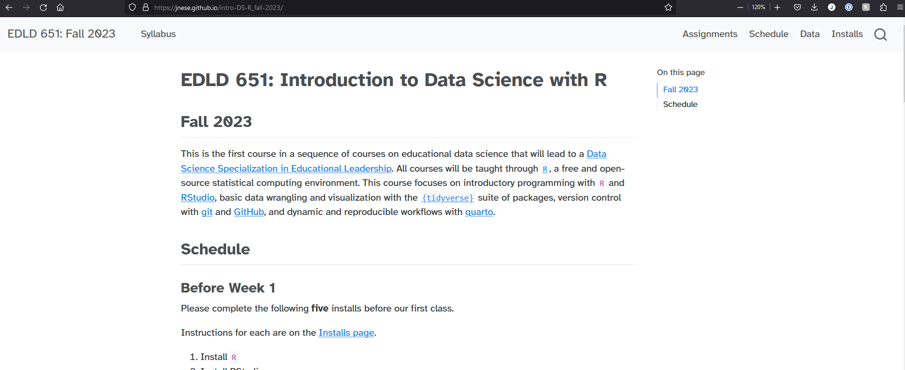
Introduction to Data Science with R
EDLD 651
How many popcorn kernels are in the jar?
(keep your guess to yourself!)
Introduction to the Course
Week 1
Agenda
- Introductions
- Syllabus
- Introduce
R
Learning Objectives
- Understand the course requirements
- Get you excited about
R!
About me
- husband, dad
- BA: UC Santa Barbara
- PhD, School Psychology: University of Maryland
- Behavioral Research & Teaching (BRT) at UO since 2009
- Research Associate Professor
Research
- Applied statistical methods to measure and monitor student growth
- Inform the applied research methodologies used by researchers
- Developing and improving systems that support data-based decision making using advanced technologies to influence teachers’ instructional practices and increase student achievement
Teaching
- EDLD 651 - this one!
- EDLD 654 - Applied Machine Learning for Educational Data Scientists
- EDLD 609 - Data Science Capstone
About you
Please introduce yourself
- Name and program/year of study
- Do you have any
Rexperience? - Tell me whatever you’d like me and the class to know (e.g., pronouns, circumstances, etc.)
- How many popcorn kernels are in the jar?
- No changing your answer! Academic integrity!
The Great Popcorn Experiment!
Why is this important?
- reproducibility
- transparency
- open data and code
Conduct reseach!
with quarto
Like we just did!
Create slides!
with quarto
Like these!
Create a website!
with {blogdown}, {distill}, {bookdown}, {rmarkdown}, or {quarto}
Create a dashboard!
with {flexdashboard}!
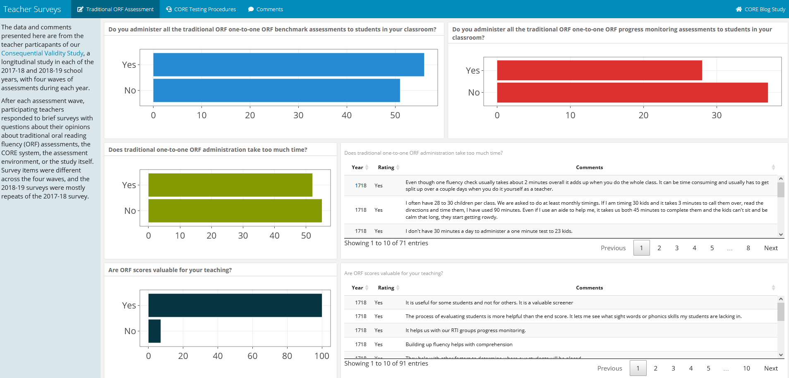
Create an app!
with {shiny}!
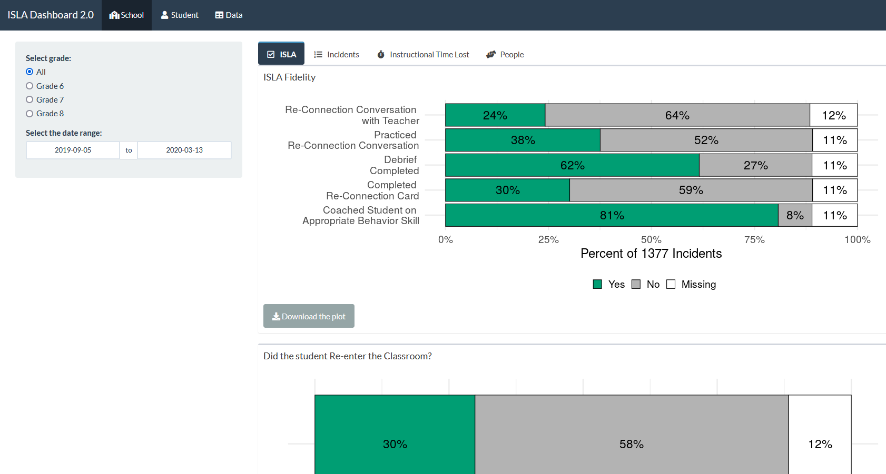
Create a poster!
with {posterdown}!
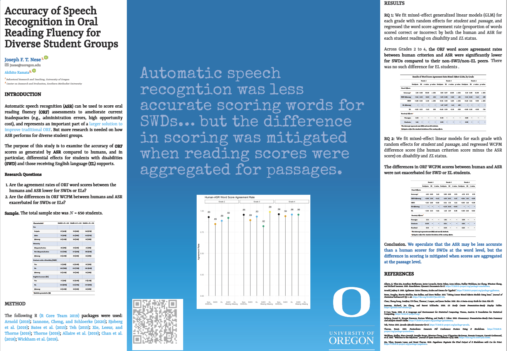

Why is R awesome?
. . .
Data visualizations
{ggplot2}– your default by the end of this class, really powerful{plotly}– interactive data visualizations{shiny}— interactive data communications
. . .
Web
{blogdown},{distill},{bookdown},quarto— build your own website{rvest}— scrape web data
. . .
Modeling
{lme4}— multilevel modeling{lavaan}— SEM{tidymodels}— machine learning
. . .
Workflow!
- RStudio projects
{here}
Acknowledgements
This course, and much of the materials prepared and content presented, was originally developed by Daniel Anderson
- Alison Hill, Chester Ismay, and Andrew Bray helped Daniel design the content for this course and the specialization as a whole
What this class is about
Celebrating successes!
. . .

Dr. Richard Feynman
American theoretical physicist, Nobel Laureate
. . .

Sharing
Sometimes I may ask people to share with the class something they have learned.
- A success, a new
{package}orfunction() - Completely voluntary
- BUT, you might get a hex sticker 🎉
. . .

A sharing example
“I made this cool figure!
I used the
{gghighlight}package for the first time!And I annoted my facets separately!”
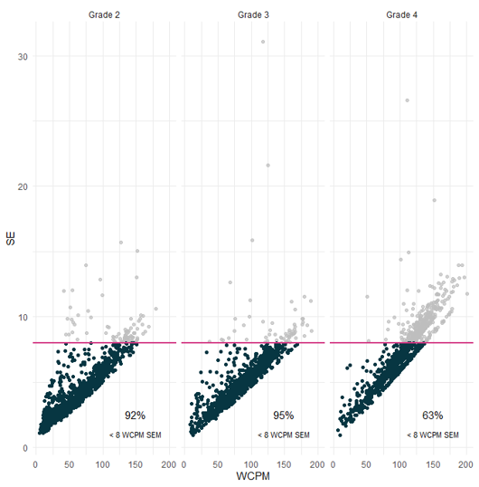
Another sharing example
“I went to re-run my ‘cool figure’ a couple months later and my code did not work!
I spent [mumble mumble] minutes getting it to work again!”
What this class is about
Celebrating failures!
. . .

What does Richard Feynman have to say about failing?
. . .
What this class is about
Celebrating trying!
. . .

Very smart person Richard Feynman said:
. . .

What this class is about
Learning to problem solve!
. . .

Richard?
. . .

This class…
…is
- data visualization
- data structuring and manipulations
- reproducible workflows
- a LOT (content and assignments at a fast pace)
. . .
…is not
- all encompassing
- a statistics course
- but we’ll use some stats in examples
Courageous Conversations with Me
- Creating norms of openness, understanding, and development
- An opportunity for us to grow
- Assume positive intent
- Critical for my work (and yours)
Credit: Dr. Rhonda Nese
Syllabus
Course Learning Outcomes
- Understand the
Rpackage ecosystem- how to find, install, load, and learn about them
- Read “flat” (i.e., rectangular) datasets into
R - Perform basic data manipulations / transformations in
Rwith the{tidyverse}- leverage appropriate functions for introductory data science tasks
- prepare data using scripts and reproducible workflows
- Use version control with
Rvia git and GitHub - Use Quarto to create reproducible dynamic reports
- Understand and create different types of data visualizations
Course Site
https://jnese.github.io/intro-DS-R_fall-2023/
- schedule
- slides (posted before each class)
- assignments (posted after each class)
- syllabus
- data
Canvas
- submit assignments
- course announcements
Required Textbooks (free)

RStudio Primers, R-Bootcamp, & Codecademy
- Supplemental learning opportunities that I hope are helpful
- Part of your “Supplemental Learning” grade
Resources
- UO Libraries Data Services
- cover statistical software (like R and Python), statistics, research design, GIS, git/GitHub
- learnR4free
- all sorts of resources (books, videos, websites, papers) to learn
Rfor free
- all sorts of resources (books, videos, websites, papers) to learn
- R-Ladies
- Global organization to promote gender diversity in the R community
- RStudio Community
- Similar to stackoverflow but friendlier (great place to post questions)
- Opinionated
- RStudio-philosophy dominant (as is this class)
Weekly Schedule
- Readings - do before class
- Homeworks - due before following class
- You can work in groups on these
Assignements
Homework (200 points)
- Homeworks – 10 at 10 points each (100 points)
- Supplemental Learning - 10 at 10 points each (100 points)
- RStudio Primers \(\times\) 4
- R-Bootcamp \(\times\) 2
- Codeacademy \(\times\) 4
- Screenshot of specific part of “Supplemental Learning”
Final Project (200 points)
- Outline (15 points)
- Draft Data Prep Script (25 points)
- Peer Review of Draft Data Prep Script (25 points)
- Final Project Presentation (25 points)
- Final Paper (110 points)
400 points total
Grading
| Lower % | Lower point range | Grade | Upper point range | Upper % |
|---|---|---|---|---|
| 97 | 388 | A+ | ||
| 93 | 372 | A | 384 | 96 |
| 90 | 360 | A- | 368 | 92 |
| 87 | 348 | B+ | 356 | 89 |
| 83 | 332 | B | 344 | 86 |
| 80 | 320 | B- | 328 | 82 |
| 77 | 308 | C+ | 316 | 79 |
| 73 | 292 | C | 304 | 76 |
| 70 | 280 | C- | 288 | 72 |
| F | 276 | 69 |
Homework
- Scored on a “best honest effort” basis
- generally zero or full credit
- If you find yourself stuck and unable to proceed, please contact the instructor/GE for help rather than submitting incomplete work
- Contacting the instructor/GE is part of the “best honest effort” and can result in full credit for an assignment even if the work is not fully complete
- If the assignment is not complete, and the student has not contacted the instructor for help, it is likely to result is a partial credit score or a zero
- Labs submitted late will be docked by 30% (3 points)
- Labs are generally due the class after they are assigned, before class starts
Final Project
- Group project, 3-4 people
- You select or me organize?
- Quarto document
Final project must:
- Be fully reproducible
- this implies the data are open
- Be a collaborative project hosted on GitHub
- Move data from its raw “messy” format to a tidy data format
- Include at least two exploratory plots
- Include at least summary statistics of the data in tables, although fitted models are also encouraged
Final Project - Dates
- Week 3 (10/11): Self-selected groups finalized
- Week 5 (10/25): Final Project Outline due
- Week 9 (11/23): Data prep script due
- Week 10 (11/29): Peer review due
- Week 10 (11/29): Final project presentations
- Week 11 (12/6): Final Paper due
Final Project - Paper Scoring Rubric
| Criteria | Points Possible |
|---|---|
Writing |
|
Abstract |
5 |
Introduction |
5 |
Methods |
5 |
Results |
5 |
Discussion |
5 |
References |
5 |
Code |
|
Document is fully reproducible |
25 |
Demonstrate use of inline code |
5 |
At least two data visualizations |
10 (5 pts each) |
Demonstrate tidying messy data using: |
|
|
5 |
|
5 |
|
5 |
|
5 |
At least one table of descriptive statistics |
10 |
|
5 |
|
5 |
Total |
110 |
Final Project - Outline
Primary purpose: Get feedback and give me a preview of your project
- Description of the data to be used
- Discussion of preparatory work that needs to be done
- How the requirements of the final project will be met
- Anything you want feedback on
Final Project - Data Prep Script
- Expected to be a work in progress
- Provided to your peers so they can learn from you as much as you can learn from their feedback
Peer Review
- Understand the purpose of the exercise
- Conducted as a professional product
- Should be very encouraging
- Zero tolerance policy for inappropriate comments
Final Project - Presentation
Order randomly assigned. Should cover the following:
- Share your journey (everyone, at least for a minute or two)
- Discuss challenges you had along the way
- Celebrate your successes
- Discuss challenges you are still facing
- Discuss substantive findings
- Show off your cool figures!
- Discuss next
Rhurdle you want to address
Final Project – Presentation Scoring Rubric
| Criteria | Points possible |
|---|---|
| Challenges faced along the way | 5 |
| Victories and things to celebrate | 5 |
| Challenges you are still facing | 5 |
| Substantive findings/interpretations | 5 |
| Next R hurdle to tackle | 5 |
| Total | 25 |
Final Projct - Paper
- Research Paper
- Abstract, Intro, Methods, Results, Discussion, References
- Should be brief: 3,500 words max
- No code displayed - should look like any other manuscript being submitted for publication
- Include at least 1 table
- Include at least 2 plots
- Should be fully open, reproducible, and housed on GitHub
- I should be able to clone your repository, open the RStudio Project, and reproduce the full manuscript (by rendering the Quarto doc)
git and GitHub
- Will be required for final project
- What is it?
- Version control system
- Collaboration tool
- Can be powerful for transparency and reproducibility
- More to come
- Think of a GitHub profile as a public resume and treat it as such
- Username advice from Jenny Bryan
. . .
Git might be frustrating, but we’ll get through it together!
Welcome to R !
What is R
Ris an environment and programming language, created primarily for statistical analyses and graphics- No point-and-click interface
- Open source
- source code is freely available, and can be redistributed and modified
- Incredibly powerful and flexible
- Vast array of external packages available for specialized functions (analyses, data visualizations, automate the data “cleaning” process)
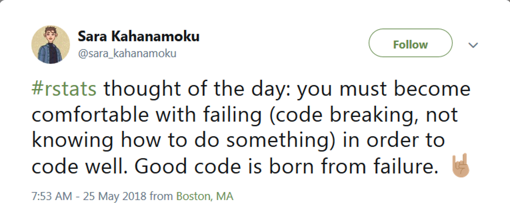

The bad news is that whenever you learn a new skill you’re going to suck. It’s going to be frustrating. The good news is that is typical and happens to everyone and it is only temporary. You can’t go from knowing nothing to becoming an expert without going through a period of great frustration and great suckiness.
– Hadley Wickham
Moving to code/programming
Advantages
- Flexibility
- Essentially anything is possible
- Transparency
- Documented history of your analysis
- Efficiency
- Many tasks can be automated
Disadvantages
- Steep learning curve
- Definitely requires a significant time investment
- Similar to learning a new language
- You will lose patience with point-and-click interfaces
- Likely to become “one of the converted”
Code-based Interface
This is the R console
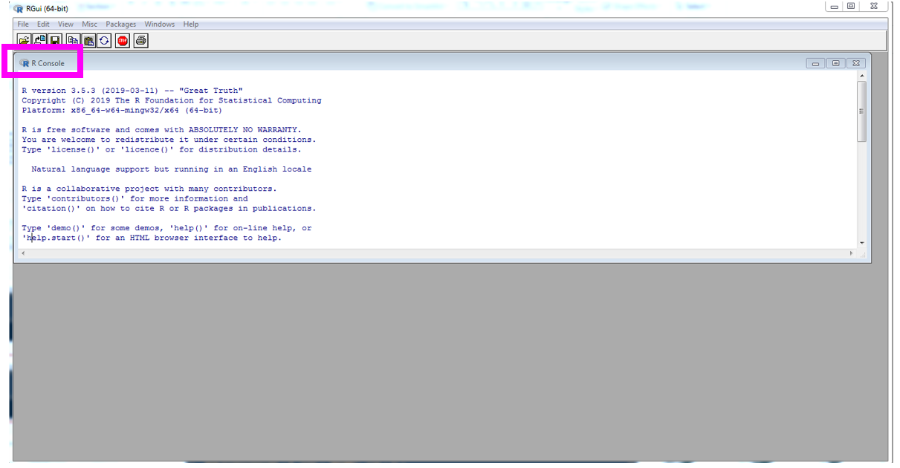
Code-based Interface
This is the RStudio IDE (Integrated Development Environment)
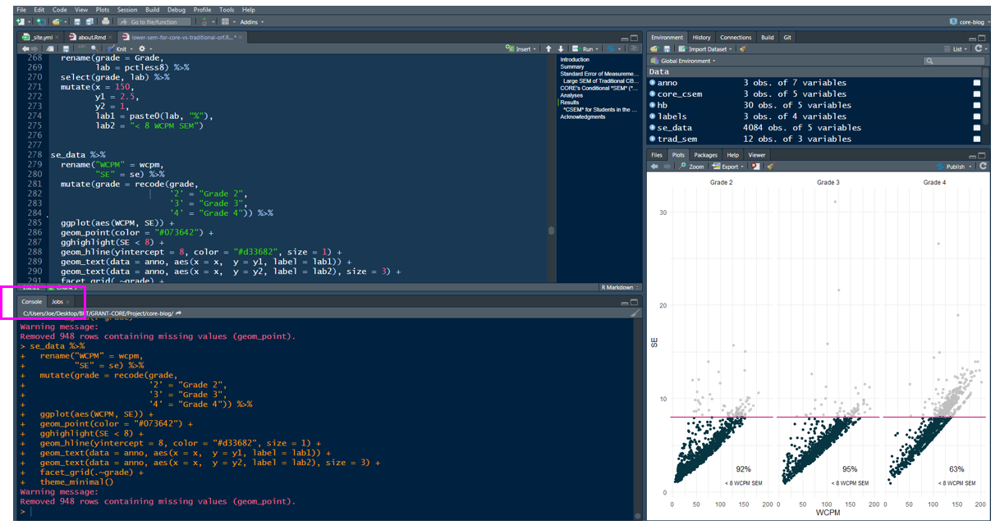
How to learn R?
- Time
- Use it!
- Dedication and determination help
- Be patient and forgiving with yourself, it will feel slow at first
- I still get frustrated
R as a big calculator
3 + 2[1] 5. . .
3 / (3+2)[1] 0.6Object Assignment <-
Objects are stored in active memory of your computer with names that you provide
. . .
<- is the assignment operator
. . .
It is used to assign names to objects (like an = operator)
. . .
a <- 3
b <- 2
a[1] 3. . .
a + b[1] 5. . .
a / (a + b)[1] 0.6Re-assignment
a[1] 3. . .
a <- 10
a[1] 10. . .
a <- "EDLD 651"
a[1] "EDLD 651"Data Types
Data can be a variety of types
. . .
- character:
"Hello world!"or"EDLD 651"
. . .
- numeric:
2and/or15.5- decimal also called
double
- decimal also called
. . .
- integer:
2- whole number also called an
integer - explicit about an integer
2L(theLtellsRto store this as an integer) ¯\(ツ)/¯
- whole number also called an
. . .
- logical:
TRUEorFALSE
. . .
These objects can be extremely useful in programming
Objects
Objects can also be:
- variables
- data sets
- models
- results
- functions
- figures
- more…
You can then use or manipulate these in different ways
- plots
- functions
- operators (arithmetic, logical, comparison)
R Functions
Anything that carries out an operation in R is a function, even +
Functions are generally followed by ()
function_name()sum()lm()sqrt()
. . .
function_name() == package_name::function_name()
the package is also called the “namespace”
Getting help
? before a function name can be very helpful (and also confusing early on)
. . .
- Helpful for understanding formal arguments of a function
- arguments are options within a
function()
- arguments are options within a
. . .
?function_name()
?mutate() #mutate() is a function in the {dplyr} package
?dplyr::mutate(). . .
?mean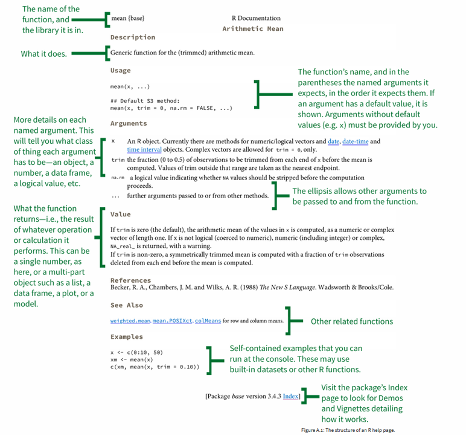 ::: aside https://socviz.co/ :::
Getting help
- Resources on syllabus
- Your classmates!
- Me
- Appointment by email
- If you email me with a question, provide your
Rfiles & data
- Google
- stackoverflow
Getting help
Generative AI (e.g., ChatGPT)
Back to Dr. Feynman
(Isaac Asimov, really)
Installs
Install Check
Also
- Register for GitHub account
- username advice from Jenny Bryan
Customize!
Customize your RStudio Display!
- Tools > Global Options > General
- Workspace
- Restore .RData into workspace at startup – Uncheck
- Save workspace to .RData on exit: – Never
- History
- Always save history (even when not saving .RData) – Check
Customize your RStudio Display!
- Tools > Global Options > Code > Display
- Highlight R function calls (I like it, up to you)
- Show indent guides (up to you)
Customize your RStudio Display!
- Tools > Global Options > Pane Layout
- As you like
- Tools > Global Options > Appearance
- Font, font size
- Editor theme!!
Keyboard Shortcuts
There are a lot…
Tools > Keyboard Shortcuts Help (Alt + Shift + K)
Tools > Modify Keyboard Shortcuts
. . .
My favorites (for Macs, sub Command for Ctrl)
Ctrl + Enter= run codeCtrl + Shift + M= insert pipe (%>%)Ctrl + Alt + I= insert code chunk in R MarkdownCtrl + Shift + C= comment a block
. . .
Other good ones
Alt + -= insert assignment operator (<-)Alt + Shift + Up/Down= add cursor above/below current cursor
demo
R Packages
The data science pipeline

. . .
How do we go about this?
“Out of the box” functionality
R Packages provide functions (and datasets) for you to use
Some packages are pre-loaded: no need to load (library(base)), you can use all of their functions anytime
{base}{graphics}{stats}
Some packages are pre-installed: you just need to load the package (library(MASS)) or use the namespace (MASS::cats)
{boot}{MASS}{Matrix}
Pre-loaded vs Installed
Pre-loaded packages work on launch
For example, plot() is part of the {graphics} package, which ships with R . . .
plot(x = 1:10, y = 1:10)
{base} package
- All functions come from a package
. . .
- What do you get with the following?
?'+'
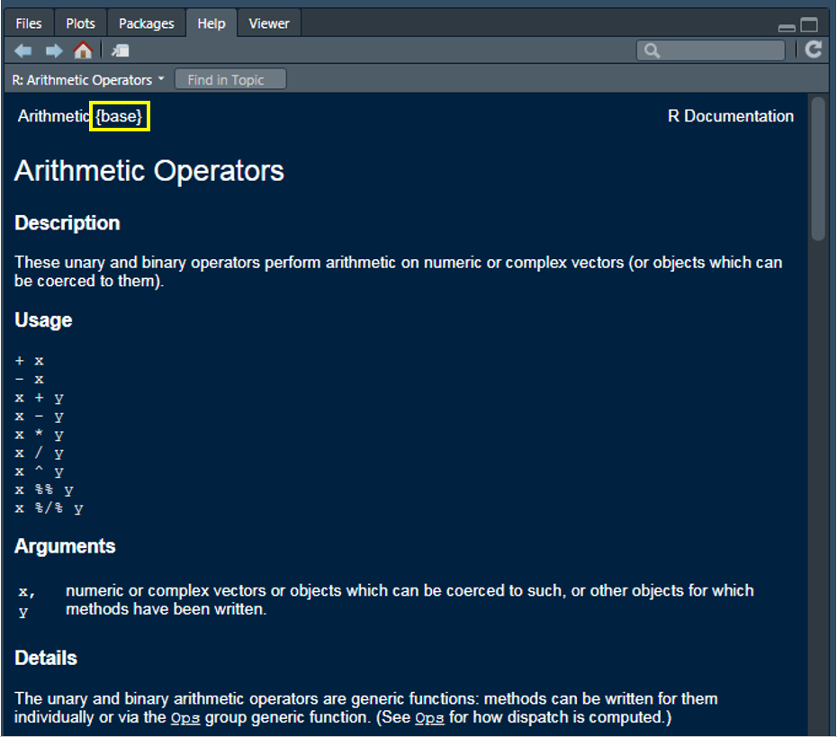
Packages on CRAN
There is a TON of functionality that comes with R right from your initial download BUT the functionality can be extended by installing other packages
. . .
CRAN is the official repository
- a network of servers maintained by the R community around the world
- coordinated by the R Foundation
- a package needs to pass several tests to be published on CRAN
. . .
Most often, you will first install a package, then load it
install.packages(“package_name”)library(package_name)
. . .
You will only need to install a package once (generally). After that, it is in your library and only needs to be loaded
One more time
. . .
install.packages(“package_name”)
. . .
- you will only need to do this the FIRST time you use the package
- don’t keep this code line (just run it in the console!)
- notices the quotes around the package name
. . .
library(package_name)
. . .
- you will do this every time you use the package in your scripts
- notices no quotes
Other packages
On GitHub
- Popular repository for open source projects
- Integrated with git (version control)
- Easy to share/collaborate
- Not necessarily
Rspecific - Generally, these packages “in development,” or are the beta versions of existing packages
- No review process associated with GitHub
Possibilities
With just a basic knowledge of R you have access to thousands of packages
- Expanding on a daily basis
- Currently, the CRAN package repository features 19,900+ packages
- 18,700+ last year at this time
- constantly evolving to keep up with the varied demands of the data science community
- Provides access to cutting edge and specialized functionality for analysis, data visualization, and data preparation
- Some of the most modern thinking on data analysis topics are often represented in these packages
Let’s dive in
(or end here for today)
How do we access variables (columns) in our data?
- Generally, in this course, with
{tidyverse}tools
. . .
- Sometimes with
baseusing$or with[]data_name$variable_namedata_name["variable_name"]
Some data
Let’s load the {tidyverse}, and then we’ll access some variables from the data sets within the packages
Then let’s take a glimpse at the gss_cat data which loads with tidyverse
. . .
# install.packages(“tidyverse”)
## if you have never installed {tidyverse} you'll need to do that first
library(tidyverse)
glimpse(gss_cat)Rows: 21,483
Columns: 9
$ year <int> 2000, 2000, 2000, 2000, 2000, 2000, 2000, 2000, 2000, 2000, 20…
$ marital <fct> Never married, Divorced, Widowed, Never married, Divorced, Mar…
$ age <int> 26, 48, 67, 39, 25, 25, 36, 44, 44, 47, 53, 52, 52, 51, 52, 40…
$ race <fct> White, White, White, White, White, White, White, White, White,…
$ rincome <fct> $8000 to 9999, $8000 to 9999, Not applicable, Not applicable, …
$ partyid <fct> "Ind,near rep", "Not str republican", "Independent", "Ind,near…
$ relig <fct> Protestant, Protestant, Protestant, Orthodox-christian, None, …
$ denom <fct> "Southern baptist", "Baptist-dk which", "No denomination", "No…
$ tvhours <int> 12, NA, 2, 4, 1, NA, 3, NA, 0, 3, 2, NA, 1, NA, 1, 7, NA, 3, 3…Selecting varaibles
Select the marital variable with $
. . .
gss_cat$marital. . .
[1] Never married Divorced Widowed Never married Divorced
[6] Married Never married Divorced Married Married
[11] Married Married Married Married Divorced
[16] Married Widowed Never married Married Married
[21] Married Married Never married Widowed Widowed
[26] Widowed Widowed Widowed Divorced Widowed
[31] Widowed Married Married Never married Married
[36] Never married Never married Never married Never married Never married
[41] Married Married Divorced Never married Never married
[46] Never married Married Married Married Married
[51] Never married Married Married Married Married
[56] Divorced Divorced Divorced Never married Never married
[61] Married Married Never married Divorced Never married
[66] Widowed Divorced Married Never married Never married
[71] Widowed Widowed Widowed Widowed Widowed
[76] Never married Widowed Never married Married Never married
[81] Married Married Widowed Married Married
[86] Divorced Never married Separated Never married Widowed
[91] Widowed Married Divorced Never married Never married
[96] Never married Married Married Widowed Divorced
[101] Married Married Married Married Widowed
[106] Married Divorced Divorced Married Never married
[111] Married Married Separated Married Never married
[116] Divorced Divorced Separated Married Widowed
[121] Separated Divorced Married Divorced Never married
[126] Divorced Divorced Married Never married Never married
[131] Never married Married Married Divorced Widowed
[136] Never married Widowed Divorced Separated Widowed
[141] Never married Widowed Widowed Widowed Widowed
[146] Never married Never married Never married Never married Never married
[151] Never married Never married Married Married Separated
[156] Never married Widowed Widowed Married Married
[161] Married Married Married Never married Married
[166] Divorced Never married Married Married Married
[171] Never married Never married Married Married Married
[176] Married Married Married Married Married
[181] Married Widowed Widowed Married Married
[186] Married Divorced Married Married Never married
[191] Never married Never married Divorced Never married Never married
[196] Married Never married Separated Never married Never married
[201] Divorced Widowed Separated Married Married
[206] Separated Divorced Divorced Never married Married
[211] Married Married Married Married Never married
[216] Never married Never married Married Married Separated
[221] Married Never married Married Never married Divorced
[226] Never married Never married Never married Married Married
[231] Never married Married Widowed Married Never married
[236] Divorced Married Separated Married Married
[241] Married Widowed Married Widowed Married
[246] Never married Married Married Married Widowed
[251] Married Married Married Divorced Never married
[256] Married Married Divorced Married Never married
[261] Separated Divorced Widowed Married Separated
[266] Widowed Married Never married Never married Married
[271] Married Never married Never married Never married Divorced
[276] Widowed Separated Divorced Widowed Never married
[281] Never married Never married Married Married Never married
[286] Never married Never married Divorced Never married Divorced
[291] Married Never married Separated Separated Never married
[296] Married Never married Divorced Never married Never married
[301] Never married Never married Divorced Divorced Married
[306] Married Married Married Married Divorced
[311] Married Married Married Never married Married
[316] Never married Never married Married Married Married
[321] Divorced Never married Never married Married Married
[326] Married Never married Never married Never married Married
[331] Widowed Married Married Widowed Married
[336] Married Married Never married Never married Married
[341] Married Married Married Married Never married
[346] Married Married Never married Never married Widowed
[351] Married Married Married Never married Married
[356] Married Never married Married Divorced Married
[361] Married Separated Never married Never married Married
[366] Married Divorced Married Married Never married
[371] Never married Never married Never married Divorced Married
[376] Married Divorced Never married Never married Married
[381] Never married Widowed Married Married Divorced
[386] Married Married Separated Married Married
[391] Married Widowed Divorced Married Married
[396] Married Divorced Married Divorced Never married
[401] Married Married Never married Separated Separated
[406] Never married Divorced Married Married Married
[411] Married Married Never married Married Married
[416] Married Married Never married Married Married
[421] Married Married Divorced Divorced Married
[426] Married Married Married Never married Married
[431] Never married Married Never married Divorced Divorced
[436] Divorced Never married Married Separated Divorced
[441] Widowed Divorced Divorced Never married Divorced
[446] Widowed Divorced Divorced Divorced Never married
[451] Divorced Widowed Widowed Married Married
[456] Never married Never married Never married Married Married
[461] Married Widowed Divorced Never married Married
[466] Married Married Never married Married Married
[471] Married Widowed Never married Married Divorced
[476] Divorced Married Widowed Married Married
[481] Married Married Married Never married Divorced
[486] Married Never married Separated Widowed Divorced
[491] Married Married Never married Separated Never married
[496] Married Married Married Married Never married
[501] Married Married Never married Divorced Married
[506] Married Married Never married Never married Never married
[511] Never married Never married Never married Never married Never married
[516] Never married Never married Married Separated Married
[521] Never married Divorced Married Widowed Married
[526] Never married Married Married Never married Widowed
[531] Never married Never married Married Married Separated
[536] Never married Never married Married Married Married
[541] Married Divorced Married Married Married
[546] Married Married Widowed Separated Separated
[551] Never married Widowed Widowed Divorced Never married
[556] Separated Divorced Never married Never married Never married
[561] Married Married Never married Married Married
[566] Married Divorced Married Married Never married
[571] Married Married Divorced Never married Married
[576] Married Married Never married Married Never married
[581] Never married Married Married Separated Never married
[586] Never married Widowed Married Married Divorced
[591] Married Married Married Married Married
[596] Married Married Widowed Never married Divorced
[601] Married Married Married Never married Never married
[606] Never married Never married Never married Never married Married
[611] Married Never married Married Married Married
[616] Married Never married Separated Married Never married
[621] Never married Married Married Never married Married
[626] Never married Divorced Married Divorced Widowed
[631] Married Never married Married Never married Separated
[636] Divorced Never married Widowed Separated Married
[641] Never married Married Never married Never married Never married
[646] Divorced Divorced Never married Never married Married
[651] Divorced Never married Married Married Widowed
[656] Never married Separated Divorced Divorced Divorced
[661] Never married Married Divorced Married Separated
[666] Never married Married Married Married Married
[671] Married Married Married Never married Widowed
[676] Never married Never married Divorced Never married Married
[681] Never married Never married Married Married Married
[686] Married Married Never married Divorced Separated
[691] Divorced Married Married Married Married
[696] Married Married Married Married Never married
[701] Divorced Married Divorced Never married Never married
[706] Never married Never married Widowed Married Married
[711] Never married Never married Married Divorced Married
[716] Married Married Widowed Never married Never married
[721] Divorced Married Married Married Divorced
[726] Divorced Married Widowed Never married Widowed
[731] Married Widowed Divorced Married Married
[736] Widowed Widowed Divorced Separated Widowed
[741] Married Married Married Never married Married
[746] Married Married Married Married Married
[751] Married Married Married Married Married
[756] Married Never married Never married Married Divorced
[761] Married Married Never married Never married Widowed
[766] Married Widowed Married Married Never married
[771] Never married Never married Divorced Divorced Never married
[776] Divorced Never married Never married Never married Married
[781] Divorced Married Widowed Married Married
[786] Never married Married Divorced Divorced Never married
[791] Never married Divorced Divorced Married Married
[796] Never married Married Separated Married Married
[801] Married Never married Never married Married Married
[806] Married Never married Widowed Widowed Widowed
[811] Widowed Married Married Widowed Married
[816] Married Never married Widowed Widowed Never married
[821] Divorced Divorced Married Divorced Separated
[826] Married Married Widowed Never married Married
[831] Never married Married Married Never married Married
[836] Married Married Widowed Married Widowed
[841] Married Never married Separated Widowed Married
[846] Widowed Never married Widowed Widowed Widowed
[851] Married Married Widowed Separated Married
[856] Married Separated Married Widowed Married
[861] Divorced Never married Widowed Never married Never married
[866] Divorced Married Never married Married Divorced
[871] Married Married Never married Divorced Never married
[876] Divorced Widowed Divorced Married Divorced
[881] Divorced Widowed Widowed Never married Married
[886] Divorced Married Married Divorced Married
[891] Widowed Married Married Married Married
[896] Married Married Married Married Married
[901] Never married Married Never married Divorced Married
[906] Widowed Divorced Divorced Married Divorced
[911] Married Married Never married Divorced Separated
[916] Married Never married Divorced Never married Never married
[921] Widowed Never married Married Married Divorced
[926] Separated Separated Married Divorced Divorced
[931] Married Divorced Married Divorced Never married
[936] Divorced Divorced Never married Never married Never married
[941] Married Widowed Married Married Divorced
[946] Married Divorced Divorced Married Married
[951] Married Married Never married Divorced Divorced
[956] Never married Separated Never married Married Married
[961] Married Married Married Never married Married
[966] Never married Married Divorced Married Married
[971] Never married Never married Married Divorced Widowed
[976] Divorced Never married Married Married Divorced
[981] Married Never married Never married Never married Separated
[986] Never married Divorced Married Divorced Married
[991] Married Married Married Married Married
[996] Married Never married Married Married Married
[1001] Divorced Never married Married Married Married
[1006] Married Married Married Married Married
[1011] Divorced Separated Married Widowed Married
[1016] Never married Separated Married Never married Never married
[1021] Never married Divorced Married Married Separated
[1026] Married Married Never married Married Married
[1031] Married Married Divorced Never married Married
[1036] Married Married Divorced Divorced Married
[1041] Married Married Married Married Separated
[1046] Married Married Separated Divorced Married
[1051] Married Married Separated Married Never married
[1056] Married Never married Never married Married Married
[1061] Married Married Married Married Divorced
[1066] Married Married Married Married Married
[1071] Never married Married Married Married Married
[1076] Divorced Married Married Married Never married
[1081] Never married Never married Never married Divorced Divorced
[1086] Divorced Married Married Divorced Never married
[1091] Married Married Divorced Divorced Married
[1096] Married Separated Never married Married Never married
[1101] Married Never married Divorced Never married Married
[1106] Married Married Married Married Married
[1111] Married Married Never married Never married Widowed
[1116] Never married Divorced Married Never married Married
[1121] Married Never married Never married Never married Married
[1126] Never married Married Never married Widowed Married
[1131] Never married Married Never married Never married Separated
[1136] Widowed Never married Married Married Divorced
[1141] Divorced Divorced Married Married Married
[1146] Married Married Married Married Married
[1151] Widowed Never married Never married Never married Never married
[1156] Never married Never married Married Widowed Married
[1161] Married Married Widowed Married Married
[1166] Widowed Never married Married Divorced Widowed
[1171] Married Married Married Divorced Married
[1176] Never married Divorced Married Married Married
[1181] Divorced Widowed Never married Divorced Divorced
[1186] Separated Divorced Separated Married Separated
[1191] Divorced Married Never married Never married Widowed
[1196] Never married Never married Divorced Separated Married
[1201] Divorced Divorced Divorced Married Married
[1206] Divorced Never married Never married Married Married
[1211] Married Widowed Widowed Divorced Never married
[1216] Married Married Married Married Married
[1221] Divorced Never married Married Married Divorced
[1226] Divorced Divorced Married Divorced Married
[1231] Married Divorced Divorced Married Separated
[1236] Married Married Divorced Divorced Divorced
[1241] Married Never married Married Never married Widowed
[1246] Married Never married Divorced Never married Married
[1251] Married Never married Divorced Widowed Never married
[1256] Married Married Never married Never married Married
[1261] Married Married Married Widowed Married
[1266] Married Divorced Married Married Married
[1271] Married Married Married Divorced Married
[1276] Never married Married Married Married Never married
[1281] Married Divorced Widowed Married Widowed
[1286] Widowed Never married Married Married Married
[1291] Married Never married Divorced Divorced Married
[1296] Never married Never married Divorced Never married Never married
[1301] Divorced Divorced Never married Never married Married
[1306] Divorced Married Divorced Married Married
[1311] Separated Never married Married Never married Divorced
[1316] Married Married Never married Divorced Divorced
[1321] Married Married Divorced Widowed Never married
[1326] Married Married Married Never married Never married
[1331] Never married Divorced Divorced Divorced Never married
[1336] Never married Never married Married Never married Never married
[1341] Never married Divorced Married Married Married
[1346] Never married Divorced Married Married Never married
[1351] Never married Married Married Separated Married
[1356] Married Married Married Married Divorced
[1361] Divorced Never married Married Never married Never married
[1366] Never married Divorced Divorced Never married Widowed
[1371] Never married Widowed Separated Never married Divorced
[1376] Never married Widowed Widowed Never married Never married
[1381] Widowed Never married Separated Married Divorced
[1386] Separated Married Divorced Divorced Never married
[1391] Never married Married Married Married Married
[1396] Married Divorced Widowed Married Married
[1401] Never married Never married Never married Married Married
[1406] Never married Married Widowed Married Married
[1411] Married Divorced Married Divorced Married
[1416] Married Never married Married Married Divorced
[1421] Never married Married Married Divorced Married
[1426] Married Widowed Never married Married Divorced
[1431] Separated Married Never married Married Never married
[1436] Married Married Separated Never married Divorced
[1441] Married Married Divorced Never married Never married
[1446] Never married Married Divorced Widowed Married
[1451] Divorced Never married Separated Divorced Married
[1456] Never married Never married Never married Never married Never married
[1461] Never married Married Married Divorced Never married
[1466] Never married Married Married Never married Never married
[1471] Married Married Married Married Divorced
[1476] Never married Married Never married Never married Separated
[1481] Divorced Never married Never married Never married Separated
[1486] Married Married Divorced Married Married
[1491] Married Married Married Separated Divorced
[1496] Never married Divorced Married Divorced Married
[1501] Divorced Never married Married Never married Married
[1506] Never married Married Married Never married Widowed
[1511] Widowed Never married Married Separated Married
[1516] Married Married Married Married Widowed
[1521] Never married Married Married Divorced Married
[1526] Married Never married Married Widowed Married
[1531] Widowed Widowed Married Married Widowed
[1536] Married Married Widowed Married Never married
[1541] Separated Married Married Married Never married
[1546] No answer Never married Never married Married Married
[1551] Married Never married Never married Married Divorced
[1556] Married Married Married Married Married
[1561] Divorced Never married Never married Never married Never married
[1566] Never married Divorced Divorced Divorced Married
[1571] Never married Divorced Never married Never married Never married
[1576] Married Married Never married Married Never married
[1581] Divorced Married Married Never married Never married
[1586] Divorced Married Never married Divorced Divorced
[1591] Divorced Married Divorced Never married Married
[1596] Never married Divorced Separated Married Married
[1601] Married Married Married Married Never married
[1606] Married Married Never married Never married Never married
[1611] Widowed Never married Separated Divorced Married
[1616] Married Married Married Married Married
[1621] Married Never married Never married Never married Married
[1626] Never married Divorced Married Married Never married
[1631] Married Married Married Married Never married
[1636] Married Married Married Married Married
[1641] Never married Never married Widowed Never married Never married
[1646] Divorced Never married Divorced Never married Never married
[1651] Divorced Married Married Never married Married
[1656] Divorced Never married Married Married Married
[1661] Divorced Divorced Married Divorced Widowed
[1666] Divorced Never married Divorced Married Divorced
[1671] Never married Separated Married Divorced Widowed
[1676] Never married Married Widowed Married Married
[1681] Married Married Married Married Married
[1686] Married Divorced Widowed Divorced Never married
[1691] Divorced Never married Never married Married Never married
[1696] Married Divorced Divorced Divorced Married
[1701] Divorced Never married Divorced Married Separated
[1706] Married Married Married Married Married
[1711] Married Divorced Never married Never married Married
[1716] Never married Widowed Divorced Separated Married
[1721] Never married Never married Married Widowed Never married
[1726] Never married Never married Never married Never married Divorced
[1731] Never married Never married Never married Never married Never married
[1736] Married Married Divorced Married Married
[1741] Never married Separated Married Married Married
[1746] Widowed Married Widowed Married Widowed
[1751] Widowed Married Never married Divorced Divorced
[1756] Married Married Never married Married Widowed
[1761] Married Married Married Never married Divorced
[1766] Never married Never married Never married Never married Married
[1771] Widowed Widowed Separated Divorced Widowed
[1776] Divorced Never married Divorced Widowed Divorced
[1781] Divorced Married Married Never married Married
[1786] Divorced Divorced Never married Married Married
[1791] Never married Never married Never married Never married Married
[1796] Never married Married Married Married Married
[1801] Married Married Married Married Widowed
[1806] Widowed Married Married Married Divorced
[1811] Never married Never married Married Married Widowed
[1816] Divorced Divorced Never married Married Widowed
[1821] Separated Married Widowed Widowed Married
[1826] Never married Never married Divorced Married Divorced
[1831] Never married Separated Widowed Separated Never married
[1836] Divorced Divorced Married Never married Never married
[1841] Never married Married Never married Never married Divorced
[1846] Divorced Separated Never married Never married Never married
[1851] Married Married Married Divorced Married
[1856] Married Separated Never married Never married Married
[1861] Married Married Divorced Married Never married
[1866] Married Never married Divorced Never married Married
[1871] Married Never married Never married Married Married
[1876] Never married Never married Married Divorced Married
[1881] Divorced Divorced Widowed Married Widowed
[1886] Married Never married Married Married Married
[1891] Married Never married Never married Never married Never married
[1896] Never married Never married Never married Never married Never married
[1901] Divorced Never married Never married Never married Married
[1906] Never married Never married Never married Never married Never married
[1911] Never married Never married Never married Never married Divorced
[1916] Married Never married Never married Never married Never married
[1921] Never married Married Married Married Married
[1926] Never married Never married Widowed Never married Widowed
[1931] Never married Never married Never married Never married Never married
[1936] Widowed Separated Married Never married Never married
[1941] Separated Married Widowed Widowed Divorced
[1946] Divorced Divorced Married Married Married
[1951] Married Married Married Divorced Divorced
[1956] Married Married Married Married Married
[1961] Married Married Never married Married Divorced
[1966] Divorced Married Never married Married Married
[1971] Married Never married Married Divorced Married
[1976] Divorced Widowed Married Married Separated
[1981] Separated Married Never married Separated Widowed
[1986] Separated Married Divorced Divorced Widowed
[1991] Divorced Married Married Married Married
[1996] Never married Never married Married Never married Married
[2001] Never married Married Married Never married Married
[2006] Married Married Divorced Divorced Divorced
[2011] Married Married Married Married Never married
[2016] Married Married Widowed Widowed Widowed
[2021] Widowed Never married Widowed Married Married
[2026] Widowed Married Married Married Widowed
[2031] Separated Never married Never married Divorced Married
[2036] Married Married Married Separated Never married
[2041] Never married Married Divorced Never married Never married
[2046] Married Divorced Married Never married Separated
[2051] Married Married Widowed Never married Widowed
[2056] Never married Never married Divorced Married Divorced
[2061] Divorced Never married Married Never married Divorced
[2066] Married Married Divorced Never married Married
[2071] Married Separated Married Never married Married
[2076] Married Never married Never married Divorced Married
[2081] Divorced Divorced Never married Divorced Never married
[2086] Separated Widowed Never married Married Married
[2091] Divorced Divorced Never married Widowed Married
[2096] Never married Widowed Widowed Married Married
[2101] Widowed Divorced Widowed Divorced Separated
[2106] Widowed Married Married Never married Married
[2111] Widowed Married Divorced Married Never married
[2116] Never married Never married Married Married Never married
[2121] Never married Divorced Married Divorced Never married
[2126] Divorced Never married Never married Divorced Never married
[2131] Divorced Never married Married Divorced Never married
[2136] Married Married Widowed Married Married
[2141] Never married Never married Married Married Married
[2146] Married Widowed Married Married Never married
[2151] Divorced Never married Married Never married Never married
[2156] Divorced Married Never married Married Married
[2161] Widowed Married Married Married Divorced
[2166] Never married Never married Married Never married Never married
[2171] Married Never married Married Married Married
[2176] Divorced Married Married Married Married
[2181] Never married Married Married Widowed Married
[2186] Married Divorced Never married Divorced Married
[2191] Married Married Married Married Widowed
[2196] Married Married Married Married Married
[2201] Married Never married Married Widowed Married
[2206] Married Married Divorced Divorced Married
[2211] Married Married Never married Married Divorced
[2216] Married Married Married Married Never married
[2221] Married Never married Married Married Married
[2226] Married Married Married Never married Widowed
[2231] Widowed Married Married Married Divorced
[2236] Married Married Married Divorced Widowed
[2241] Married Married Divorced Married Never married
[2246] Married Divorced Married Married Married
[2251] Widowed Divorced Widowed Married Married
[2256] Widowed Married Married Married Married
[2261] Widowed Widowed Married Divorced Divorced
[2266] Married Married Widowed Divorced Never married
[2271] Never married Never married Divorced Married Widowed
[2276] Widowed Never married Never married Never married Divorced
[2281] Divorced Never married Never married Married Never married
[2286] Divorced Never married Married Never married Never married
[2291] Never married Married Never married Never married Married
[2296] Divorced Married Married Married Separated
[2301] Never married Married Married Married Married
[2306] Widowed Married Married Divorced Divorced
[2311] Widowed Divorced Married Divorced Married
[2316] Married Married Widowed Married Married
[2321] Divorced Married Married Married Married
[2326] Never married Separated Never married Never married Never married
[2331] Never married Divorced Never married Never married Widowed
[2336] Never married Married Separated Married Married
[2341] Never married Never married Never married Widowed Married
[2346] Married Married Divorced Married Divorced
[2351] Married Married Married Married Married
[2356] Married Married Married Divorced Never married
[2361] Widowed Married Married Married Married
[2366] Married Married Widowed Married Married
[2371] Married Married Widowed Never married Married
[2376] Married Divorced Divorced Married Married
[2381] Married Married Married Married Widowed
[2386] Married Married Married Married Married
[2391] Never married Married Married Married Married
[2396] Married Widowed Married Married Never married
[2401] Widowed Never married Never married Married Widowed
[2406] Married Married Married Married Married
[2411] Divorced Married Married Married Divorced
[2416] Married Divorced Divorced Married Married
[2421] Widowed Married Widowed Widowed Married
[2426] Married Divorced Divorced Married Married
[2431] Married Married Married Married Married
[2436] Divorced Married Never married Married Married
[2441] Married Married Married Married Widowed
[2446] Never married Married Married Never married Widowed
[2451] Married Widowed Married Married Never married
[2456] Never married Married Widowed Married Married
[2461] Divorced Married Widowed Divorced Married
[2466] Divorced Separated Divorced Separated Married
[2471] Divorced Never married Separated Married Never married
[2476] Never married Married Married Widowed Married
[2481] Never married Divorced Separated Never married Never married
[2486] Divorced Married Married Separated Widowed
[2491] Married Married Widowed Never married Married
[2496] Never married Married Separated Married Never married
[2501] Divorced Never married Married Never married Married
[2506] Married Married Married Married Divorced
[2511] Married Separated Married Divorced Never married
[2516] Married Never married Married Divorced Never married
[2521] Widowed Married Married Never married Married
[2526] Married Married Married Divorced Married
[2531] Married Never married Widowed Widowed Widowed
[2536] Married Widowed Divorced Married Married
[2541] Married Married Married Divorced Never married
[2546] Separated Never married Married Divorced Married
[2551] Married Divorced Widowed Widowed Divorced
[2556] Divorced Married Married Never married Never married
[2561] Never married Divorced Never married Never married Never married
[2566] Never married Never married Never married Married Married
[2571] Married Married Never married Married Never married
[2576] Married Married Married Divorced Widowed
[2581] Married Married Divorced Married Divorced
[2586] Married Divorced Divorced Widowed Married
[2591] Divorced Married Never married Married Married
[2596] Never married Widowed Married Never married Widowed
[2601] Married Married Married Married Married
[2606] Married Widowed Married Married Married
[2611] Never married Never married Widowed Married Divorced
[2616] Married Married Married Widowed Married
[2621] Widowed Married Never married Married Married
[2626] Widowed Married Divorced Married Divorced
[2631] Married Married Married Widowed Widowed
[2636] Never married Never married Divorced Separated Married
[2641] Married Never married Widowed Married Never married
[2646] Widowed Never married Married Married Married
[2651] Divorced Married Widowed Never married Never married
[2656] Married Separated Divorced Never married Married
[2661] Married Married Married Widowed Widowed
[2666] Married Married Never married Never married Married
[2671] Married Never married Married Married Married
[2676] Married Divorced Divorced Divorced Married
[2681] Married Married Married Widowed Never married
[2686] Divorced Widowed Never married Widowed Divorced
[2691] Never married Married Divorced Divorced Widowed
[2696] Divorced Widowed Never married Separated Married
[2701] Married Never married Married Never married Married
[2706] Never married Married Married Married Divorced
[2711] Married Married Divorced Married Married
[2716] Widowed Married Married Married Married
[2721] Married Never married Married Married Married
[2726] Divorced Married Married Married Married
[2731] Married Widowed Married Married Married
[2736] Married Married Divorced Widowed Divorced
[2741] Married Divorced Married Divorced Widowed
[2746] Married Married Married Divorced Widowed
[2751] Separated Married Never married Never married Divorced
[2756] Divorced Never married Never married Married Married
[2761] Married Married Married Married Married
[2766] Married Widowed Married Divorced Widowed
[2771] Widowed Widowed Married Never married Married
[2776] Never married Widowed Never married Married Divorced
[2781] Married Separated Never married Divorced Married
[2786] Widowed Married Never married Married Divorced
[2791] Married Married Married Married Married
[2796] Widowed Widowed Widowed Married Married
[2801] Divorced Divorced Married Married Divorced
[2806] Married Never married Married Married Never married
[2811] Never married Married Married Divorced Married
[2816] Married Divorced Divorced Married Separated
[2821] Divorced Divorced Divorced Married Married
[2826] Divorced Never married Married Married Married
[2831] Divorced Married Married Divorced Never married
[2836] Divorced Never married Never married Separated Married
[2841] Married Married Widowed Widowed Divorced
[2846] Never married Never married Divorced Married Never married
[2851] Never married Never married Widowed Married Never married
[2856] Divorced Divorced Never married Separated Divorced
[2861] Divorced Married Never married Never married Married
[2866] Divorced Married Married Married Divorced
[2871] Married Divorced Married Widowed Divorced
[2876] Widowed Divorced Married Never married Widowed
[2881] Married Married Widowed Widowed Widowed
[2886] Widowed Widowed Widowed Divorced Widowed
[2891] Married Separated Married Divorced Never married
[2896] Married Married Divorced Married Married
[2901] Divorced Widowed Widowed Never married Divorced
[2906] Widowed Widowed Married Married Never married
[2911] Never married Married Divorced Divorced Never married
[2916] Married Divorced Never married Divorced Divorced
[2921] Divorced Never married Married Separated Never married
[2926] Divorced Married Never married Married Separated
[2931] Married Divorced Never married Divorced Divorced
[2936] Widowed Separated Never married Widowed Divorced
[2941] Married Widowed Widowed Married Separated
[2946] Never married Married Married Divorced Never married
[2951] Married Never married Married Separated Married
[2956] Married Married Divorced Married Married
[2961] Married Never married Married Widowed Married
[2966] Married Widowed Never married Never married Never married
[2971] Married Widowed Married Married Never married
[2976] Married Married Never married Never married Married
[2981] Widowed Widowed Never married Married Separated
[2986] Widowed Married Married Divorced Married
[2991] Separated Married Never married Married Married
[2996] Married Married Divorced Never married Married
[3001] Never married Divorced Never married Never married Divorced
[3006] Divorced Never married Never married Divorced Married
[3011] Married Married Married Married Divorced
[3016] Never married Married Married Married Never married
[3021] Divorced Married Never married Never married Divorced
[3026] Divorced Married Divorced Never married Divorced
[3031] Married Married Widowed Married Married
[3036] Married Married Never married Married Married
[3041] Married Divorced Divorced Married Married
[3046] Widowed Separated Married Never married Widowed
[3051] Married Married Married Never married Married
[3056] Married Married Never married Never married Never married
[3061] Never married Widowed Married Married Separated
[3066] Divorced Never married Married Married Never married
[3071] Married Never married Never married Never married Never married
[3076] Divorced Never married Never married Married Never married
[3081] Widowed Married Never married Never married Never married
[3086] Never married Never married Never married Never married Never married
[3091] Married Married Married Married Never married
[3096] Married Separated Married Married Never married
[3101] Married Married Married Married Divorced
[3106] Never married Married Divorced Married Never married
[3111] Married Married Widowed Divorced Divorced
[3116] Never married Married Divorced Married Married
[3121] Married Married Married Married Never married
[3126] Married Married Married Never married Married
[3131] Married Married Married Never married Married
[3136] Divorced Married Never married Never married Married
[3141] Married Married Widowed Separated Divorced
[3146] Never married Never married Married Never married Never married
[3151] Never married Never married Never married Never married Married
[3156] Separated Married Married Married Never married
[3161] Never married Married Never married Married Never married
[3166] Married Married Never married Never married Divorced
[3171] Separated Married Divorced Never married Married
[3176] Never married Married Divorced Married Married
[3181] Married Divorced Married Married Never married
[3186] Married Widowed Married Married Married
[3191] Never married Never married Never married Married Married
[3196] Married Separated Separated Married Divorced
[3201] Married Separated Divorced Married Divorced
[3206] Married Married Never married Widowed Divorced
[3211] Married Married Separated Married Never married
[3216] Married Married Married Separated Never married
[3221] Married Separated Married Never married Married
[3226] Never married Never married Divorced Divorced Never married
[3231] Never married Married Married Never married Never married
[3236] Divorced Divorced Never married Never married Never married
[3241] Never married Separated Separated Never married Never married
[3246] Never married Married Never married Married Never married
[3251] Never married Widowed Divorced Divorced Married
[3256] Never married Separated Never married Married Married
[3261] Never married Married Never married Divorced Never married
[3266] Divorced Never married Married Married Widowed
[3271] Married Divorced Never married Married Never married
[3276] Widowed Widowed Never married Never married Separated
[3281] Divorced Widowed Married Married Married
[3286] Married Married Divorced Never married Married
[3291] Widowed Widowed Married Never married Married
[3296] Married Separated Widowed Married Separated
[3301] Never married Never married Separated Married Never married
[3306] Widowed Never married Widowed Married Never married
[3311] Widowed Married Married Married Married
[3316] Married Married Married Married Married
[3321] Married Never married Married Never married Married
[3326] Married Married Divorced Married Widowed
[3331] Married Never married Divorced Never married Married
[3336] Divorced Never married Married Married Never married
[3341] Married Married Never married Married Married
[3346] Married Married Married Married Married
[3351] Never married Married Married Married Married
[3356] Divorced Never married Divorced Married Married
[3361] Married Married Married Widowed Married
[3366] Married Married Divorced Widowed Married
[3371] Never married Widowed Married Divorced Married
[3376] Married Never married Divorced Married Married
[3381] Married Divorced Never married Divorced Never married
[3386] Never married Widowed Never married Divorced Never married
[3391] Divorced Separated Separated Married Never married
[3396] Married Never married Separated Divorced Never married
[3401] Divorced Widowed Widowed Never married Married
[3406] Married Married Divorced Never married Divorced
[3411] Married Never married Never married Never married Separated
[3416] Married Married Married Married Married
[3421] Married Married Married Married Separated
[3426] Never married Widowed Divorced Married Divorced
[3431] Married Married Married Married Married
[3436] Divorced Married Married Married Married
[3441] Widowed Married Never married Married Never married
[3446] Never married Separated Never married Divorced Separated
[3451] Divorced Married Married Never married Married
[3456] Widowed Married Widowed Never married Never married
[3461] Never married Separated Married Divorced Never married
[3466] Divorced Married Married Married Married
[3471] Married Married Married Married Never married
[3476] Married Widowed Divorced Widowed Widowed
[3481] Widowed Married Widowed Widowed Married
[3486] Married Never married Never married Never married Divorced
[3491] Never married Married Divorced Widowed Married
[3496] Never married Married Divorced Widowed Married
[3501] Married Married Married Divorced Married
[3506] Never married Married Never married Divorced Never married
[3511] Never married Never married Never married Divorced Married
[3516] Widowed Married Married Divorced Never married
[3521] Married Never married Married Married Married
[3526] Married Never married Divorced Married Never married
[3531] Married Married Never married Never married Never married
[3536] Never married Widowed Never married Married Married
[3541] Married Married Married Widowed Never married
[3546] Separated Widowed Widowed Widowed Never married
[3551] Never married Married Married Married Married
[3556] Married Divorced Married Divorced Divorced
[3561] Married Married Married Never married Divorced
[3566] Divorced Married Widowed Divorced Married
[3571] Married Married Never married Married Married
[3576] Divorced Divorced Divorced Divorced Married
[3581] Married Widowed Widowed Never married Widowed
[3586] Married Married Married Married Married
[3591] Married Widowed Married Divorced Married
[3596] Married Never married Widowed Married Never married
[3601] Married Married Married Never married Married
[3606] Married Divorced Never married Never married Married
[3611] Widowed Widowed Widowed Widowed Widowed
[3616] Never married Widowed Divorced Married Widowed
[3621] Divorced Married Married Married Never married
[3626] Married Married Divorced Never married Divorced
[3631] Divorced Widowed Never married Divorced Married
[3636] Separated Married Married Married Married
[3641] Married Never married Married Widowed Never married
[3646] Never married Married Divorced Divorced Married
[3651] Married Married Married Married Separated
[3656] Married Divorced Never married Never married Married
[3661] Married Divorced Never married Never married Married
[3666] Never married Divorced Divorced Divorced Divorced
[3671] Separated Married Married Married Never married
[3676] Married Divorced Divorced Divorced Married
[3681] Divorced Never married Never married Married Married
[3686] Married Married Divorced Married Never married
[3691] Married Married Married Never married Married
[3696] Divorced Married Married Married Married
[3701] Married Married Married Never married Married
[3706] Divorced Married Married Married Married
[3711] Married Married Married Divorced Never married
[3716] Married Married Married Married Married
[3721] Never married Never married Divorced Married Widowed
[3726] Married Never married Never married Married Married
[3731] Divorced Married Widowed Divorced Married
[3736] Never married Never married Married Never married Married
[3741] Widowed Married Never married Married Divorced
[3746] Married Never married Widowed Never married Married
[3751] Married Married Separated Divorced Divorced
[3756] Divorced Married Never married Widowed Widowed
[3761] Widowed Divorced Divorced Never married Never married
[3766] Divorced Married Divorced Divorced Widowed
[3771] Married Married Married Married Married
[3776] Married Married Never married Never married Divorced
[3781] Married Never married Never married Married Never married
[3786] Married Married Married Never married Divorced
[3791] Never married Divorced Divorced Never married Married
[3796] Married Married Never married Never married Never married
[3801] Married Divorced Divorced Married Married
[3806] Never married Never married Divorced Never married Never married
[3811] Married Divorced Married Widowed Divorced
[3816] Never married Never married Married Divorced Married
[3821] Never married Married Widowed Never married Married
[3826] Widowed Married Divorced Never married Married
[3831] Married Divorced Never married Married Married
[3836] Married Married Married Married Never married
[3841] Never married Divorced Married Never married Never married
[3846] Never married Divorced Divorced Married Married
[3851] Divorced Married Married Married Widowed
[3856] Married Divorced Separated Widowed Married
[3861] Married Married Married Widowed Married
[3866] Married Divorced Married Widowed Divorced
[3871] Married Divorced Married Married Divorced
[3876] Married Married Never married Divorced Never married
[3881] Never married Never married Separated Never married Never married
[3886] Separated Never married Married Married Married
[3891] Married Married Married Married Widowed
[3896] Married Married Divorced Married Never married
[3901] Married Married Divorced Married Married
[3906] Married Married Married Married Married
[3911] Married Married Married Married Married
[3916] Married Married Married Widowed Divorced
[3921] Never married Never married Divorced Widowed Married
[3926] Divorced Divorced Divorced Never married Divorced
[3931] Married Widowed Divorced Never married Never married
[3936] Married Divorced Married Never married Never married
[3941] Married Never married Never married Married Married
[3946] Never married Married Married Married Married
[3951] Married Married Married Married Married
[3956] Married Married Divorced Married Never married
[3961] Never married Widowed Widowed Never married Never married
[3966] Never married Never married Never married Married Never married
[3971] Married Never married Never married Divorced Married
[3976] Married Widowed Widowed Married Widowed
[3981] Married Widowed Never married Widowed Married
[3986] Widowed Never married Married Married Never married
[3991] Married Married Married Married Divorced
[3996] Separated Never married Widowed Married Widowed
[4001] Never married Married Married Never married Married
[4006] Married Never married Married Divorced Widowed
[4011] Widowed Never married Divorced Never married Never married
[4016] Married Widowed Married Divorced Never married
[4021] Never married Married Widowed Separated Married
[4026] Married Married Married Never married Married
[4031] Married Married Never married Married Divorced
[4036] Never married Married Married Never married Never married
[4041] Separated Married Married Married Married
[4046] Widowed Married Married Married Divorced
[4051] Divorced Married Married Never married Never married
[4056] Divorced Never married Married Married Never married
[4061] Married Married Married Married Married
[4066] Divorced Married Separated Divorced Married
[4071] Never married Divorced Divorced Married Never married
[4076] Married Never married Divorced Married Divorced
[4081] Never married Divorced Divorced Divorced Widowed
[4086] Widowed Married Never married Widowed Married
[4091] Married Never married Never married Separated Divorced
[4096] Never married Never married Never married Married Never married
[4101] Widowed Married Never married Never married Never married
[4106] Never married Married Never married Married Divorced
[4111] Divorced Never married Married Never married Separated
[4116] Married Married Separated Divorced Married
[4121] Married Married Married Married Divorced
[4126] Married Never married Never married Married Never married
[4131] Married Separated Never married Divorced Never married
[4136] Never married Married Married Never married Married
[4141] Never married Never married Never married Divorced Never married
[4146] Divorced Divorced Married Never married Married
[4151] Never married Divorced Divorced Married Married
[4156] Widowed Never married Married Divorced Never married
[4161] Never married Divorced Married Never married Never married
[4166] Never married Never married Never married Separated Married
[4171] Married Married Widowed Married Married
[4176] Widowed Married Married Married Divorced
[4181] Married Divorced Widowed Divorced Married
[4186] Married Married Divorced Divorced Married
[4191] Divorced Married Widowed Married Married
[4196] Married Married Never married Widowed Never married
[4201] Married Widowed Married Never married Divorced
[4206] Married Married Married Married Never married
[4211] Married Never married Never married Never married Married
[4216] Never married Married Divorced Married Married
[4221] Married Divorced Married Never married Married
[4226] Widowed Never married Never married Never married Married
[4231] Never married Married Never married Never married Married
[4236] Widowed Widowed Married Never married Never married
[4241] Never married Married Divorced Married Never married
[4246] Never married Never married Divorced Married Divorced
[4251] Married Never married Married Never married Never married
[4256] Divorced Never married Divorced Married Never married
[4261] Married Widowed Widowed Never married Widowed
[4266] Married Never married Married Divorced Never married
[4271] Married Never married Married Married Married
[4276] Widowed Separated Married Never married Divorced
[4281] Widowed Divorced Widowed Married Married
[4286] Divorced Married Married Divorced Divorced
[4291] Married Married Married Widowed Married
[4296] Widowed Married Divorced Divorced Married
[4301] Married Married Separated Never married Divorced
[4306] Never married Divorced Married Divorced Never married
[4311] Married Never married Widowed Divorced Never married
[4316] Never married Divorced Never married Divorced Never married
[4321] Never married Married Married Married Married
[4326] Widowed Never married Never married Never married Divorced
[4331] Married Separated Never married Never married Separated
[4336] Divorced Married Married Never married Divorced
[4341] Divorced Married Never married Married Married
[4346] Married Married Married Married Married
[4351] Married Married Married Never married Never married
[4356] Widowed Married Married Never married Never married
[4361] Never married Never married Widowed Married Married
[4366] Married Separated Married Married Separated
[4371] Never married Widowed Divorced Married Divorced
[4376] Divorced Married Married Never married Divorced
[4381] Widowed Married Divorced Never married Never married
[4386] Widowed Divorced Widowed Never married Married
[4391] Never married Married Separated Never married Widowed
[4396] Never married Divorced Divorced Never married Separated
[4401] Never married Married Married Never married Divorced
[4406] Never married Never married Married Divorced Never married
[4411] Married Divorced Married Never married Widowed
[4416] Divorced Married Never married Married Married
[4421] Married Never married Married Married Married
[4426] Married Married Never married Married Married
[4431] Married Separated Never married Divorced Married
[4436] Never married Married Married Widowed Never married
[4441] Never married Married Widowed Never married Divorced
[4446] Never married Married Married Never married Married
[4451] Never married Never married Divorced Never married Divorced
[4456] Divorced Never married Never married Never married Married
[4461] Married Never married Married Married Married
[4466] Married Married Divorced Married Married
[4471] Married Married Married Divorced Never married
[4476] Divorced Married Widowed Never married Never married
[4481] Never married Married Divorced Married Married
[4486] Married Never married Married Never married Married
[4491] Never married Married Married Never married Married
[4496] Never married Divorced Never married Never married Never married
[4501] Never married Never married Never married Married Married
[4506] Divorced Married Never married Never married Married
[4511] Married Married Married Married Widowed
[4516] Divorced Separated Widowed Married Never married
[4521] Married Divorced Married Divorced Married
[4526] Married Married Married Never married Married
[4531] Never married Divorced Divorced Never married Never married
[4536] Married Divorced Married Never married Divorced
[4541] Married Divorced Divorced Never married Never married
[4546] Never married Never married Never married Divorced Married
[4551] Married Never married Never married Never married Never married
[4556] Never married Never married Never married Married Never married
[4561] Married Never married Never married Divorced Never married
[4566] Never married Never married Divorced Married Divorced
[4571] Never married Married Never married Married Never married
[4576] Never married Never married Widowed Never married Never married
[4581] Divorced Divorced Never married Married Never married
[4586] Never married Married Divorced Widowed Widowed
[4591] Divorced Married Married Divorced Never married
[4596] Divorced Never married Never married Married Married
[4601] Married Married Married Married Married
[4606] Married Divorced Married Divorced Widowed
[4611] Married Widowed Married Married Married
[4616] Married Separated Never married Divorced Married
[4621] Divorced Married Divorced Divorced Never married
[4626] Married Married Married Widowed Widowed
[4631] Widowed Never married Never married Married Divorced
[4636] Married Married Married Married Married
[4641] Married Married Married Married Married
[4646] Married Married Divorced Married Never married
[4651] Divorced Married Never married Married Married
[4656] Divorced Married Married Married Married
[4661] Married Married Divorced Separated Separated
[4666] Never married Married Never married Never married Married
[4671] Married Married Widowed Married Married
[4676] Divorced Divorced Never married Never married Married
[4681] Never married Married Married Never married Married
[4686] Married Married Never married Divorced Married
[4691] Never married Married Married Widowed Married
[4696] Married Married Married Married Never married
[4701] Divorced Never married Never married Married Never married
[4706] Married Married Divorced Divorced Married
[4711] Married Divorced Never married Married Never married
[4716] Married Never married Never married Never married Never married
[4721] Divorced Never married Married Never married Widowed
[4726] Separated Widowed Married Married Never married
[4731] Married Never married Never married Divorced Never married
[4736] Divorced Never married Divorced Never married Married
[4741] Married Married Separated Never married Married
[4746] Divorced Divorced Divorced Married Married
[4751] Widowed Married Widowed Divorced Married
[4756] Never married Never married Married Never married Never married
[4761] Married Divorced Divorced Never married Married
[4766] Married Married Married Married Married
[4771] Married Married Married Married Married
[4776] Married Married Married Never married Separated
[4781] Divorced Divorced Married Divorced Never married
[4786] Married Never married Married Widowed Married
[4791] Married Married Married Married Never married
[4796] Widowed Married Divorced Widowed Married
[4801] Divorced Married Widowed Married Divorced
[4806] Divorced Married Married Never married Married
[4811] Never married Married Separated Divorced Widowed
[4816] Divorced Married Never married Never married Divorced
[4821] Never married Divorced Married Married Married
[4826] Separated Never married Never married Married Married
[4831] Married Married Never married Married Separated
[4836] Married Widowed Married Widowed Married
[4841] Married Divorced Divorced Widowed Never married
[4846] Never married Divorced Divorced Divorced Never married
[4851] Never married Married Widowed Married Married
[4856] Married Married Married Married Married
[4861] Married Married Married Divorced Married
[4866] Married Married Married Married Never married
[4871] Divorced Married Married Married Married
[4876] Married Divorced Married Married Married
[4881] Married Divorced Divorced Married Married
[4886] Married Divorced Married Married Married
[4891] Never married Married Never married Never married Married
[4896] Widowed Married Divorced Married Married
[4901] Never married Married Married Never married Widowed
[4906] Married Never married Never married Married Divorced
[4911] Married Never married Married Never married Married
[4916] Divorced Married Divorced Never married Married
[4921] Never married Married Never married Widowed Married
[4926] Married Divorced Divorced Divorced Married
[4931] Married Never married Never married Divorced Married
[4936] Married Married Widowed Married Married
[4941] Married Married Widowed Never married Married
[4946] Married Married Married Married Married
[4951] Married Married Married Married Married
[4956] Married Married Married Married Never married
[4961] Married Married Married Married Married
[4966] Divorced Married Widowed Married Married
[4971] Married Married Married Married Divorced
[4976] Divorced Never married Never married Widowed Married
[4981] Married Married Married Married Divorced
[4986] Widowed Never married Married Married Married
[4991] Never married Married Divorced Married Married
[4996] Married Divorced Divorced Widowed Married
[5001] Married Divorced Never married Married Married
[5006] Widowed Married Never married Widowed Divorced
[5011] Married Married Never married Married Married
[5016] Widowed Married Married Never married Never married
[5021] Separated Married Married Never married Never married
[5026] Married Never married Never married Married Divorced
[5031] Widowed Divorced Married Married Never married
[5036] Married Married Married Married Never married
[5041] Married Never married Married Married Married
[5046] Married Never married Separated Separated Married
[5051] Married Separated Never married Never married Separated
[5056] Separated Widowed Married Married Divorced
[5061] Never married Married Married Married Married
[5066] Never married Divorced Separated Never married Widowed
[5071] Divorced Never married Never married Married Divorced
[5076] Never married Never married Divorced Married Married
[5081] Married Divorced Married Never married Married
[5086] Married Married Married Married Married
[5091] Married Married Married Never married Married
[5096] Divorced Never married Never married Divorced Never married
[5101] Divorced Married Divorced Never married Divorced
[5106] Widowed Widowed Never married Never married Married
[5111] Never married Never married Married Separated Never married
[5116] Married Never married Never married Divorced Never married
[5121] Never married Widowed Married Never married Married
[5126] Married Married Never married Divorced Never married
[5131] Married Never married Widowed Married Married
[5136] Never married Married Married Married Never married
[5141] Married Married Married Married Married
[5146] Married Widowed Married Never married Married
[5151] Married Married Married Married Divorced
[5156] Married Widowed Divorced Married Never married
[5161] Married Divorced Married Married Married
[5166] Never married Divorced Divorced Married Separated
[5171] Married Never married Married Married Never married
[5176] Never married Married Divorced Married Widowed
[5181] Widowed Married Married Never married Married
[5186] Divorced Never married Never married Married Married
[5191] Married Never married Married Widowed Separated
[5196] Widowed Married Married Married Widowed
[5201] Widowed Married Divorced Married Divorced
[5206] Never married Married Divorced Never married Never married
[5211] Never married Married Never married Married Separated
[5216] Never married Never married Never married Never married Widowed
[5221] Married Widowed Divorced Married Never married
[5226] Divorced Married Widowed Divorced Married
[5231] Married Widowed Widowed Widowed Widowed
[5236] Never married Married Never married Divorced Married
[5241] Married Married Married Divorced Divorced
[5246] Married Divorced Widowed Married Married
[5251] Married Married Separated Married Married
[5256] Married Married Married Divorced Married
[5261] Married Married Married Married Divorced
[5266] Married Never married Married Married Married
[5271] Married Married Married Married Married
[5276] Married Married Married Married Divorced
[5281] Married Married Married Separated Widowed
[5286] Married Widowed Married Divorced Widowed
[5291] Widowed Divorced Widowed Married Divorced
[5296] Divorced Never married Married Married Married
[5301] Married Married Never married Never married Married
[5306] Never married Widowed Married Married Married
[5311] Divorced Married Widowed Separated Never married
[5316] Married Divorced Married Never married Never married
[5321] Married Married Married Married Married
[5326] Divorced Married Married Married Married
[5331] Married Never married Married Married Widowed
[5336] Widowed Married Widowed Married Never married
[5341] Widowed Married Married Divorced Never married
[5346] Married Widowed Widowed Divorced Divorced
[5351] Never married Never married Married Married Never married
[5356] Married Married Never married Never married Married
[5361] Divorced Divorced Married Never married Married
[5366] Never married Married Divorced Never married Never married
[5371] Never married Married Divorced Never married Never married
[5376] Never married Never married Separated Married Never married
[5381] Widowed Married Married Divorced Married
[5386] Married Married Married Married Never married
[5391] Married Married Separated Married Married
[5396] Widowed Married Married Divorced Never married
[5401] Divorced Divorced Divorced Widowed Never married
[5406] Never married Never married Never married Married Married
[5411] Never married Divorced Never married Divorced Married
[5416] Divorced Divorced Married Married Divorced
[5421] Never married Married Married Married Widowed
[5426] Married Divorced Married Married Divorced
[5431] Widowed Married Never married Never married Widowed
[5436] Married Married Never married Married Married
[5441] Never married Divorced Married Married Never married
[5446] Married Married Married Married Divorced
[5451] Married Widowed Married Married Widowed
[5456] Widowed Widowed Married Married Married
[5461] Married Never married Never married Married Never married
[5466] Divorced Married Married Married Married
[5471] Divorced Separated Never married Separated Never married
[5476] Never married Widowed Married Never married Married
[5481] Divorced Never married Never married Married Never married
[5486] Widowed Never married Divorced Married Divorced
[5491] Divorced Divorced Married Married Never married
[5496] Married Married Married Divorced Never married
[5501] Married Married Married Married Married
[5506] Never married Never married Never married Divorced Never married
[5511] Never married Never married Married Married Divorced
[5516] Married Married Married Married Separated
[5521] Married Divorced Widowed Divorced Widowed
[5526] Married Married Married Never married Never married
[5531] Married Never married Married Married Divorced
[5536] Never married Never married Divorced Never married Never married
[5541] Never married Married Married Divorced Divorced
[5546] Widowed Never married Divorced Never married Never married
[5551] Separated Married Married Married Married
[5556] Widowed Separated Separated Married Never married
[5561] Married Never married Married Widowed Never married
[5566] Widowed Married Married Married Married
[5571] Never married Divorced Married Married Divorced
[5576] Never married Divorced Never married Married Married
[5581] Never married Married Married Married Never married
[5586] Divorced Never married Never married Never married Never married
[5591] Never married Never married Divorced Widowed Married
[5596] Married Never married Separated Never married Never married
[5601] Married Never married Never married Married Married
[5606] Never married Never married Married Married Never married
[5611] Widowed Never married Divorced Never married Married
[5616] Never married Married Married Never married Married
[5621] Never married Never married Married Married Married
[5626] Married Never married Divorced Never married Never married
[5631] Never married Married Divorced Married Separated
[5636] Married Married Never married Never married Married
[5641] Married Married Married Married Married
[5646] Married Married Married Widowed Married
[5651] Married Divorced Never married Never married Married
[5656] Married Divorced Never married Never married Married
[5661] Divorced Widowed Separated Married Married
[5666] Married Never married Never married Never married Never married
[5671] Married Married Never married Married Married
[5676] Married Married Never married Married Divorced
[5681] Married Separated Never married Married Married
[5686] Married Married Married Married Married
[5691] Married Married Separated Divorced Widowed
[5696] Widowed Married Married Married Married
[5701] Separated Never married Never married Married Married
[5706] Married Divorced Never married Married Divorced
[5711] Married Divorced Married Married Never married
[5716] Divorced Married Married Married Never married
[5721] Divorced Never married Married Divorced Married
[5726] Never married Never married Married Married Never married
[5731] Never married Divorced Never married Divorced Married
[5736] Married Married Married Married Divorced
[5741] Married Married Never married Married Married
[5746] Married Married Never married Divorced Divorced
[5751] Divorced Married Married Divorced Married
[5756] Never married Never married Never married Married Married
[5761] Divorced Married Divorced Widowed Married
[5766] Divorced Married Divorced Married Divorced
[5771] Separated Divorced Widowed Married Married
[5776] Married Married Never married Married Never married
[5781] Divorced Married Married Never married Married
[5786] Married Divorced Never married Never married Married
[5791] Never married Never married Never married Married Never married
[5796] Married Married Divorced Married Never married
[5801] Never married Married Never married Divorced Married
[5806] Divorced Never married Married Married Never married
[5811] Married Divorced Married Never married Never married
[5816] Never married Married Married Never married Married
[5821] Married Married Married Married Married
[5826] Never married Never married Married Divorced Separated
[5831] Divorced Married Married Divorced Married
[5836] Widowed Never married Married Divorced Divorced
[5841] Married Never married Never married Never married Never married
[5846] Divorced Married Never married Widowed Never married
[5851] Married Never married Never married Married Married
[5856] Married Divorced Divorced Never married Widowed
[5861] Never married Never married Never married Never married Never married
[5866] Married Married Married Married Married
[5871] Married Married Married Married Married
[5876] Married Married Never married Never married Married
[5881] Never married Never married Married Never married Married
[5886] Widowed Married Married Married Married
[5891] Married Never married Widowed Married Divorced
[5896] Never married Married Married Married Married
[5901] Married Married Married Married Married
[5906] Married Never married Divorced Married Married
[5911] Never married Married Never married Never married Never married
[5916] Married Married Never married Never married Married
[5921] Married Widowed Married Married Married
[5926] Separated Divorced Married Married Married
[5931] Widowed Divorced Married Married Married
[5936] Married Married Married Married Married
[5941] Married Married Married Divorced Separated
[5946] Married Married Married Married Married
[5951] Married Married Married Divorced Married
[5956] Divorced Married Married Married Widowed
[5961] Never married Married Married Married Widowed
[5966] Never married Married Married Married Married
[5971] Divorced Married Never married Married Married
[5976] Married Married Divorced Married Married
[5981] Divorced Never married Married Never married Never married
[5986] Married Never married Never married Married Divorced
[5991] Divorced Married Never married Never married Never married
[5996] Never married Never married Separated Married Never married
[6001] Married Married Married Married Never married
[6006] Married Divorced Married Never married Divorced
[6011] Married Never married Married Widowed Married
[6016] Married Married Widowed Married Divorced
[6021] Married Married Married Widowed Married
[6026] Married Married Married Married Never married
[6031] Never married Never married Divorced Married Never married
[6036] Divorced Never married Divorced Never married Divorced
[6041] Widowed Divorced Never married Never married Divorced
[6046] Never married Married Never married Married Divorced
[6051] Divorced Divorced Divorced Divorced Married
[6056] Married Divorced Married Married Never married
[6061] Separated Separated Married Divorced Widowed
[6066] Married Never married Divorced Divorced Never married
[6071] Married Separated Never married Widowed Never married
[6076] Never married Separated Divorced Never married Never married
[6081] Widowed Never married Never married Never married Married
[6086] Divorced Married Never married Divorced Widowed
[6091] Never married Married Married Never married Never married
[6096] Divorced Never married Never married Never married Never married
[6101] Married Never married Divorced Married Never married
[6106] Widowed Married Married Never married Never married
[6111] Married Married Married Divorced Married
[6116] Never married Married Never married Never married Married
[6121] Married Married Widowed Divorced Married
[6126] Married Married Married Married Married
[6131] Married Divorced Divorced Married Separated
[6136] Married Married Married Married Married
[6141] Married Married Never married Married Married
[6146] Divorced Never married Married Married Never married
[6151] Married Never married Never married Married Never married
[6156] Never married Widowed Married Married Never married
[6161] Married Divorced Separated Divorced Separated
[6166] Married Never married Married Married Separated
[6171] Never married Divorced Never married Married Never married
[6176] Married Never married Married Married Never married
[6181] Widowed Never married Divorced Married Married
[6186] Widowed Divorced Never married Married Married
[6191] Divorced Married Never married Married Married
[6196] Married Married Married Divorced Married
[6201] Never married Separated Separated Married Never married
[6206] Married Married Never married Divorced Divorced
[6211] Married Married Married Married Married
[6216] Divorced Married Married Married Never married
[6221] Married Married Married Married Divorced
[6226] Married Married Never married Never married Married
[6231] Widowed Never married Married Married Married
[6236] Married Widowed Married Never married Married
[6241] Divorced Never married Never married Never married Never married
[6246] Never married Married Married Never married Married
[6251] Married Married Divorced Never married Married
[6256] Married Married Married Married Married
[6261] Married Never married Married Divorced Never married
[6266] Married Widowed Married Never married Married
[6271] Married Married Married Widowed Widowed
[6276] Married Never married Married Married Divorced
[6281] Divorced Never married Never married Divorced Divorced
[6286] Never married Separated Never married Married Married
[6291] Never married Never married Never married Married Married
[6296] Divorced Married Married Married Married
[6301] Married Never married Married Married Never married
[6306] Married Married Divorced Married Married
[6311] Divorced Divorced Married Married Married
[6316] Never married Divorced Divorced Never married Never married
[6321] Never married Separated Divorced Divorced Never married
[6326] Married Married Married Married Married
[6331] Married Married Married Never married Married
[6336] Never married Married Married Married Married
[6341] Married Divorced Divorced Married Divorced
[6346] Married Never married Separated Never married Married
[6351] Never married Divorced Never married Never married Married
[6356] Married Married Married Married Married
[6361] Married Married Married Never married Married
[6366] Married Married Married Divorced Married
[6371] Married Married Never married Married Married
[6376] Never married Divorced Married Married Married
[6381] Widowed Married Married Married Divorced
[6386] Divorced Married Married Separated Married
[6391] Married Married Married Divorced Married
[6396] Married Never married Never married Married Never married
[6401] Married Never married Never married Married Never married
[6406] Never married Never married Married Separated Divorced
[6411] Married Never married Divorced Divorced Divorced
[6416] Divorced Married Never married Never married Never married
[6421] Never married Married Married Married Married
[6426] Married Widowed Never married Divorced Married
[6431] Divorced Married Widowed Married Married
[6436] Married Married Widowed Married Married
[6441] Divorced Married Never married Divorced Never married
[6446] Married Divorced Widowed Married Married
[6451] Divorced Married Married Married Divorced
[6456] Married Married Separated Married Married
[6461] Married Never married Married Never married Never married
[6466] Widowed Separated Divorced Married Separated
[6471] Separated Divorced Married Never married Married
[6476] Never married Widowed Never married Never married Married
[6481] Married Never married Never married Widowed Divorced
[6486] Married Married Married Married Married
[6491] Divorced Married Married Never married Never married
[6496] Never married Married Married Married Married
[6501] Divorced Married Married Married Never married
[6506] Married Never married Never married Married Never married
[6511] Never married Married Married Divorced Divorced
[6516] Married Never married Never married Married Separated
[6521] Divorced Married Never married Divorced Never married
[6526] Married Married Never married Married Never married
[6531] Separated Divorced Married Married Married
[6536] Married Widowed Never married Never married Divorced
[6541] Never married Married Never married Never married Never married
[6546] Married Never married Married Never married Married
[6551] Married Married Married Separated Married
[6556] Widowed Married Divorced Divorced Married
[6561] Married Married Never married Married Divorced
[6566] Divorced Widowed Married Married Married
[6571] Married Married Divorced Married Married
[6576] Never married Never married Separated Never married Never married
[6581] Never married Married Married Never married Married
[6586] Married Married Married Married Married
[6591] Never married Widowed Never married Married Married
[6596] Widowed Separated Married Widowed Never married
[6601] Never married Married Divorced Never married Never married
[6606] Never married Married Never married Never married Divorced
[6611] Never married Never married Married Married Widowed
[6616] Married Divorced Married Never married Never married
[6621] Never married Divorced Divorced Never married Married
[6626] Never married Never married Divorced Never married Never married
[6631] Divorced Never married Never married Widowed Married
[6636] Married Married Married Married Married
[6641] Widowed Divorced Married Widowed Married
[6646] Married Married Divorced Married Married
[6651] Widowed Married Never married Never married Married
[6656] Married Married Widowed Married Married
[6661] Married Never married Married Never married Never married
[6666] Separated Married Widowed Married Married
[6671] Divorced Never married Widowed Married Married
[6676] Never married Married Never married Married Married
[6681] Never married Separated Married Married Married
[6686] Married Married Married Divorced Married
[6691] Married Never married Never married Married Widowed
[6696] Never married Married Married Divorced Separated
[6701] Married Married Divorced Never married Never married
[6706] Married Widowed Married Widowed Divorced
[6711] Never married Married Married Divorced Divorced
[6716] Divorced Married Married Married Widowed
[6721] Married Married Married Married Never married
[6726] Never married Divorced Married Divorced Married
[6731] Widowed Never married Widowed Married Married
[6736] Married Married Divorced Married Never married
[6741] Never married Never married Married Married Married
[6746] Never married Divorced Married Divorced Divorced
[6751] Married Widowed Widowed Divorced Widowed
[6756] Never married Married Married Divorced Never married
[6761] Never married Married Married Married Divorced
[6766] Divorced Never married Married Never married Never married
[6771] Divorced Never married Married Divorced Never married
[6776] Divorced Married Divorced Married Married
[6781] Married Never married Married Married Divorced
[6786] Married Married Divorced Separated Married
[6791] Married Married Married Married Married
[6796] Divorced Divorced Married Never married Married
[6801] Never married Widowed Married Never married Married
[6806] Married Divorced Married Never married Married
[6811] Never married Married Separated Never married Divorced
[6816] Married Married Married Never married Never married
[6821] Separated Never married Divorced Married Divorced
[6826] Married Married Married Married Married
[6831] Never married Widowed Married Married Never married
[6836] Divorced Married Married Married Married
[6841] Married Married Married Widowed Married
[6846] Widowed Married Widowed Married Married
[6851] Divorced Married Never married Married Never married
[6856] Divorced Widowed Married Divorced Married
[6861] Married Married Never married Married Divorced
[6866] Never married Divorced Married Married Divorced
[6871] Never married Never married Married Widowed Married
[6876] Married Married Married Married Never married
[6881] Never married Divorced Married Widowed Widowed
[6886] Separated Widowed Married Widowed Never married
[6891] Married Never married Married Married Married
[6896] Married Never married Married Married Married
[6901] Married Widowed Married Divorced Never married
[6906] Married Married Married Married Married
[6911] Never married Married Married Married Married
[6916] Married Married Married Married Divorced
[6921] Married Separated Married Never married Married
[6926] Never married Never married Never married Never married Never married
[6931] Never married Never married Never married Widowed Divorced
[6936] Married Divorced Married Married Widowed
[6941] Never married Divorced Married Married Married
[6946] Married Married Married Married Married
[6951] Married Married Married Divorced Married
[6956] Married Married Married Married Divorced
[6961] Never married Never married Married Divorced Never married
[6966] Never married Divorced Never married Separated Never married
[6971] Divorced Married Never married Divorced Never married
[6976] Divorced Married Married Separated Married
[6981] Married Married Married Divorced Married
[6986] Married Married Married Never married Married
[6991] Never married Never married Married Married Married
[6996] Widowed Never married Never married Never married Divorced
[7001] Married Divorced Separated Never married Separated
[7006] Never married Divorced Separated Married Divorced
[7011] Married Widowed Married Married Married
[7016] Married Married Never married Married Married
[7021] Divorced Married Married Married Widowed
[7026] Never married Married Married Married Married
[7031] Married Married Never married Never married Divorced
[7036] Never married Divorced Never married Separated Never married
[7041] Never married Never married Never married Never married Married
[7046] Married Married Married Married Married
[7051] Married Never married Married Never married Never married
[7056] Widowed Never married Married Married Widowed
[7061] Never married Divorced Married Never married Married
[7066] Never married Widowed Separated Separated Never married
[7071] Widowed Divorced Married Married Married
[7076] Married Widowed Widowed Married Married
[7081] Married Married Married Married Married
[7086] Married Never married Never married Never married Married
[7091] Divorced Separated Married Widowed Married
[7096] Married Married Widowed Married Divorced
[7101] Divorced Widowed Married Married Married
[7106] Married Married Married Married Married
[7111] Divorced Married Married Married Married
[7116] Divorced Never married Separated Separated Widowed
[7121] Separated Married Married Married Separated
[7126] Married Widowed Married Never married Divorced
[7131] Married Never married Widowed Widowed Separated
[7136] Never married Widowed Never married Never married Married
[7141] Never married Never married Never married Divorced Married
[7146] Divorced Married Divorced Divorced Divorced
[7151] Married Married Married Divorced Divorced
[7156] Married Never married Divorced Divorced Never married
[7161] Never married Never married Divorced Never married Widowed
[7166] Never married Married Divorced Widowed Never married
[7171] Married Married Married Never married Divorced
[7176] Married Never married Never married Widowed Divorced
[7181] Separated Separated Never married Never married Married
[7186] Divorced Never married Never married Never married Never married
[7191] Married Never married Married Widowed Married
[7196] Divorced Never married Married Married Never married
[7201] Divorced Never married Never married Never married Never married
[7206] Widowed Never married Divorced Married Never married
[7211] Married Married Never married Separated Separated
[7216] Separated Married Never married Divorced Married
[7221] Married Married Never married Widowed Divorced
[7226] Married Separated Separated Never married Married
[7231] Married Married Married Never married Never married
[7236] Never married Married Divorced Married Married
[7241] Never married Married Never married Never married Never married
[7246] Never married Divorced Married Married Never married
[7251] Divorced Married Married Married Never married
[7256] Married Married Married Married Married
[7261] Divorced Married Married Divorced Separated
[7266] Never married Married Divorced Separated Married
[7271] Never married Never married Never married Never married Married
[7276] Married Married Never married Married Married
[7281] Married Married Divorced Never married Married
[7286] Never married Married Married Separated Married
[7291] Married Married Married Married Married
[7296] Never married Divorced Never married Separated Never married
[7301] Married Married Married Married Divorced
[7306] Separated Married Widowed Married Married
[7311] Married Married Never married Never married Married
[7316] Separated Married Separated Married Married
[7321] Divorced Never married Never married Married Widowed
[7326] Married Married Married Divorced Never married
[7331] Married Married Divorced Married Married
[7336] Never married Married Married Married Married
[7341] Married Married Married Married Married
[7346] Married Divorced Divorced Married Married
[7351] Never married Married Never married Married Never married
[7356] Married Never married Never married Separated Divorced
[7361] Never married Divorced Married Married Widowed
[7366] Married Married Widowed Married Widowed
[7371] Married Married Never married Never married Married
[7376] Never married Married Never married Never married Married
[7381] Never married Divorced Married Married Widowed
[7386] Married Married Married Married Widowed
[7391] Married Married Married Married Widowed
[7396] Never married Never married Divorced Married Married
[7401] Married Married Married Married Married
[7406] Married Married Married Divorced Never married
[7411] Married Divorced Married Never married Never married
[7416] Never married Widowed Divorced Widowed Married
[7421] Married Widowed Never married Married Married
[7426] Married Divorced Married Never married Divorced
[7431] Married Separated Divorced Divorced Separated
[7436] Married Married Never married Married Married
[7441] Married Married Married Widowed Married
[7446] Never married Divorced Married Never married Widowed
[7451] Married Never married Married Married Divorced
[7456] Married Married Divorced Widowed Married
[7461] Never married Divorced Divorced Married Never married
[7466] Widowed Widowed Married Widowed Widowed
[7471] Married Never married Never married Married Divorced
[7476] Married Never married Never married Married Widowed
[7481] Married Divorced Never married Divorced Divorced
[7486] Never married Divorced Married Never married Never married
[7491] Divorced Married Married Divorced Married
[7496] Divorced Divorced Married Married Divorced
[7501] Divorced Married Divorced Married Married
[7506] Married Never married Never married Divorced Never married
[7511] Never married Married Divorced Never married Never married
[7516] Widowed Never married Married Married Married
[7521] Divorced Married Never married Married Never married
[7526] Separated Never married Married Never married Married
[7531] Divorced Married Married Divorced Divorced
[7536] Divorced Widowed Divorced Never married Widowed
[7541] Married Widowed Married Divorced Divorced
[7546] Widowed Widowed Married Married Widowed
[7551] Married Never married Married Never married Divorced
[7556] Married Widowed Widowed Married Married
[7561] Married Married Married Married Married
[7566] Married Married Married Never married Married
[7571] Married Married Married Married Married
[7576] Married Married Married Married Divorced
[7581] Married Married Married Married Never married
[7586] Never married Married Married Married Married
[7591] Married Widowed Married Married Married
[7596] Divorced Widowed Divorced Married Widowed
[7601] Never married Widowed Widowed Married Married
[7606] Married Married Married Married Married
[7611] Married Married Married Married Married
[7616] Married Married Married Never married Married
[7621] Married Never married Married Married Married
[7626] Married Never married Married Married Never married
[7631] Married Never married Married Separated Widowed
[7636] Never married Married Married Divorced Never married
[7641] Never married Widowed Married Married Divorced
[7646] Married Widowed Married Married Married
[7651] Married Divorced Divorced Divorced Divorced
[7656] Divorced Divorced Divorced Divorced Widowed
[7661] Never married Divorced Never married Married Married
[7666] Divorced Married Married Married Married
[7671] Never married Married Married Married Married
[7676] Never married Married Married Never married Married
[7681] Married Married Married Married Married
[7686] Married Divorced Married Married Married
[7691] Married Married Widowed Married Married
[7696] Married Married Widowed Married Married
[7701] Divorced Married Married Married Widowed
[7706] Married Divorced Divorced Divorced Never married
[7711] Never married Never married Widowed Married Married
[7716] Never married Married Married Married Married
[7721] Married Married Married Widowed Divorced
[7726] Divorced Married Divorced Married Married
[7731] Married Widowed Divorced Married Married
[7736] Married Married Married Married Married
[7741] Separated Divorced Married Married Married
[7746] Widowed Divorced Widowed Never married Separated
[7751] Married Divorced Divorced Widowed Widowed
[7756] Married Married Married Divorced Married
[7761] Married Divorced Married Never married Married
[7766] Married Married Married Married Married
[7771] Married Married Widowed Married Never married
[7776] Married Married Widowed Married Married
[7781] Widowed Married Divorced Divorced Separated
[7786] Married Divorced Never married Divorced Married
[7791] Married Widowed Married Married Married
[7796] Married Divorced Married Married Never married
[7801] Married Divorced Separated Married Divorced
[7806] Married Married Widowed Married Married
[7811] Married Married Never married Married Married
[7816] Married Married Married Married Married
[7821] Married Married Married Married Married
[7826] Divorced Married Married Married Married
[7831] Married Married Never married Married Never married
[7836] Married Married Married Married Married
[7841] Married Married Widowed Married Married
[7846] Married Married Married Widowed Married
[7851] Married Married Divorced Married Married
[7856] Married Divorced Married Married Married
[7861] Married Married Married Married Never married
[7866] Married Married Married Married Widowed
[7871] Married Divorced Married Never married Married
[7876] Widowed Married Married Married Married
[7881] Married Married Married Married Married
[7886] Divorced Married Separated Married Never married
[7891] Divorced Separated Never married Married Divorced
[7896] Never married Married Never married Married Married
[7901] Married Never married Married Married Widowed
[7906] Married Married Married Divorced Married
[7911] Married Widowed Divorced Widowed Divorced
[7916] Married Married Separated Divorced Married
[7921] Married Married Married Married Married
[7926] Divorced Married Married Married Widowed
[7931] Never married Widowed Married Married Married
[7936] Divorced Married Never married Married Divorced
[7941] Married Married Married Widowed Married
[7946] Never married Divorced Married Married Married
[7951] Married Never married Divorced Married Married
[7956] Married Divorced Married Married Married
[7961] Married Married Married Divorced Married
[7966] Married Married Married Divorced Married
[7971] Widowed Widowed Married Married Never married
[7976] Married Divorced Married Married Married
[7981] Widowed Married Married Never married Never married
[7986] Married Married Separated Married Divorced
[7991] Married Widowed Married Married Married
[7996] Married Married Never married Married Married
[8001] Married Widowed Never married Widowed Widowed
[8006] Married Married Married Married Married
[8011] Widowed Divorced Never married Married Never married
[8016] Married Married Divorced Married Never married
[8021] Divorced Married Widowed Separated Married
[8026] Married Never married Never married Married Married
[8031] Never married Never married Married Married Never married
[8036] Married Divorced Never married Divorced Divorced
[8041] Married Never married Married Married Married
[8046] Married Married Never married Married Divorced
[8051] Married Married Married Married Married
[8056] Married Never married Married Widowed Married
[8061] Married Never married Never married Divorced Married
[8066] Married Married Never married Married Married
[8071] Widowed Married Widowed Widowed Widowed
[8076] Never married Never married Never married Divorced Separated
[8081] Never married Married Separated Widowed Never married
[8086] Never married Divorced Married Widowed Married
[8091] Married Married Divorced Married Widowed
[8096] Divorced Widowed Married Never married Separated
[8101] Married Divorced Married Divorced Never married
[8106] Married Married Divorced Never married Married
[8111] Separated Never married Married Married Married
[8116] Married Married Widowed Married Divorced
[8121] Married Widowed Married Divorced Never married
[8126] Never married Divorced Married Married Married
[8131] Separated Married Married Married Divorced
[8136] Married Married Married Never married Married
[8141] Married Separated Married Divorced Divorced
[8146] Married Married Married Married Married
[8151] Married Married Married Married Married
[8156] Married Married Married Married Married
[8161] Married Married Married Married Divorced
[8166] Married Married Widowed Divorced Married
[8171] Married Divorced Divorced Married Never married
[8176] Married Widowed Married Married Never married
[8181] Never married Divorced Married Never married Married
[8186] Never married Never married Widowed Married Divorced
[8191] Married Divorced Married Widowed Married
[8196] Never married Never married Married Married Married
[8201] Married Married Divorced Married Divorced
[8206] Married Married Married Married Never married
[8211] Married Widowed Never married Never married Divorced
[8216] Divorced Never married Divorced Widowed Never married
[8221] Married Divorced Married Widowed Never married
[8226] Married Married Divorced Married Never married
[8231] Married Married Never married Married Married
[8236] Never married Divorced Never married Married Married
[8241] Married Married Married Married Married
[8246] Married Divorced Married Married Widowed
[8251] Widowed Married Married Married Married
[8256] Married Married Married Married Divorced
[8261] Widowed Divorced Married Married Widowed
[8266] Married Married Married Married Widowed
[8271] Married Divorced Never married Widowed Married
[8276] Divorced Divorced Never married Married Married
[8281] Married Never married Widowed Never married Married
[8286] Never married Divorced Married Married Married
[8291] Divorced Married Divorced Separated Divorced
[8296] Divorced Married Married Married Married
[8301] Married Married Married Married Married
[8306] Never married Married Never married Widowed Never married
[8311] Never married Married Divorced Married Married
[8316] Married Married Never married Widowed Never married
[8321] Divorced Divorced Married Married Married
[8326] Married Married Married Divorced Married
[8331] Married Never married Married Divorced Married
[8336] Divorced Widowed Never married Never married Married
[8341] Divorced Divorced Married Married Married
[8346] Married Married Married Divorced Married
[8351] Divorced Married Married Married Married
[8356] Married Married Divorced Married Divorced
[8361] Never married Married Widowed Married Divorced
[8366] Married Married Married Divorced Divorced
[8371] Separated Never married Married Never married Never married
[8376] Married Married Never married Widowed Never married
[8381] Married Separated Married Separated Married
[8386] Divorced Divorced Married Married Never married
[8391] Married Married Married Married Never married
[8396] Never married Divorced Never married Never married Married
[8401] Widowed Never married Never married Never married Widowed
[8406] Never married Never married Divorced Married Never married
[8411] Never married Never married Never married Never married Never married
[8416] Never married Never married Never married Never married Never married
[8421] Married Never married Married Separated Divorced
[8426] Separated Married Divorced Married Divorced
[8431] Married Married Never married Separated Never married
[8436] Married Married Widowed Never married Divorced
[8441] Married Married Never married Married Never married
[8446] Widowed Married Never married Never married Widowed
[8451] Never married Married Never married Never married Never married
[8456] Divorced Married Married Married Married
[8461] Divorced Married Married Divorced Married
[8466] Widowed Divorced Married Married Married
[8471] Married Married Divorced Separated Married
[8476] Married Never married Married Widowed Married
[8481] Widowed Married Never married Never married Widowed
[8486] Married Married Married Married Married
[8491] Married Never married Married Married Never married
[8496] Never married Never married Never married Never married Married
[8501] Never married Divorced Married Married Married
[8506] Never married Never married Married Married Married
[8511] Never married Never married Widowed Widowed Widowed
[8516] Divorced Never married Widowed Widowed Never married
[8521] Separated Married Married Married Separated
[8526] Married Married Divorced Married Divorced
[8531] Married Divorced Married Married Married
[8536] Married Married Married Widowed Never married
[8541] Married Married Never married Never married Married
[8546] Never married Married Married Never married Married
[8551] Married Never married Married Never married Never married
[8556] Married Married Never married Never married Never married
[8561] Never married Never married Married Separated Widowed
[8566] Married Divorced Married Never married Married
[8571] Never married Married Married Married Married
[8576] Widowed Married Separated Divorced Married
[8581] Married Married Never married Never married Married
[8586] Married Married Married Married Married
[8591] Never married Married Married Married Married
[8596] Divorced Never married Married Widowed Married
[8601] Married Widowed Married Married Separated
[8606] Widowed Married Married Widowed Never married
[8611] Married Divorced Divorced Married Married
[8616] Married Married Never married Married Married
[8621] Married Married Married Separated Married
[8626] Married Divorced Never married Divorced Married
[8631] Married Married Married Married Married
[8636] Never married Never married Widowed Never married Widowed
[8641] Married Widowed Married Widowed Married
[8646] Divorced Married Divorced Married Married
[8651] Married Married Divorced Married Divorced
[8656] Never married Married Married Divorced Married
[8661] Married Married Married Never married Married
[8666] Married Divorced Divorced Married Separated
[8671] Divorced Never married Never married Married Married
[8676] Separated Never married Married Married Never married
[8681] Married Married Married Never married Divorced
[8686] Never married Married Married Never married Married
[8691] Never married Never married Divorced Married Married
[8696] Married Married Married Never married Never married
[8701] Married Divorced Married Never married Divorced
[8706] Divorced Married Married Separated Never married
[8711] Never married Never married Never married Married Married
[8716] Married Divorced Married Married Widowed
[8721] Married Never married Married Married Widowed
[8726] Never married Married Never married Never married Divorced
[8731] Married Never married Never married Widowed Never married
[8736] Divorced Divorced Never married Never married Never married
[8741] Never married Divorced Never married Separated Divorced
[8746] Never married Never married Never married Divorced Never married
[8751] Never married Married Never married Divorced Never married
[8756] Married Married Married Never married Never married
[8761] Married Never married Married Married Married
[8766] Divorced Never married Married Married Widowed
[8771] Widowed Married Married Never married Never married
[8776] Married Married Never married Married Never married
[8781] Married Married Married Married Married
[8786] Married Divorced Married Divorced Married
[8791] Never married Separated Divorced Never married Married
[8796] Married Married Never married Never married Never married
[8801] Never married Separated Never married Divorced Married
[8806] Married Divorced Married Married Married
[8811] Married Married Married Married Married
[8816] Widowed Married Married Married Widowed
[8821] Married Married Divorced Married Widowed
[8826] Married Widowed Married Married Never married
[8831] Married Divorced Never married Married Married
[8836] Widowed Married Married Divorced Widowed
[8841] Married Divorced Married Married Divorced
[8846] Married Married Married Never married Married
[8851] Never married Married Married Never married Married
[8856] Married Divorced Married Married Never married
[8861] Never married Never married Married Never married Divorced
[8866] Married Never married Divorced Married Widowed
[8871] Married Divorced Married Never married Never married
[8876] Married Divorced Married Married Never married
[8881] Married Widowed Married Widowed Never married
[8886] Married Divorced Widowed Married Married
[8891] Never married Married Married Divorced Married
[8896] Married Married Married Never married Married
[8901] Married Never married Divorced Married Married
[8906] Married Married Married Married Never married
[8911] Married Married Married Never married Divorced
[8916] Married Married Widowed Divorced Never married
[8921] Divorced Never married Married Married Divorced
[8926] Never married Married Never married Never married Married
[8931] Never married Married Divorced Married Divorced
[8936] Married Never married Married Married Married
[8941] Divorced Never married Never married Widowed Married
[8946] Married Married Married Widowed Divorced
[8951] Never married Married Married Married Married
[8956] Divorced Never married Married Married Widowed
[8961] Married Married Married Married Married
[8966] Divorced Never married Married Never married Never married
[8971] Married Married Never married Separated Divorced
[8976] Married Married Divorced Never married Never married
[8981] Never married Married Never married Divorced Never married
[8986] Married Widowed Married Divorced Never married
[8991] Married Married Married Married Never married
[8996] Married Married Divorced Divorced Married
[9001] Never married Married Married Never married Married
[9006] Married Widowed Married Married Married
[9011] Divorced Separated Never married Divorced Divorced
[9016] Never married Never married Never married Married Never married
[9021] Never married Divorced Never married Married Never married
[9026] Married Never married Married Separated Married
[9031] Divorced Never married Widowed Never married Married
[9036] Separated Never married Divorced Married Married
[9041] Married Married Married Separated Married
[9046] Married Married Married Never married Separated
[9051] Never married Never married Married Never married Never married
[9056] Never married Never married Married Never married Widowed
[9061] Divorced Married Widowed Widowed Married
[9066] Never married Widowed Married Widowed Married
[9071] Married Married Divorced Married Divorced
[9076] Married Married Married Married Married
[9081] Married Never married Married Never married Widowed
[9086] Married Married Never married Married Married
[9091] Divorced Never married Married Married Widowed
[9096] Divorced Married Never married Never married Never married
[9101] Married Never married Never married Married Never married
[9106] Never married Never married Married Separated Never married
[9111] Separated Married Divorced Married Married
[9116] Never married Never married Widowed Married Never married
[9121] Never married Never married Never married Never married Never married
[9126] Never married Never married Separated Never married Never married
[9131] Married Never married Married Married Married
[9136] Never married Married Never married Married Never married
[9141] Never married Divorced Divorced Married Married
[9146] Married Divorced Separated Never married Married
[9151] Married Widowed Married Married Divorced
[9156] Never married Married Never married Never married Married
[9161] Never married Married Separated Married Widowed
[9166] Married Married Married Married Divorced
[9171] Widowed Never married Married Widowed Separated
[9176] Divorced Divorced Widowed Never married Never married
[9181] Divorced Never married Divorced Never married Never married
[9186] Widowed Never married Married Widowed Divorced
[9191] Married Divorced Never married Never married Married
[9196] Married Married Married Married Divorced
[9201] Never married Never married Never married Divorced Married
[9206] Married Never married Married Never married Married
[9211] Divorced Never married Married Married Widowed
[9216] Married Separated Married Married Divorced
[9221] Never married Widowed Divorced Divorced Married
[9226] Never married Married Divorced Divorced Divorced
[9231] Married Married Divorced Divorced Married
[9236] Divorced Never married Married Married Married
[9241] Married Married Married Divorced Married
[9246] Married Divorced Never married Never married Divorced
[9251] Married Married Married Separated Never married
[9256] Married Separated Divorced Widowed Married
[9261] Married Married Married Married Divorced
[9266] Never married Never married Never married Divorced Divorced
[9271] Divorced Never married Married Married Divorced
[9276] Divorced Married Never married Never married Widowed
[9281] Never married Divorced Never married Never married Married
[9286] Married Divorced Married Divorced Never married
[9291] Never married Divorced Married Married Married
[9296] Married Married Separated Divorced Never married
[9301] Married Never married Widowed Never married Never married
[9306] Never married Never married Never married Widowed Never married
[9311] Never married Never married Never married Divorced Never married
[9316] Never married Married Married Separated Widowed
[9321] Married Married Married Divorced Divorced
[9326] Married Separated Divorced Never married Married
[9331] Never married Never married Widowed Never married Widowed
[9336] Married Never married Never married Widowed Never married
[9341] Never married Married Married Never married Widowed
[9346] Married Married Never married Separated Divorced
[9351] Separated Never married Married Married Married
[9356] Married Married Married Never married Married
[9361] Married Married Married Married Married
[9366] Never married Never married Married Married Married
[9371] Married Married Married Married Married
[9376] Married Married Divorced Married Married
[9381] Married Never married Married Married Divorced
[9386] Never married Married Married Divorced Divorced
[9391] Widowed Never married Never married Married Married
[9396] Married Divorced Married Divorced Married
[9401] Married Divorced Married Married Married
[9406] Divorced Married Divorced Married Married
[9411] Never married Married Separated Married Married
[9416] Married Married Married Married Married
[9421] Married Married Never married Divorced Married
[9426] Married Married Married Married Married
[9431] Married Never married Married Never married Married
[9436] Married Never married Divorced Married Married
[9441] Widowed Separated Separated Never married Divorced
[9446] Never married Never married Separated Never married Married
[9451] Married Married Married Divorced Married
[9456] Never married Married Married Never married Married
[9461] Never married Never married Separated Married Never married
[9466] Never married Never married Never married Never married Divorced
[9471] Married Never married Never married Married Never married
[9476] Separated Widowed Never married Never married Separated
[9481] Divorced Married Married Married Never married
[9486] Married Married Divorced Married Widowed
[9491] Divorced Married Never married Married Widowed
[9496] Never married Married Widowed Divorced Married
[9501] Widowed Married Married Married Married
[9506] Divorced Never married Married Divorced Married
[9511] Married Married Never married Married Married
[9516] Married Never married Married Never married Married
[9521] Divorced Married Married Never married Never married
[9526] Never married Never married Married Married Never married
[9531] Never married Widowed Married Married Married
[9536] Married Married Divorced Married Divorced
[9541] Never married Never married Widowed Married Married
[9546] Married Never married Married Married Married
[9551] Married Married Never married Married Never married
[9556] Married Never married Married Married Divorced
[9561] Divorced Divorced Divorced Married Married
[9566] Married Married Married Married Married
[9571] Married Married Married Never married Married
[9576] Married Never married Divorced Never married Never married
[9581] Never married Never married Divorced Married Married
[9586] Separated Never married Never married Never married Never married
[9591] Married Never married Divorced Divorced Married
[9596] Married Married Married Married Married
[9601] Married Married Married Widowed Divorced
[9606] Divorced Married Married Never married Never married
[9611] Married Divorced Never married Married Married
[9616] Divorced Married Widowed Married Married
[9621] Married Never married Separated Married Married
[9626] Widowed Divorced Never married Never married Never married
[9631] Divorced Separated Never married Divorced Married
[9636] Divorced Divorced Divorced Married Separated
[9641] Married Married Married Never married Never married
[9646] Married Married Married Divorced Separated
[9651] Never married Never married Never married Married Never married
[9656] Married Married Never married Divorced Divorced
[9661] Married Never married Married Married Widowed
[9666] Married Separated Married Married Never married
[9671] Divorced Divorced Married Married Married
[9676] Married Married Never married Never married Married
[9681] Divorced Married Never married Never married Widowed
[9686] Married Married Never married Separated Married
[9691] Married Never married Married Married Married
[9696] Married Married Married Never married Married
[9701] Married Married Married Never married Married
[9706] Divorced Widowed Widowed Never married Married
[9711] Married Never married Married Married Married
[9716] Divorced Divorced Never married Divorced Never married
[9721] Married Divorced Married Widowed Divorced
[9726] Separated Married Never married Married Divorced
[9731] Married Separated Divorced Never married Never married
[9736] Married Divorced Married Never married Married
[9741] Never married Never married Never married Never married Divorced
[9746] Married Married Married Never married Never married
[9751] Married Married Never married Married Married
[9756] Never married Married Married Divorced No answer
[9761] Widowed Married Never married Widowed Married
[9766] Never married Widowed Divorced Married Married
[9771] Married Married Married Never married Separated
[9776] Married Married Married Married Married
[9781] Married Married Married Never married Married
[9786] Never married Never married Married Married Never married
[9791] Never married Divorced Never married Married Married
[9796] Married Married Never married Never married Never married
[9801] Widowed Divorced Married Married Married
[9806] Married Married Married Divorced Married
[9811] Divorced Never married Married Married Divorced
[9816] Married Divorced Divorced Divorced Never married
[9821] Never married Married Married Married Married
[9826] Married Widowed Married Married Married
[9831] Married Married Widowed Married Married
[9836] Divorced Never married Never married Never married Separated
[9841] Never married Divorced Never married Separated Never married
[9846] Married Married Never married Married Widowed
[9851] Married Divorced Married Married Divorced
[9856] Never married Married Never married Married Divorced
[9861] Married Divorced Divorced Divorced Married
[9866] Married Married Never married Married Married
[9871] Married Married Married Never married Married
[9876] Married Never married Married Never married Married
[9881] Married Divorced Married Married Never married
[9886] Never married Married Married Married Divorced
[9891] Married Widowed Married Divorced Married
[9896] Divorced Never married Never married Never married Never married
[9901] Separated Never married Married Never married Widowed
[9906] Never married Never married Married Married Never married
[9911] Separated Never married Never married Married Married
[9916] Married Married Married Never married Married
[9921] Married Married Never married Widowed Divorced
[9926] Widowed Married Never married Married Married
[9931] Never married Married Never married Married Married
[9936] Widowed Married Never married Married Married
[9941] Never married Divorced Married Married Married
[9946] Never married Never married Married No answer Widowed
[9951] Never married Widowed Never married Married Divorced
[9956] Never married Never married Married Married Divorced
[9961] Married Married Married Married Separated
[9966] Never married Married Divorced Married Married
[9971] Divorced Never married Married Married Married
[9976] Divorced Never married Married Divorced Never married
[9981] Widowed Married Divorced Never married Never married
[9986] Married Never married Divorced Divorced Divorced
[9991] Divorced Married Never married Separated Never married
[9996] Divorced Never married Married Divorced Married
[10001] Never married Married Never married Widowed Married
[10006] Divorced Widowed Married Divorced Never married
[10011] Married Married Married Married Married
[10016] Widowed Never married Divorced Married Married
[10021] Never married Widowed Separated Married Never married
[10026] Married Widowed Divorced Widowed Never married
[10031] Married Married Never married Divorced Divorced
[10036] Divorced Never married Divorced Married Never married
[10041] Widowed Widowed Never married Never married Married
[10046] Never married Married Never married Never married Never married
[10051] Widowed Never married Married Widowed Never married
[10056] Divorced Never married Divorced Married Married
[10061] Married Divorced Married Married Divorced
[10066] Married Married Married Widowed Married
[10071] Divorced Married Married Divorced Widowed
[10076] Married Never married Widowed Never married Separated
[10081] Never married Widowed Divorced Divorced Divorced
[10086] Never married Married Married Never married Widowed
[10091] Widowed Widowed Married Never married Never married
[10096] Married Married Widowed Never married Married
[10101] Married Widowed Never married Divorced Divorced
[10106] Divorced Divorced Never married Never married Divorced
[10111] Widowed Divorced Divorced Separated Separated
[10116] Widowed Never married Married Married Married
[10121] Married Married Married Never married Never married
[10126] Married Married Married Married Married
[10131] Married Married Married Never married Married
[10136] Widowed Divorced Married Never married Married
[10141] Widowed Married Married Divorced Married
[10146] Never married Divorced Never married Married Never married
[10151] Married Married Never married Divorced Married
[10156] Never married Separated Married Divorced Never married
[10161] Never married Divorced Married Married Never married
[10166] Never married Never married Never married Married Never married
[10171] Never married Married Widowed Married Never married
[10176] Never married Never married Married Married Separated
[10181] Widowed Widowed Married Widowed Never married
[10186] Married Married Married Never married Widowed
[10191] Separated Married Married Married Widowed
[10196] Never married Divorced Never married Married Widowed
[10201] Never married Married Widowed Never married Married
[10206] Married Never married Married Married Married
[10211] Never married Never married Divorced Married Never married
[10216] Divorced Married Married Never married Never married
[10221] Never married Married Married Widowed Widowed
[10226] Married Never married Never married Separated Married
[10231] Married Married Married Married Widowed
[10236] Never married Divorced Divorced Separated Separated
[10241] Widowed Never married Married Never married Widowed
[10246] Never married Married Married Never married Widowed
[10251] Never married Separated Never married Married Never married
[10256] Divorced Married Married Married Divorced
[10261] Divorced Never married Married Widowed Widowed
[10266] Widowed Widowed Divorced Married Never married
[10271] Never married Widowed Widowed Married Widowed
[10276] Widowed Married Married Widowed Married
[10281] Married Married Married Married Married
[10286] Married Married Married Divorced Widowed
[10291] Married Never married Divorced Never married Married
[10296] Married Married Married Divorced Divorced
[10301] Never married Never married Divorced Married Widowed
[10306] Married Married Never married Never married Never married
[10311] Never married Divorced Married Married Never married
[10316] Separated Divorced Widowed Never married Married
[10321] Married Divorced Never married Divorced Married
[10326] Never married Divorced Never married Never married Married
[10331] Never married Married Married Married Married
[10336] Divorced Divorced Never married Widowed Never married
[10341] Never married Divorced Married Married Married
[10346] Married Married Never married Widowed Married
[10351] Never married Divorced Divorced Married Married
[10356] Never married Never married Married Never married Married
[10361] Married Married Married Married Never married
[10366] Married Married Divorced Married Married
[10371] Married Divorced Married Married Married
[10376] Married Married Married Never married Never married
[10381] Divorced Married Widowed Married Married
[10386] Married Married Married Married Married
[10391] Married Married Married Widowed Married
[10396] Married Never married Divorced Married Married
[10401] Married Divorced Married Widowed Married
[10406] Married Widowed Widowed Widowed Married
[10411] Never married Divorced Married Never married Married
[10416] Divorced Widowed Never married Never married Divorced
[10421] Divorced Married Divorced Married Widowed
[10426] Widowed Divorced Divorced Never married Never married
[10431] Never married Divorced Never married Divorced Divorced
[10436] Divorced Never married Married Never married Widowed
[10441] Married Never married Widowed Divorced Married
[10446] Married Married Never married Never married Never married
[10451] Never married Married Married Married Married
[10456] Married Married Married Married Married
[10461] Divorced Never married Never married Divorced Married
[10466] Divorced Married Married Married Married
[10471] Divorced Never married Married Married Never married
[10476] Divorced Married Married Married Married
[10481] Married Married Married Married Married
[10486] Divorced Married Married Married Divorced
[10491] Married Married Married Married Divorced
[10496] Married Divorced Married Widowed Separated
[10501] Divorced Married Never married Separated Never married
[10506] Married Married Widowed Married Divorced
[10511] Married Never married Married Married Married
[10516] Married Divorced Married Married Married
[10521] Married Married Married Married Married
[10526] Married Never married Divorced Never married Married
[10531] Married Separated Married Never married Married
[10536] Married Divorced Married Married Married
[10541] Married Married Never married Never married Divorced
[10546] Divorced Married Married Married Widowed
[10551] Never married Married Married Married Married
[10556] Widowed Married Never married Married Married
[10561] Married Married Married Divorced Never married
[10566] Never married Never married Never married Never married Never married
[10571] Divorced Separated Divorced Married Married
[10576] Never married Never married Never married Divorced Married
[10581] Never married Never married Married Divorced Divorced
[10586] Married Never married Never married Divorced Divorced
[10591] Never married Married Divorced Never married Married
[10596] Married Never married Divorced Married Never married
[10601] Married Divorced Married Married Married
[10606] Married Married Married Married Married
[10611] Married Separated Married Married Never married
[10616] Married Divorced Never married Never married Divorced
[10621] Married Married Married Married Married
[10626] Married Married Never married Never married Never married
[10631] Separated Married Never married Never married Never married
[10636] Married Divorced Divorced Widowed Married
[10641] Married Never married Married Married Married
[10646] Widowed Never married Separated Married Never married
[10651] Married Married Widowed Married Never married
[10656] Never married Widowed Divorced Married Married
[10661] Married Widowed Divorced Widowed Married
[10666] Married Never married Never married Never married Divorced
[10671] Married Never married Married Married Married
[10676] Married Never married Divorced Never married Never married
[10681] Married Never married Never married Separated Married
[10686] Married Divorced Divorced Never married Married
[10691] Married Divorced Married Divorced Married
[10696] Divorced Married Never married Divorced Married
[10701] Divorced Separated Separated Never married Married
[10706] Married Divorced Married Married Never married
[10711] Widowed Never married Married Married Married
[10716] Never married Married Never married Divorced Divorced
[10721] Widowed Married Divorced Widowed Married
[10726] Widowed Divorced Divorced Married Married
[10731] Divorced Married Married Married Married
[10736] Never married Married Never married Married Married
[10741] Married Never married Married Never married Married
[10746] Widowed Never married Never married Never married Never married
[10751] Divorced Never married Married Married Never married
[10756] Married Married Married Divorced Never married
[10761] Married Divorced Married Never married Widowed
[10766] Widowed Never married Divorced Separated Never married
[10771] Never married Never married Never married Married Widowed
[10776] Never married Married Never married Widowed Never married
[10781] Separated Widowed Separated Divorced Separated
[10786] Married Widowed Widowed Widowed Married
[10791] Separated Married Divorced Married Never married
[10796] Married Divorced Never married Married Never married
[10801] Married Never married Married Divorced Divorced
[10806] Divorced Divorced Married Divorced Divorced
[10811] Widowed Married Never married Married Married
[10816] Married Married Never married Married Never married
[10821] Never married Married Married Divorced Married
[10826] Married Married Married Widowed Widowed
[10831] Married Divorced Divorced Married Married
[10836] Never married Married Married Never married Divorced
[10841] Married Divorced Married Divorced Never married
[10846] Married Married Married Married Married
[10851] Divorced Married Divorced Married Married
[10856] Divorced Married Married Married Married
[10861] Divorced Married Divorced Married Divorced
[10866] Married Married Married Widowed Married
[10871] Never married Never married Divorced Married Married
[10876] Married Widowed Never married Married Widowed
[10881] Married Married Divorced Never married Never married
[10886] Divorced Divorced Widowed Never married Divorced
[10891] Divorced Married Widowed Married Married
[10896] Never married Married Divorced Married Never married
[10901] Married Never married Divorced Married Married
[10906] Married Married Divorced Married Never married
[10911] Never married Never married Never married Never married Married
[10916] Married Married Never married Divorced Widowed
[10921] Never married Divorced Married Married Married
[10926] Married Married Married Never married Never married
[10931] Divorced Married Divorced Married Separated
[10936] Married Married Married Separated Married
[10941] Divorced Never married Married Widowed Divorced
[10946] Separated Divorced Widowed Married Married
[10951] Never married Never married Widowed Widowed Married
[10956] Married Married Never married Married Married
[10961] Married Married Never married Married Never married
[10966] Divorced Widowed Never married Married Never married
[10971] Never married Divorced Never married Married Never married
[10976] Never married Never married Divorced Widowed Widowed
[10981] Divorced Never married Married Married Married
[10986] Married Never married Never married Widowed Never married
[10991] Never married Never married Never married Never married Never married
[10996] Married Married Married Married Married
[11001] Never married Married Widowed Never married Divorced
[11006] Never married Married Married Separated Married
[11011] Never married Never married Never married Never married Married
[11016] Never married Married Married Widowed Never married
[11021] Married Divorced Divorced Widowed Married
[11026] Divorced Divorced Married Never married Married
[11031] Divorced Divorced Married Married Married
[11036] Never married Divorced Married Never married Married
[11041] Married Married Married Married Married
[11046] Married Never married Never married Never married Never married
[11051] Married Married Married Never married Divorced
[11056] Married Divorced Married Never married Never married
[11061] Divorced Never married Divorced Widowed Married
[11066] Divorced Divorced Divorced Married Widowed
[11071] Married Married Married Married Separated
[11076] Married Divorced Married Married Married
[11081] Divorced Married Married Married Never married
[11086] Married Married Married Never married Married
[11091] Married Married Never married Married Widowed
[11096] Married Separated Never married Divorced Never married
[11101] Widowed Married Married Married Married
[11106] Married Married Separated Never married Married
[11111] Married Married Married Married Married
[11116] Never married Never married Divorced Divorced Widowed
[11121] Married Married Married Married Never married
[11126] Divorced Divorced Never married Married Married
[11131] Married Married Divorced Separated Married
[11136] Married Married Married Married Married
[11141] Never married Divorced Married Married Married
[11146] Married Married Married Divorced Married
[11151] Married Married Married Never married Divorced
[11156] Never married Married Married Married Married
[11161] Divorced Married Married Married Married
[11166] Never married Married Never married Married Married
[11171] Never married Married Married Married Married
[11176] Divorced Married Married Divorced Married
[11181] Married Married Divorced Married Divorced
[11186] Married Married Divorced Widowed Married
[11191] Married Widowed Married Never married Married
[11196] Married Married Married Married Separated
[11201] Married Divorced Married Married Married
[11206] Married Married Married Married Never married
[11211] Married Married Divorced Married Never married
[11216] Married Divorced Married Widowed Divorced
[11221] Married Never married Married Married Married
[11226] Widowed Married Married Married Divorced
[11231] Married Never married Never married Married Widowed
[11236] Married Divorced Divorced Married Married
[11241] Married Married Never married Married Married
[11246] Divorced Married Never married Divorced Married
[11251] Married Married Married Married Divorced
[11256] Married Married Divorced Married Married
[11261] Never married Divorced Separated Never married Separated
[11266] Separated Never married Never married Never married Never married
[11271] Married Never married Widowed Married Divorced
[11276] Married Widowed Married Never married Married
[11281] Married Married Divorced Divorced Widowed
[11286] Divorced Married Never married Never married Never married
[11291] Married Married Divorced Never married Married
[11296] Married Married Married Married Married
[11301] Married Divorced Never married Divorced Divorced
[11306] Married Married Widowed Married Never married
[11311] Married Divorced Married Never married Widowed
[11316] Never married Married Divorced Divorced Never married
[11321] Married Never married Married Widowed Never married
[11326] Married Divorced Married Married Married
[11331] Never married Married Widowed Married Married
[11336] Married Never married Married Divorced Married
[11341] Married Never married Married Divorced Married
[11346] Married Married Never married Married Never married
[11351] Widowed Married Married Divorced Widowed
[11356] Never married Married Widowed Never married Married
[11361] Married Divorced Married Widowed Married
[11366] Widowed Married Married Widowed Never married
[11371] Divorced Divorced Never married Married Married
[11376] Divorced Married Married Separated Married
[11381] Divorced Married Married Married Married
[11386] Married Married Divorced Never married Widowed
[11391] Widowed Divorced Divorced Widowed Divorced
[11396] Widowed Married Married Widowed Married
[11401] Married Married Divorced Married Married
[11406] Married Married Never married Never married Widowed
[11411] Divorced Separated Married Separated Married
[11416] Never married Divorced Divorced Never married Never married
[11421] Widowed Married Widowed Married Divorced
[11426] Never married Widowed Married Divorced Married
[11431] Married Divorced Married Divorced Divorced
[11436] Divorced Never married Never married Married Never married
[11441] Divorced Married Never married Widowed Widowed
[11446] Married Divorced Married Married Married
[11451] Married Married Married Married Married
[11456] Married Married Married Divorced Married
[11461] Divorced Divorced Divorced Never married Married
[11466] Never married Married Divorced Married Married
[11471] Married Widowed Married Never married Married
[11476] Married Married Never married Divorced Never married
[11481] Divorced Divorced Divorced Married Never married
[11486] Widowed Married Married Married Married
[11491] Married Married Never married Married Never married
[11496] Married Married Married Married Divorced
[11501] Married Divorced Divorced Married Never married
[11506] Divorced Married Married Divorced Never married
[11511] Married Married Divorced Married Never married
[11516] Married Never married Married Divorced Married
[11521] Never married Never married Married Never married Married
[11526] Never married Married Divorced No answer Never married
[11531] Never married Married Divorced Never married Widowed
[11536] Never married Never married Divorced Never married Married
[11541] Widowed Never married Widowed Divorced Never married
[11546] Divorced Married Widowed Married Married
[11551] Divorced Never married Married Married Married
[11556] Married Never married Never married Married Married
[11561] Separated Married Married Married Never married
[11566] Divorced Married Married Never married Married
[11571] Never married Married Married Never married Married
[11576] Married Divorced Divorced Widowed Married
[11581] Married Never married Never married Married Married
[11586] Married Divorced Never married Married Married
[11591] Divorced Divorced Married Never married Widowed
[11596] Married Married Divorced Married Never married
[11601] Never married Divorced Never married Never married No answer
[11606] Married Separated Never married Separated Separated
[11611] Never married Divorced Never married Married Never married
[11616] Married Divorced Never married Divorced Never married
[11621] Married Married Married Married Never married
[11626] Married Never married Never married Married Never married
[11631] Never married Married Married Married Separated
[11636] Married Married Married Married Never married
[11641] Divorced Married Married Married Married
[11646] Married Married Never married Married Married
[11651] Married Married Married Married Married
[11656] Married Married Married Divorced Married
[11661] Never married Never married Married Married Widowed
[11666] Never married Married Married Married Widowed
[11671] Married Divorced Married Never married Never married
[11676] Married Married Married Separated Married
[11681] Widowed Married Never married Married Widowed
[11686] Divorced Divorced Divorced Widowed Married
[11691] Widowed Separated Never married Divorced Married
[11696] Divorced Married Never married Never married Never married
[11701] Divorced Married Never married Never married Divorced
[11706] Married Never married Married Never married Married
[11711] Married Divorced Widowed Married Married
[11716] Divorced Divorced Widowed Married Married
[11721] Married Married Married Married Married
[11726] Married Married Married Married Married
[11731] Never married Divorced Widowed Never married Married
[11736] Divorced Married Married Separated Married
[11741] Married Married Married Married Married
[11746] Married Never married Married Married Married
[11751] Never married Married Married Married Never married
[11756] Never married Never married Married Never married Married
[11761] Divorced Married Married Married Never married
[11766] Married Married Divorced Widowed Widowed
[11771] Married Divorced Widowed Never married Married
[11776] Never married Never married Married Married Separated
[11781] Married Divorced Married Married Married
[11786] Divorced Married Never married Never married Divorced
[11791] Married Never married Married Divorced Married
[11796] Married Never married Married Never married Never married
[11801] Divorced Widowed Married Married Separated
[11806] Divorced Widowed Never married Divorced Married
[11811] Never married Never married Married Never married Married
[11816] Married Married Married Divorced Never married
[11821] Divorced Never married Married Divorced Divorced
[11826] Married Married Married Married Married
[11831] Married Married Married Married Never married
[11836] Married Never married Married Married Divorced
[11841] Never married Widowed Never married Married Married
[11846] Divorced Divorced Widowed Widowed Married
[11851] Married Never married Divorced Divorced Never married
[11856] Never married Never married Divorced Married Married
[11861] Widowed Never married Divorced Married Married
[11866] Married Never married Married Married Widowed
[11871] Married Married Married Married Never married
[11876] Divorced Widowed Divorced Married Married
[11881] Married Married Married Never married Never married
[11886] Married Married Widowed Married Married
[11891] Never married Separated Never married Divorced Married
[11896] Widowed Never married Married Married Divorced
[11901] Divorced Never married Divorced Divorced Married
[11906] Married Married Married Never married Married
[11911] Separated Married Married Married Separated
[11916] Married Married Married Separated Divorced
[11921] Married Divorced Married Married Married
[11926] Divorced Married Divorced No answer Divorced
[11931] Divorced Never married Divorced Widowed Divorced
[11936] Divorced Divorced Divorced Married Widowed
[11941] Married Married Married Separated Widowed
[11946] Married Married Never married Married Divorced
[11951] Married Married Divorced Married Married
[11956] Divorced Never married Married Married Married
[11961] Never married Separated Married Married Married
[11966] Widowed Married Married Married Married
[11971] Married Married Married Divorced Married
[11976] Married Married Married Married Married
[11981] Never married Married Divorced Divorced Married
[11986] Divorced Married Married Divorced Married
[11991] Married Divorced Never married Married Married
[11996] Married Married Never married Never married Married
[12001] Divorced Married Married Never married Never married
[12006] Married Married Married Married Married
[12011] Married Married Married Divorced Married
[12016] Married Married Married Married Married
[12021] Married Married Never married Married Never married
[12026] Married Divorced Married Married Married
[12031] Never married Never married Never married Married Never married
[12036] Divorced Married Married Divorced Widowed
[12041] Divorced Widowed Married Never married Married
[12046] Married Never married Married Married Married
[12051] Divorced Married Never married Never married Never married
[12056] Married Married Divorced Married Married
[12061] Separated Married Divorced Never married Separated
[12066] Never married Married Widowed Married Married
[12071] Married Divorced Widowed Married Married
[12076] Married Married Never married Married Never married
[12081] Married Never married Never married Married Never married
[12086] Never married Married Married Married Widowed
[12091] Widowed Married Divorced Divorced Never married
[12096] Never married Divorced Married Divorced Separated
[12101] Never married Never married Married Never married Divorced
[12106] Divorced Separated Married Never married Separated
[12111] Divorced Never married Married Married Divorced
[12116] Widowed Separated Married Married Married
[12121] Married Never married Married Married Never married
[12126] Divorced Married Married Divorced Divorced
[12131] Divorced Widowed Married Married Divorced
[12136] Married Married Divorced Married Married
[12141] Married Divorced Divorced Never married Married
[12146] Married Married Widowed Never married Married
[12151] Divorced Widowed Married Divorced Never married
[12156] Widowed Married Married Married Divorced
[12161] Never married Separated Married Married Divorced
[12166] Never married Divorced Widowed Divorced Widowed
[12171] Never married Never married Divorced Married Divorced
[12176] Divorced Married Divorced Widowed Divorced
[12181] Married Married Married Married Married
[12186] Married Married Married Married Divorced
[12191] Divorced Divorced Widowed Married Married
[12196] Never married Widowed Widowed Married Widowed
[12201] Married Divorced Divorced Married Married
[12206] Married Separated Never married Married Separated
[12211] Married Married Divorced Married Married
[12216] Divorced Never married Divorced Married Never married
[12221] Divorced Never married Married Married Married
[12226] Married Married Widowed Divorced Widowed
[12231] Married Married Married Married Married
[12236] Married Divorced Married Married Married
[12241] Widowed Married Never married Married Married
[12246] Married Never married Married Married Married
[12251] Divorced Married Married Divorced Married
[12256] Widowed Divorced Widowed Married Married
[12261] Widowed Divorced Divorced Never married Widowed
[12266] Married Married Divorced Never married Never married
[12271] Married Never married Married Never married Married
[12276] Married Married Widowed Married Married
[12281] Never married Divorced Married Never married Married
[12286] Widowed Married Never married Never married Married
[12291] Married Separated Divorced Never married Never married
[12296] Widowed Divorced Divorced Married Never married
[12301] Married Widowed Never married Widowed Never married
[12306] Married Married Married Divorced Married
[12311] Married Never married Never married Divorced Married
[12316] Married Widowed Never married Married Married
[12321] Married Widowed Never married Married Married
[12326] Married Married Married Never married Widowed
[12331] Never married Married Married Never married Married
[12336] Separated Divorced Never married Divorced Married
[12341] Married Married Married Married Divorced
[12346] Married Married Married Married Married
[12351] Widowed Married Married Divorced Separated
[12356] Widowed Never married Widowed Never married Never married
[12361] Never married Never married Married Divorced Married
[12366] Married Never married Widowed Married Married
[12371] Married Married Never married Never married Divorced
[12376] Married Married Divorced Never married Never married
[12381] Married Married Never married Never married Married
[12386] Never married Never married Never married Never married Never married
[12391] Widowed Never married Married Never married Married
[12396] Divorced Never married Never married Never married Never married
[12401] Married Divorced Married Divorced Married
[12406] Married Never married Divorced Separated Married
[12411] Never married Widowed Separated Married Married
[12416] Married Never married Widowed Married Married
[12421] Never married Married Married Never married Separated
[12426] Never married Married Married Married Married
[12431] Separated Never married Married Married Never married
[12436] Divorced Married Widowed Married Widowed
[12441] Married Married Married Widowed Divorced
[12446] Never married Married Divorced Widowed Never married
[12451] Divorced Widowed Separated Widowed Widowed
[12456] Never married Married Divorced Married Married
[12461] Married Widowed Widowed Divorced Widowed
[12466] Married Widowed Widowed Married Married
[12471] Married Separated Divorced Never married Married
[12476] Divorced Never married Widowed Never married Divorced
[12481] Married Never married Married Married Never married
[12486] Never married Never married Married Married Widowed
[12491] Married Divorced Divorced Never married Married
[12496] Never married Married Married Married Married
[12501] Divorced Never married Divorced Married Divorced
[12506] Divorced Divorced Never married Married Married
[12511] Divorced Married Married Widowed Never married
[12516] Divorced Married Never married Married Married
[12521] Divorced Separated Never married Divorced Divorced
[12526] Married Married Married Married Divorced
[12531] Divorced Married Married Married Married
[12536] Divorced Married Divorced Married Never married
[12541] Married Divorced Married Married Divorced
[12546] Married Married Widowed Married Married
[12551] Never married Married Married Married Married
[12556] Married Married Married Married Never married
[12561] Divorced Married Married Divorced Married
[12566] Divorced Separated Divorced Married Divorced
[12571] Never married Married Married Married Divorced
[12576] Married Never married Never married Married Married
[12581] Divorced Widowed Separated Married Married
[12586] Divorced Divorced Divorced Separated Widowed
[12591] Never married Divorced Married Married Divorced
[12596] Married Widowed Married Divorced Never married
[12601] Married Married Never married Married Separated
[12606] Separated Widowed Widowed Married Married
[12611] Married Married Never married Widowed Married
[12616] Married Married Divorced Married Never married
[12621] Separated Married Never married Married Never married
[12626] Divorced Never married Married Divorced Never married
[12631] Never married Married Married Divorced Divorced
[12636] Separated Separated Never married Married Married
[12641] Never married Divorced Divorced Married Separated
[12646] Widowed Never married Married Never married Married
[12651] Widowed Divorced Married Married Married
[12656] Never married Married Never married Married Married
[12661] Never married Married Never married Married Never married
[12666] Never married Never married Divorced Divorced Never married
[12671] Never married Married Married Married Separated
[12676] Married Widowed Never married Never married Married
[12681] Married Married Married Married Never married
[12686] Married Married Divorced Divorced Never married
[12691] Never married Married Married Married Married
[12696] Married Never married Married Married Married
[12701] Married Married Divorced Married Never married
[12706] Divorced Separated Married Married Widowed
[12711] Married Divorced Married Widowed Married
[12716] Divorced Divorced Divorced Married Married
[12721] Divorced Married Never married Widowed Married
[12726] Married Married Separated Widowed Married
[12731] Divorced Married Divorced Married Married
[12736] Married Married Married Married Married
[12741] Married Married Divorced Married Married
[12746] Divorced Never married Married Never married Divorced
[12751] Divorced Never married Married Married Married
[12756] Divorced Divorced Married Widowed Married
[12761] Never married Married Never married Divorced Divorced
[12766] Never married Married Married Widowed Divorced
[12771] Never married Widowed Married Married No answer
[12776] Married Married Married Divorced Widowed
[12781] Married Never married Never married Married Widowed
[12786] Never married Widowed Never married Widowed Married
[12791] Separated Never married Married Never married Never married
[12796] Married Never married Widowed Separated Married
[12801] Married Married Married Married Divorced
[12806] Divorced Widowed Divorced Married Divorced
[12811] Married Married Married Divorced Married
[12816] Married Divorced Married Widowed Never married
[12821] Married Separated Widowed Married Divorced
[12826] Married Married Divorced Widowed Married
[12831] Never married Married Married Divorced Married
[12836] Divorced Married Never married Married Divorced
[12841] Never married Married Never married Never married Never married
[12846] Divorced Never married Never married Married Never married
[12851] Married Married Married Divorced Separated
[12856] Married Widowed Married Widowed Divorced
[12861] Divorced Widowed Never married Married Never married
[12866] Never married Married Married Married Married
[12871] Divorced Married Widowed Separated Separated
[12876] Married Divorced Never married Never married Married
[12881] Married Widowed Married Separated Never married
[12886] Widowed Never married Separated Divorced Married
[12891] Married Married Married Married Never married
[12896] Married Divorced Married Never married Divorced
[12901] Widowed Married Married Divorced Widowed
[12906] Married Married Divorced Separated Married
[12911] Never married Never married Widowed Divorced Married
[12916] Never married No answer Married Never married Married
[12921] Never married Married Never married Married Married
[12926] Divorced Married Married Widowed Married
[12931] Separated Never married Separated Never married Never married
[12936] Married Separated Married No answer Never married
[12941] Married Married Married Married Married
[12946] Married Divorced Married Never married Married
[12951] Never married Married Never married Divorced Married
[12956] Married Married Never married Married Never married
[12961] Divorced Never married Divorced Never married Married
[12966] Married Never married Never married Separated Divorced
[12971] Never married Married Married Married Divorced
[12976] Separated Divorced Widowed Married Married
[12981] Never married Never married Divorced Divorced Never married
[12986] No answer Divorced Never married Married Married
[12991] Divorced Never married Married Married Never married
[12996] Married Married Married Never married Divorced
[13001] Married Never married Married Married Divorced
[13006] No answer Married Never married Married Widowed
[13011] Never married Married Married Widowed Never married
[13016] Married Married Married Married Divorced
[13021] Never married Widowed Married Married Never married
[13026] Married Never married Married Separated Never married
[13031] Never married Divorced Married Never married Married
[13036] Married Married Married Never married Married
[13041] Divorced Never married Never married Never married Never married
[13046] Never married Married Widowed Married Married
[13051] Married Divorced Separated Never married Never married
[13056] Divorced Married Never married Divorced Never married
[13061] Never married Never married Never married Never married Married
[13066] Married Never married Married Never married Widowed
[13071] Never married Married Separated Widowed Divorced
[13076] Divorced Never married Never married Never married Widowed
[13081] Never married Never married Never married Married Married
[13086] Married Married Widowed Never married Married
[13091] Married Never married Never married Never married Married
[13096] Married Married Never married Married Married
[13101] Widowed Never married Widowed Never married Never married
[13106] Married Divorced Married Separated Married
[13111] Never married Married Widowed Married Never married
[13116] Never married Widowed Married Never married Divorced
[13121] Widowed Divorced Married Married Never married
[13126] Married Never married Married Never married Widowed
[13131] Married Married Married Married Married
[13136] Married Divorced Divorced Married Married
[13141] Separated Widowed Divorced Married Married
[13146] Married Married Married Married Divorced
[13151] Married Married Widowed Married Married
[13156] Never married Married Married Married Married
[13161] Never married Divorced Married Married Married
[13166] Married Separated Married Widowed Widowed
[13171] Never married Married Widowed Married Never married
[13176] Divorced Never married Never married Never married Married
[13181] Married Married Married Married Widowed
[13186] Never married Married Never married Never married Never married
[13191] Never married Never married Never married Married Married
[13196] Never married Married Married Married Married
[13201] Married Divorced Married Never married Never married
[13206] Never married Married Never married Divorced Married
[13211] Never married Never married Never married Married Never married
[13216] Separated Never married Never married Married Divorced
[13221] Married Married Never married Married Widowed
[13226] Married Married Married Never married Never married
[13231] Married Widowed Married Married Never married
[13236] Never married Married Widowed Separated Married
[13241] Married Married Widowed Widowed Married
[13246] Divorced Married Married Divorced Never married
[13251] Separated Never married Married Never married Married
[13256] Married Married Never married Married Married
[13261] Never married Never married Married Married Married
[13266] Married Married Married Separated Married
[13271] Divorced Never married Widowed Divorced Never married
[13276] Married Married Never married Married Married
[13281] Never married Divorced Never married Never married Married
[13286] Married Divorced Never married Married Married
[13291] Never married Never married Widowed Divorced Never married
[13296] Widowed Widowed Never married Married Widowed
[13301] Married Never married Never married Married Divorced
[13306] Married Divorced Married Divorced Married
[13311] Divorced Married Divorced Never married Married
[13316] Married Married Married Married Married
[13321] Divorced Married Married Never married Divorced
[13326] Never married Never married Never married Married Never married
[13331] Divorced Never married Divorced Never married Never married
[13336] Never married Married Never married Never married Never married
[13341] Married Never married Married Never married Never married
[13346] Married Divorced Divorced Married Widowed
[13351] Never married Separated Married Never married Married
[13356] Divorced Married Married Married Never married
[13361] Married Married Married Married Divorced
[13366] Married Never married Married Married Divorced
[13371] Never married Married Married Married Never married
[13376] Married Divorced Married Widowed Divorced
[13381] Never married Never married Married Married Never married
[13386] Divorced Never married Never married Separated Separated
[13391] Married Married Married Married Married
[13396] Married Married Married Never married Never married
[13401] Never married Never married Married Never married Widowed
[13406] Married Married Married Married Married
[13411] Never married Married Divorced Married Never married
[13416] Married Divorced Divorced Divorced Married
[13421] Married Married Married Never married Divorced
[13426] Married Widowed Married Never married Never married
[13431] Never married Never married Married Divorced Married
[13436] Married Married Married Never married Never married
[13441] Married Never married Divorced Married Married
[13446] Never married Married Never married Never married Never married
[13451] Widowed Divorced Divorced Separated Married
[13456] Widowed Married Married Married Divorced
[13461] Married Never married Married Never married Divorced
[13466] Never married Never married Never married Widowed Divorced
[13471] Married Never married Separated Married Married
[13476] Married Separated Never married Married Widowed
[13481] Divorced Never married Never married Married Never married
[13486] Married Divorced Never married Never married Never married
[13491] Married Married Widowed Married Married
[13496] Married Never married Divorced Married Never married
[13501] Married Married Married Married Married
[13506] Never married Widowed Married Never married Married
[13511] Never married Married Divorced Married Married
[13516] Married Widowed Married Separated Widowed
[13521] Married Married Divorced Married Married
[13526] Separated Married Married Never married Married
[13531] Divorced Married Married Married Married
[13536] Married Married Married Married Married
[13541] Married Divorced Married Married Married
[13546] Married Widowed Never married Married Widowed
[13551] Married Widowed Married Never married Separated
[13556] Widowed Married Never married Divorced Divorced
[13561] Divorced Married Divorced Never married Married
[13566] Separated Married Married Married Divorced
[13571] Married Divorced Never married Never married Married
[13576] Married Married Never married Never married Never married
[13581] Never married Married Never married Never married Married
[13586] Never married Never married Married Never married Separated
[13591] Never married Divorced Married Never married Married
[13596] Married Married Never married Never married Never married
[13601] Never married Never married Never married Married Married
[13606] Married Married Married Widowed Never married
[13611] Never married Never married Never married Married Divorced
[13616] Never married Never married Married Divorced Married
[13621] Married Divorced Never married Never married Married
[13626] Never married Divorced Divorced Never married Divorced
[13631] Married Married Married Never married Married
[13636] Married Divorced Separated Never married Married
[13641] Married Married Married Married Never married
[13646] Never married Divorced Married Married Married
[13651] Never married Divorced Married Married Never married
[13656] Never married Never married Married Never married Married
[13661] Never married Divorced Married Never married Never married
[13666] Married Separated Married Divorced Widowed
[13671] Never married Divorced Married Married Married
[13676] Separated Married Married Married Never married
[13681] Never married Married Widowed Divorced Married
[13686] Never married Married Married Never married Never married
[13691] Never married Widowed Divorced Never married Never married
[13696] Never married Never married Never married Married Married
[13701] Never married Divorced Never married Never married Married
[13706] Married Married Married Married Never married
[13711] Married Married Married Married Married
[13716] Never married Separated Never married Never married Never married
[13721] Divorced Married Never married Never married Married
[13726] Divorced Never married Never married Married Never married
[13731] Never married Married Divorced Married Married
[13736] Separated Widowed Widowed Married Married
[13741] Married Married Widowed Never married Widowed
[13746] Married Married Never married Married Married
[13751] Divorced Never married Married Married Widowed
[13756] Married Divorced Married Married Married
[13761] Married Divorced Divorced Separated Married
[13766] Married Never married Divorced Widowed Married
[13771] Never married Widowed Never married Separated Married
[13776] Married Never married Never married Married Never married
[13781] Married Married Divorced Married Married
[13786] Married Married Married Divorced Divorced
[13791] Divorced Married Married Divorced Never married
[13796] Married Married Married Married Never married
[13801] Married Married Married Divorced Widowed
[13806] Widowed Married Married Never married Divorced
[13811] Never married Never married Widowed Married Married
[13816] Married Divorced Married Married Never married
[13821] Married Married Never married Never married Separated
[13826] Married Divorced Never married Divorced Divorced
[13831] Never married Never married Married Married Never married
[13836] Divorced Married Widowed Married Widowed
[13841] Divorced Divorced Widowed Widowed Never married
[13846] Married Divorced Divorced Widowed Divorced
[13851] Never married Married Married Never married Divorced
[13856] Married Never married Married Married Married
[13861] Divorced Never married Never married Never married Never married
[13866] Never married Never married Married Divorced Never married
[13871] Married Widowed Divorced Widowed Never married
[13876] Married Married Married Married Married
[13881] Married Married Married Married Married
[13886] Divorced Never married Married Never married Separated
[13891] Divorced Never married Never married Married Married
[13896] Never married Never married Never married Divorced Married
[13901] Widowed Divorced Divorced Divorced Married
[13906] Married Never married Married Married Divorced
[13911] Married Married Married Widowed Married
[13916] Married Married Divorced Never married Never married
[13921] Married Married Married Never married Never married
[13926] Married Married Married Married Married
[13931] Married Never married Never married Divorced Married
[13936] Divorced Married Never married Widowed Married
[13941] Widowed Married Never married Widowed Married
[13946] Married Married Divorced Never married Married
[13951] Divorced Widowed Widowed Widowed Married
[13956] Married Never married Married Married Married
[13961] Never married Married Widowed Divorced Married
[13966] Never married Never married Divorced Never married Divorced
[13971] Never married Married Married Never married Never married
[13976] Divorced Never married Married Married Divorced
[13981] Divorced Never married Divorced Married Never married
[13986] Married Never married Divorced Married Married
[13991] Widowed Never married Married Married Married
[13996] Widowed Married Married Married Married
[14001] Married Married Married Never married Married
[14006] Married Married Divorced Married Never married
[14011] Married Married Married Never married Separated
[14016] Divorced Divorced Married Married Married
[14021] Married Married Separated Never married Never married
[14026] Never married Never married Divorced Never married Divorced
[14031] Divorced Married Never married Never married Never married
[14036] Married Divorced Never married Never married Never married
[14041] Married Married Married Married Divorced
[14046] Divorced Married Married Separated Never married
[14051] Married Married Never married Divorced Never married
[14056] Married Married Never married Married Never married
[14061] Married Married Widowed Widowed Never married
[14066] Married Married Never married Never married Widowed
[14071] Divorced Never married Married Never married Married
[14076] Widowed Never married Never married Married Divorced
[14081] Married Married Widowed Married Divorced
[14086] Married Married Never married Never married Married
[14091] Never married Never married Married Divorced Married
[14096] Married Married Married Married Divorced
[14101] Widowed Married Never married Married Married
[14106] Married Married Married Married Married
[14111] Never married Married Married Separated Married
[14116] Divorced Married Married Married Married
[14121] Married Widowed Married Separated Married
[14126] Married Divorced Widowed Widowed Married
[14131] Never married Never married Married Married Married
[14136] Married Married Married Married Divorced
[14141] Married Married Married Married Separated
[14146] Never married Never married Separated Married Married
[14151] Never married Never married Married Never married Married
[14156] Never married Married Never married Married Never married
[14161] Married Married Married Married Divorced
[14166] Never married Never married Separated Widowed Married
[14171] Never married Married Married Widowed Married
[14176] Never married Never married Married Married Married
[14181] Married Divorced Never married Married Married
[14186] Married Married Never married Widowed Never married
[14191] Never married Married Divorced Never married Divorced
[14196] Married Never married Never married Married Divorced
[14201] Married Divorced Married Married Married
[14206] Widowed Married Never married Never married Never married
[14211] Married Married Never married Separated Married
[14216] Never married Widowed Widowed Divorced Never married
[14221] Widowed Widowed Divorced Divorced Divorced
[14226] Married Married Married Never married Never married
[14231] Married Married Never married Never married Never married
[14236] Never married Married Married Separated Widowed
[14241] Married Never married Never married Married Never married
[14246] Separated Divorced Married Married Never married
[14251] Married Married Never married Never married Never married
[14256] Divorced Never married Never married Never married Never married
[14261] Never married Married Divorced Widowed Married
[14266] Married Never married Married Never married Never married
[14271] Never married Never married Widowed Married Divorced
[14276] Separated Married Married Married Divorced
[14281] Married Widowed Never married Never married Married
[14286] Never married Divorced Married Married Married
[14291] Married Divorced Never married Widowed Married
[14296] Widowed Never married Never married Never married Never married
[14301] Married Married Married Married Married
[14306] Married Married Divorced Divorced Never married
[14311] Married Never married Married Never married Married
[14316] Married Never married Never married Never married Married
[14321] Married Separated Never married Widowed Married
[14326] Married Never married Divorced Never married Separated
[14331] Married Divorced Never married Married Married
[14336] Divorced Widowed Never married Never married Divorced
[14341] Divorced Never married Separated Married Never married
[14346] Never married Married Never married Never married Married
[14351] Never married Married Married Never married Married
[14356] Married Separated Never married Never married Married
[14361] Married Never married Married Married Widowed
[14366] Never married Married Never married Married Never married
[14371] Divorced Married Divorced Widowed Married
[14376] Married Separated Widowed Never married Never married
[14381] Married Married Divorced Never married Married
[14386] Divorced Married Married Never married Divorced
[14391] Married Married Married Never married Divorced
[14396] Divorced Married Divorced Never married Never married
[14401] Widowed Married Divorced Married Married
[14406] Separated Married Married Married Married
[14411] Widowed Married Married Married Married
[14416] Widowed Married Never married Never married Married
[14421] Married Married Never married Married Married
[14426] Never married Never married Married Never married Never married
[14431] Never married Divorced Married Married Married
[14436] Married Married Divorced Married Married
[14441] Married Widowed Married Married Married
[14446] Married Married Never married Widowed Never married
[14451] Never married Never married Divorced Widowed Married
[14456] Married Married Married Married Married
[14461] Married Married Married Divorced Never married
[14466] Widowed Married Married Widowed Widowed
[14471] Married Married Married Married Married
[14476] Married Widowed Married Never married Married
[14481] Married Married Married Married Married
[14486] Married Married Divorced Divorced Married
[14491] Married Divorced Divorced Never married Widowed
[14496] Divorced Never married Never married Divorced Widowed
[14501] Married Married Married Separated Married
[14506] Married Married Married Separated Never married
[14511] Married Divorced Divorced Divorced Divorced
[14516] Married Married Married Married Married
[14521] Married Widowed Married Married Married
[14526] Married Married Married Married Never married
[14531] Divorced Never married Divorced Married Married
[14536] Married Married Married Widowed Never married
[14541] Married Married Married Never married Never married
[14546] Married Married Widowed Married Married
[14551] Never married Married Never married Widowed Married
[14556] Married Married Married Married Widowed
[14561] Married Divorced Widowed Never married Divorced
[14566] Married Married Married Married Divorced
[14571] Married Never married Never married Divorced Married
[14576] Divorced Divorced Married Married Divorced
[14581] Married Married Married Married Married
[14586] Never married Never married Divorced Never married Never married
[14591] Never married Divorced Separated Married Married
[14596] Married Never married Married Married Widowed
[14601] Widowed Never married Married Married Divorced
[14606] Separated Divorced Married Married Married
[14611] Never married Married Never married Widowed Married
[14616] Widowed Divorced Married Married Separated
[14621] Married Married Married Never married Married
[14626] Married Divorced Married Widowed Married
[14631] Divorced Married Divorced Married Married
[14636] Divorced Widowed Married Married Married
[14641] Married Married Married Married Divorced
[14646] Married Married Married Divorced Married
[14651] Widowed Married Married Widowed Divorced
[14656] Married Divorced Divorced Divorced Married
[14661] Married Never married Married Married Separated
[14666] Married Divorced Separated Married Married
[14671] Married Divorced Married Married Divorced
[14676] Married Divorced Married Married Divorced
[14681] Married Widowed Never married Married Married
[14686] Married Separated Married Married Never married
[14691] Never married Never married Widowed Never married Divorced
[14696] Married Married Never married Never married Married
[14701] Married Never married Never married Married Married
[14706] Married Married Widowed Married Married
[14711] Divorced Divorced Never married Widowed Divorced
[14716] Widowed Never married Married Widowed Never married
[14721] Married Separated Separated Never married Never married
[14726] Divorced Widowed Never married Divorced Widowed
[14731] Separated Married Married Married Married
[14736] Separated Married Married Widowed Married
[14741] Widowed Divorced Married Married Widowed
[14746] Divorced Never married Married Divorced Never married
[14751] Divorced Married Divorced Never married Never married
[14756] Never married Married Divorced Married Married
[14761] Married Married Married Married Married
[14766] Divorced Married Married Never married Married
[14771] Married Married Married Married Married
[14776] Widowed Married Married Married Married
[14781] Married Married Married Married No answer
[14786] Married Divorced Married Divorced Never married
[14791] Divorced Married Married Widowed Married
[14796] Married Married Married Married Married
[14801] Married Married Divorced Widowed Married
[14806] Married Never married Separated Married Married
[14811] Divorced Married Married Married Married
[14816] Never married Never married Married Married Married
[14821] Married Married Widowed Married Divorced
[14826] Separated Divorced Married Divorced Married
[14831] Married Married Never married Never married Married
[14836] Married Never married Married Separated Married
[14841] Divorced Never married Married Divorced Never married
[14846] Divorced Married Married Married Divorced
[14851] Divorced Married Married Widowed Married
[14856] Married Never married Never married Married Divorced
[14861] Never married Married Divorced Divorced Widowed
[14866] Married Widowed Married Married Married
[14871] Married Married Married Never married Divorced
[14876] Married Never married Never married Never married Married
[14881] Divorced Divorced Divorced Never married Widowed
[14886] Divorced Married Never married Divorced Married
[14891] Widowed Married Never married Married Divorced
[14896] Married Married Never married Widowed Married
[14901] Widowed Married Widowed Married Married
[14906] Widowed Married Married Married Never married
[14911] Married Married Widowed Never married Married
[14916] Widowed Married Never married Married Never married
[14921] Widowed Separated Never married Widowed Divorced
[14926] Married Married Never married Never married Divorced
[14931] Widowed Married Never married Divorced Widowed
[14936] Married Never married Never married Never married Married
[14941] Separated Married Never married Widowed Widowed
[14946] Married Never married Divorced Married Never married
[14951] Never married Married Never married Never married Never married
[14956] Never married Divorced Married Married Widowed
[14961] Married Widowed Married Divorced Married
[14966] Widowed Married Never married Never married Never married
[14971] Never married Married Never married Never married Divorced
[14976] Divorced Married Divorced Married Married
[14981] Never married Married Divorced Divorced Married
[14986] Never married Never married Never married Never married Widowed
[14991] Never married Married Married Married Never married
[14996] Married Divorced Married Married Never married
[15001] Divorced Divorced Divorced Married Married
[15006] Married Divorced Never married Married Married
[15011] Never married Never married Never married Never married Never married
[15016] Married Married Married Married Never married
[15021] Never married Married Never married Married Married
[15026] Married Married Widowed Married Married
[15031] Never married Married Widowed Separated Married
[15036] Married Married Never married Married Married
[15041] Divorced Never married Never married Married Divorced
[15046] Never married Married Never married Never married Married
[15051] Divorced Married Divorced Married Married
[15056] Married Married Married Married Separated
[15061] Married Married Separated Married Married
[15066] Married Married Married Married Married
[15071] Married Married Never married Married Never married
[15076] Never married Never married Married Married Married
[15081] Never married Married Divorced Married Never married
[15086] Married Never married Never married Divorced Separated
[15091] Never married Never married Never married Married Never married
[15096] Never married Never married Married Never married Married
[15101] Married Married Never married Never married Married
[15106] Married Never married Never married Never married Married
[15111] Never married Divorced Never married Married Never married
[15116] Separated Married Widowed Never married Never married
[15121] Never married Married Married Divorced Married
[15126] Never married Never married Never married Divorced Widowed
[15131] Never married Never married Married Never married Never married
[15136] Married Married Never married Married Separated
[15141] Married Divorced Widowed Never married Never married
[15146] Divorced Never married Married Never married Married
[15151] Divorced Never married Widowed Never married Married
[15156] Divorced Married Divorced Widowed Married
[15161] Married Divorced Married Married Married
[15166] Married Married Married Married Married
[15171] Married Divorced Divorced Married Married
[15176] Widowed Widowed Married Married Married
[15181] Widowed Married Married Married Divorced
[15186] Never married Never married Never married Married Married
[15191] Widowed Divorced Never married Married Widowed
[15196] Divorced Never married Never married Widowed Married
[15201] Married Married Married Married Never married
[15206] Divorced Married Separated Married Married
[15211] Divorced Married Married Never married Never married
[15216] Never married Never married Never married Married Divorced
[15221] Married Never married Divorced Married Married
[15226] Divorced Never married Never married Married Married
[15231] Never married Never married Divorced Married Married
[15236] Married Married Married Never married Married
[15241] Married Never married Never married Separated Widowed
[15246] Married Divorced Married Widowed Divorced
[15251] Never married Divorced Never married Never married Never married
[15256] Divorced Widowed Married Never married Never married
[15261] Never married Widowed Married Never married Never married
[15266] Never married Widowed Married Never married Never married
[15271] Never married Widowed Never married Married Married
[15276] Never married Married Divorced Divorced Divorced
[15281] Never married Married Never married Never married Never married
[15286] Never married Never married Divorced Never married Divorced
[15291] Married Divorced Divorced Divorced Never married
[15296] Married Married Married Divorced Divorced
[15301] Never married Married Divorced Separated Married
[15306] Divorced Married Married Married Never married
[15311] Married Divorced Married Married Divorced
[15316] Never married Married Married Never married Divorced
[15321] Never married Never married Married Divorced Married
[15326] Never married Married Never married Widowed Divorced
[15331] Never married Never married Divorced Divorced Widowed
[15336] Never married Never married Divorced Never married Married
[15341] Married Divorced Never married Separated Never married
[15346] Separated Married Married Divorced Never married
[15351] Never married Married Never married Married Never married
[15356] Never married Married Divorced Married Never married
[15361] Married Never married Never married Separated Never married
[15366] Never married Never married Separated Married Never married
[15371] Married Married Married Never married Married
[15376] Married Widowed Never married Married Divorced
[15381] Married Widowed Widowed Married Married
[15386] Divorced Married Married Never married Married
[15391] Married Married Married Divorced Married
[15396] Never married Married Married Married Never married
[15401] Married Married Married Married Married
[15406] Married Divorced Married Never married Never married
[15411] Married Married Never married Married Never married
[15416] Never married Married Never married Never married Separated
[15421] Never married Married Widowed Never married Married
[15426] Married Married Married Married Married
[15431] Married Married Divorced Married Divorced
[15436] Never married Married Married Divorced Divorced
[15441] Married Married Never married Divorced Married
[15446] Never married Married Widowed Married Married
[15451] Married Divorced Married Widowed Never married
[15456] Married Married Never married Never married Married
[15461] Never married Never married Divorced Married Married
[15466] Married Never married Divorced Married Married
[15471] Never married Married Divorced Married Married
[15476] Married Married Married Separated Divorced
[15481] Never married Married Never married Married Married
[15486] Married Never married Separated Married Never married
[15491] Married Married Never married Never married Married
[15496] Divorced Widowed Divorced Never married Married
[15501] Never married Divorced Married Widowed Married
[15506] Married Married Married Married Separated
[15511] Married Divorced Divorced Married Married
[15516] Separated Divorced Married Never married Never married
[15521] Married Widowed Never married Married Married
[15526] Never married Married Married Divorced Married
[15531] Divorced Married Married Divorced Married
[15536] Married Never married Never married Separated Widowed
[15541] Never married Married Divorced Separated Widowed
[15546] Married Married Married Never married Divorced
[15551] Never married Married Widowed Widowed Never married
[15556] Divorced Never married Never married Married Married
[15561] Married Married Married Never married Widowed
[15566] Married Married Married Married Married
[15571] Married Widowed Married Married Married
[15576] Married Married Divorced Never married Married
[15581] Divorced Never married Never married Divorced Never married
[15586] Married Married Married Never married Married
[15591] Married Married Married Divorced Married
[15596] Divorced Never married Married Widowed Divorced
[15601] Widowed Widowed Widowed Married Married
[15606] Never married Divorced Divorced Married Never married
[15611] Never married Divorced Separated Never married Married
[15616] Married Divorced Married Married Married
[15621] Married Never married Married Never married Married
[15626] Married Married Married Never married Married
[15631] Never married Never married Never married Never married Divorced
[15636] Widowed Widowed Never married Never married Never married
[15641] Never married Married Separated Never married Never married
[15646] Married Married Never married Divorced Married
[15651] Married Married Married Never married Married
[15656] Divorced Divorced Never married Married Widowed
[15661] Married Married Never married Divorced Separated
[15666] Never married Widowed Never married Married Never married
[15671] Divorced Never married Divorced Married Widowed
[15676] Never married Divorced Married Never married Married
[15681] Never married Married Married Divorced Married
[15686] Never married Divorced Never married Never married Never married
[15691] Never married Widowed Married Married Never married
[15696] Never married Married Never married Married Married
[15701] Never married Divorced Divorced Divorced Married
[15706] Married Married Divorced Divorced Widowed
[15711] Never married Married Widowed Widowed Married
[15716] Married Married Divorced Divorced Never married
[15721] Divorced Divorced Divorced Married Married
[15726] Married Never married Married Never married Married
[15731] Never married Divorced Never married Married Married
[15736] Widowed Married Married Never married Divorced
[15741] Married Divorced Never married Never married Divorced
[15746] Separated Never married Never married Married Never married
[15751] Never married Never married Never married Never married Divorced
[15756] Married Married Separated Married Married
[15761] Married Married Married Married Married
[15766] Married Married Widowed Married Widowed
[15771] Married Married Widowed Widowed Married
[15776] Divorced Married Married Married Married
[15781] Widowed Never married Never married Married Never married
[15786] Widowed Widowed Married Widowed Divorced
[15791] Married Divorced Widowed Married Divorced
[15796] Married Widowed Divorced Married Never married
[15801] Married Divorced Widowed Divorced Married
[15806] Divorced Never married Married Widowed Divorced
[15811] Never married Never married Widowed Married Widowed
[15816] Married Never married Married Never married Separated
[15821] Divorced Married Never married Divorced Divorced
[15826] Divorced Never married Divorced Never married Never married
[15831] Married Widowed Married Never married Married
[15836] Divorced Separated Widowed Never married Married
[15841] Divorced Never married Married Divorced Never married
[15846] Never married Married Married Married Divorced
[15851] Married Married Married Married Married
[15856] Married Never married Married Married Divorced
[15861] Married Never married Never married Divorced Divorced
[15866] Married Divorced Married Never married Never married
[15871] Married Married Widowed Married Never married
[15876] Never married Never married Divorced Divorced Never married
[15881] Divorced Divorced Never married Never married Married
[15886] Never married Married Married Married Married
[15891] Married Married Never married Never married Widowed
[15896] Widowed Married Married Married Divorced
[15901] Widowed Divorced Married Married Never married
[15906] Never married Married Widowed Married Married
[15911] Married Married Never married Divorced Married
[15916] Never married Married Married Never married Never married
[15921] Widowed Married Divorced Never married Never married
[15926] Married Married Married Married Divorced
[15931] Never married Divorced Married Married Never married
[15936] Married Married Married Married Married
[15941] Married Married Married Married Married
[15946] Never married Married Married Never married Married
[15951] Divorced Married Never married Never married Never married
[15956] Never married Never married Divorced Never married Married
[15961] Married Married Widowed Married Widowed
[15966] Widowed Never married Divorced Never married Married
[15971] Widowed Widowed Never married Married Married
[15976] Married Married Divorced Divorced Divorced
[15981] Never married Married Divorced Never married Married
[15986] Never married Married Married Married Married
[15991] Married Divorced Married Never married Married
[15996] Married Never married Never married Divorced Never married
[16001] Widowed Married Married Married Married
[16006] Widowed Married Married Separated Married
[16011] Married Divorced Never married Widowed Married
[16016] Widowed Married Divorced Married Divorced
[16021] Never married Widowed Never married Married Never married
[16026] Divorced Never married Married Divorced Widowed
[16031] Divorced Never married Married Widowed Married
[16036] Married Divorced Never married Never married Married
[16041] Married Divorced Never married Never married Divorced
[16046] Never married Married Married Divorced Married
[16051] Married Widowed Never married Never married Married
[16056] Divorced Divorced Divorced Divorced Never married
[16061] Divorced Divorced Never married Never married Never married
[16066] Never married Never married Never married Never married Separated
[16071] Widowed Married Married Divorced Widowed
[16076] Married Divorced Never married Never married Married
[16081] Married Divorced Married Never married Widowed
[16086] Married Widowed Widowed Married Never married
[16091] Divorced Married Married Divorced Married
[16096] Never married Married Married Married Married
[16101] Divorced Married Never married Married Married
[16106] Never married Divorced Married Widowed Never married
[16111] Married Widowed Never married Widowed Married
[16116] Never married Divorced Married Never married Never married
[16121] Never married Never married Divorced Never married Separated
[16126] Never married Never married Never married Never married Never married
[16131] Married Widowed Never married Never married Married
[16136] Married Married Married Married Married
[16141] Married Widowed Married Divorced Married
[16146] Never married Married Divorced Divorced Divorced
[16151] Never married Never married Never married Divorced Never married
[16156] Never married Widowed Married Married Never married
[16161] Married Married Widowed Widowed Married
[16166] Married Married Married Married Married
[16171] Divorced Never married Never married Separated Widowed
[16176] Never married Married Divorced Married Widowed
[16181] Married Never married Divorced Married Married
[16186] Married Married Never married Never married Married
[16191] Never married Never married Married Never married Married
[16196] Widowed Never married Never married Never married Never married
[16201] Widowed Married Married Divorced Divorced
[16206] Married Married Never married Never married Married
[16211] Separated Never married Widowed Never married Divorced
[16216] Divorced Widowed Married Never married Never married
[16221] Never married Married Divorced Never married Married
[16226] Never married Married Married Married Married
[16231] Married Married Married Never married Never married
[16236] Never married Never married Never married Widowed Never married
[16241] Never married Married Divorced Married Married
[16246] Divorced Married Widowed Married Married
[16251] Married Married Married Married Married
[16256] Never married Married Divorced Widowed Divorced
[16261] Widowed Separated Never married Never married Divorced
[16266] Married Married Married Married Married
[16271] Married Married Divorced Separated Never married
[16276] Divorced Divorced Never married Separated Divorced
[16281] Never married Separated Divorced Married Married
[16286] Married Never married Married Married Married
[16291] Widowed Never married Married Never married Never married
[16296] Never married Married Separated Widowed Married
[16301] Married Divorced Separated Married Married
[16306] Separated Divorced Never married Widowed Married
[16311] Divorced Widowed Widowed Never married Married
[16316] Never married Widowed Never married Divorced Divorced
[16321] Married Widowed Never married Never married Married
[16326] Married Married Married Widowed Never married
[16331] Separated Widowed Separated Never married Married
[16336] Divorced Married Never married Widowed Never married
[16341] Married Married Never married Never married Married
[16346] Divorced Married Married Widowed Divorced
[16351] Married Divorced Married Divorced Married
[16356] Divorced Never married Never married Married Divorced
[16361] Divorced Married Widowed Married Divorced
[16366] Divorced Separated Married Married Widowed
[16371] Never married Never married Never married Married Separated
[16376] Never married Married Married Married Never married
[16381] Divorced Separated Married Separated Married
[16386] Married Married Never married Married Never married
[16391] Never married Never married Never married Never married Divorced
[16396] Married Never married Married Married Separated
[16401] Married Married Never married Divorced Married
[16406] Married Married Married Never married Married
[16411] Never married Never married Widowed Never married Married
[16416] Married Divorced Widowed Never married Divorced
[16421] Divorced Married Never married Married Married
[16426] Married Married Widowed Married Divorced
[16431] Never married Married Married Married Divorced
[16436] Married Widowed Never married Widowed Divorced
[16441] Married Never married Married Never married Never married
[16446] Divorced Divorced Never married Never married Never married
[16451] Never married Never married Married Never married Never married
[16456] Divorced Never married Married Separated Widowed
[16461] Never married Never married Married Divorced Married
[16466] Widowed Divorced Never married Married Married
[16471] Divorced Widowed No answer Married Married
[16476] Never married Never married Married Never married Never married
[16481] Married Divorced Married Divorced Divorced
[16486] Widowed Married Married Married Divorced
[16491] Never married Never married Divorced Never married Never married
[16496] Never married Never married Never married Widowed Widowed
[16501] Married Married Married Married Never married
[16506] Married Widowed Never married Widowed Never married
[16511] Married Married Married Married Never married
[16516] Married Divorced Divorced Widowed Separated
[16521] Married Married Married Married Married
[16526] Divorced Widowed Married Divorced Married
[16531] Widowed Never married Widowed Never married Married
[16536] Separated Married Married Divorced Married
[16541] Divorced Married Married Married Married
[16546] Widowed Married Married Never married Separated
[16551] Married Married Married Married Married
[16556] Married Never married Never married Married Widowed
[16561] Never married Married Never married Never married Divorced
[16566] Married Married Married Married Married
[16571] Divorced Married Never married Married Never married
[16576] Divorced Divorced Married Married Divorced
[16581] Never married Divorced Married Divorced Married
[16586] Never married Widowed Never married Divorced Married
[16591] Never married Married Married Married Married
[16596] Widowed Widowed Married Married Married
[16601] Married Married Divorced Married Never married
[16606] Divorced Divorced Separated Divorced Married
[16611] Married Married Married Never married Widowed
[16616] Married Widowed Married Married Never married
[16621] Married Divorced Widowed Divorced Divorced
[16626] Married Widowed Widowed Married Widowed
[16631] Married Divorced Married Married Married
[16636] Married Married Married Married Widowed
[16641] Widowed Separated Married Married Never married
[16646] Married Married Married Never married Married
[16651] Married Never married Divorced Married Divorced
[16656] Married Married Married Married Married
[16661] Widowed Married Married Married Married
[16666] Separated Married Married Married Never married
[16671] Married Widowed Married Never married Married
[16676] Married Married Divorced Married Married
[16681] Never married Never married Married Separated Married
[16686] Married Never married Never married Divorced Married
[16691] Married Divorced Married Never married Married
[16696] Divorced Married Married Married Married
[16701] Divorced Married Widowed Married Married
[16706] Married Divorced Married Married Married
[16711] Never married Married Married Married Married
[16716] Divorced Married Widowed Widowed Never married
[16721] Divorced Married Married Married Divorced
[16726] Married Divorced Married Divorced Married
[16731] Married Married Never married Married Married
[16736] Widowed Married Married Never married Separated
[16741] Married Married Married Married Married
[16746] Divorced Never married Never married Never married Divorced
[16751] Divorced Married Never married Married Widowed
[16756] Never married Married Married Married Divorced
[16761] Married Married Divorced Divorced Widowed
[16766] Married Divorced Widowed Widowed Divorced
[16771] Married Never married Never married Widowed Never married
[16776] Never married Married Never married Never married Divorced
[16781] Married Divorced Never married Never married Never married
[16786] Married Married Separated Separated Widowed
[16791] Married Married Married Married Divorced
[16796] Divorced Married Married Widowed Divorced
[16801] Never married Never married Married Never married Never married
[16806] Never married Never married Married Widowed Married
[16811] Never married Never married Married Never married Married
[16816] Married Divorced Never married Never married Never married
[16821] Never married Never married Separated Never married Never married
[16826] Never married Never married Never married Divorced Married
[16831] Never married Married Never married Never married Never married
[16836] Never married Widowed Never married Divorced Never married
[16841] Married Married Never married Divorced Divorced
[16846] Separated Married Separated Divorced Never married
[16851] Never married Never married Never married Married Separated
[16856] Divorced Married Divorced Separated Never married
[16861] Married Divorced Married Married Widowed
[16866] Married Married Married Divorced Divorced
[16871] Never married Divorced Divorced Divorced Divorced
[16876] Divorced Married Married Married Married
[16881] Married Divorced Widowed Never married Married
[16886] Divorced Married Married Married Divorced
[16891] Married Married Married Never married Married
[16896] Married Married Married Married Married
[16901] Never married Divorced Married Divorced Divorced
[16906] Never married Widowed Married Married Married
[16911] Married Married Never married Never married Married
[16916] Divorced Divorced Married Married Divorced
[16921] Married Married Widowed Divorced Divorced
[16926] Widowed Divorced Never married Divorced Divorced
[16931] Married Married Married Married Never married
[16936] Married Married Never married Married Divorced
[16941] Divorced Divorced Widowed Never married Married
[16946] Divorced Married Married Married Married
[16951] Never married Never married Divorced Divorced Divorced
[16956] Married Separated Married Never married Divorced
[16961] Married Married Married Never married Married
[16966] Divorced Married Widowed Separated Divorced
[16971] Never married Never married Never married Married Married
[16976] Separated Widowed Married Separated Married
[16981] Never married Divorced Never married Never married Divorced
[16986] Never married Never married Married Divorced Married
[16991] Never married Separated Never married Married Married
[16996] Married Married Never married Married Widowed
[17001] Separated Never married Divorced Married Married
[17006] Married Divorced Divorced Never married Never married
[17011] Never married Married Divorced Divorced Divorced
[17016] Married Married Married Married Divorced
[17021] Divorced Divorced Married Married Never married
[17026] Married Married Married Divorced Never married
[17031] Married Widowed Widowed Married Never married
[17036] Married Never married Divorced Never married Never married
[17041] Widowed Never married Widowed Married Married
[17046] Married Married Married Married Married
[17051] Never married Never married Separated Married Divorced
[17056] Never married Married Married Never married Widowed
[17061] Married Married Never married Married Separated
[17066] Divorced Married Married Never married Divorced
[17071] Never married Divorced Never married Divorced Married
[17076] Never married Never married Married Divorced Divorced
[17081] Never married Married Married Married Married
[17086] Never married Divorced Married Married Married
[17091] Widowed Married Never married Never married Divorced
[17096] Separated Married Married Married Never married
[17101] Married Married Married Divorced Married
[17106] Never married Never married Never married Married Married
[17111] Divorced Divorced Never married Divorced Widowed
[17116] Separated Never married Married Never married Never married
[17121] Separated Never married Never married Never married Married
[17126] Never married Widowed Never married Never married Divorced
[17131] Never married Married Separated Never married Divorced
[17136] Married Never married Never married Never married Never married
[17141] Married Widowed Never married Never married Never married
[17146] Never married Never married Never married Divorced Married
[17151] Married Married Divorced Married Divorced
[17156] Married Never married Married Divorced Married
[17161] Married Married Divorced Married Never married
[17166] Married Married Widowed Divorced Never married
[17171] Never married Married Never married Divorced Married
[17176] Married Married Never married Never married Never married
[17181] Widowed Married Never married Never married Married
[17186] Married Married Married Married Married
[17191] Married Married Married Never married Never married
[17196] Married Married Married Widowed Married
[17201] Married Married Married Divorced Never married
[17206] Married Married Never married Never married Married
[17211] Married Married Married Married Married
[17216] Widowed Never married Never married Married Never married
[17221] Married Never married Married Never married Married
[17226] Never married Widowed Never married Married Married
[17231] Married Widowed Married Widowed Married
[17236] Widowed Married Married Divorced Married
[17241] Married Divorced Divorced Divorced Married
[17246] Married Married Never married Never married Married
[17251] Married Married Separated Divorced Married
[17256] Never married Married Widowed Never married Married
[17261] Married Separated Married Divorced Divorced
[17266] Married Never married Married Divorced Never married
[17271] Married Never married Widowed Married Married
[17276] Never married Never married Married Divorced Never married
[17281] Divorced Married Married Married Married
[17286] Married Married Separated Married Married
[17291] Married Never married Never married Married Married
[17296] Married Never married Never married Never married Never married
[17301] Never married Never married Never married Married Divorced
[17306] Married Widowed Widowed Married Divorced
[17311] Married Married Married Married Never married
[17316] Never married Married Married Married Divorced
[17321] Never married Divorced Divorced Widowed Never married
[17326] Married Separated Married Married Married
[17331] Never married Widowed Never married Never married Never married
[17336] Married Widowed Divorced Married Married
[17341] Divorced Divorced Married Married Never married
[17346] Never married Widowed Married Married Married
[17351] Never married Never married Married Married Widowed
[17356] Widowed Married Divorced Never married Divorced
[17361] Never married Divorced Never married Never married Married
[17366] Never married Divorced Divorced Married Widowed
[17371] Never married Married Never married Widowed Never married
[17376] Married Married Married Married Married
[17381] Married Never married Married Married Married
[17386] Widowed Never married Married Married Never married
[17391] Married Married Never married Never married Never married
[17396] Divorced Never married Married Married Divorced
[17401] Married Widowed Married Divorced Married
[17406] Married Married Divorced Married Married
[17411] Widowed Divorced Never married Married Married
[17416] Divorced Married Divorced Never married Divorced
[17421] Widowed Married Never married Never married Married
[17426] Divorced Married Married Married Never married
[17431] Divorced Married Divorced Married Divorced
[17436] Married Married Married Never married Separated
[17441] Married Never married Divorced Never married Widowed
[17446] Never married Divorced Never married Never married Never married
[17451] Divorced Married Married Married Married
[17456] Married Divorced Widowed Never married Married
[17461] Married Never married Married Never married Widowed
[17466] Married Widowed Married Married Separated
[17471] Married Married Married Never married Married
[17476] Never married Married Married Married Never married
[17481] Widowed Never married Married Married Married
[17486] Married Married Married Married Married
[17491] Married Divorced Never married Divorced Never married
[17496] Never married Never married Never married Married Never married
[17501] Married Never married Married Married Married
[17506] Never married Separated Married Married Married
[17511] Married Widowed Never married Married Never married
[17516] Never married Married Widowed Never married Married
[17521] Never married Separated Divorced Divorced Widowed
[17526] Divorced Never married Never married Widowed Never married
[17531] Married Widowed Married Married Divorced
[17536] Married Married Married Separated Married
[17541] Married Never married Divorced Divorced Married
[17546] Divorced Widowed Divorced Married Divorced
[17551] Divorced Married Never married Married Married
[17556] Married Divorced Married Married Married
[17561] Married Never married Never married Married Divorced
[17566] Married Married Never married Married Married
[17571] Married Married Married Married Never married
[17576] Married Never married Married Married Widowed
[17581] Divorced Widowed Widowed Never married Divorced
[17586] Married Married Widowed Married Never married
[17591] Never married Divorced Married Married Divorced
[17596] Married Married Never married Married Never married
[17601] Never married Never married Divorced Divorced Divorced
[17606] Married Married Married Married Married
[17611] Married Married Never married Married Married
[17616] Married Married Never married Married Married
[17621] Never married Married Married Never married Never married
[17626] Married Married Never married Never married Divorced
[17631] Never married Widowed Divorced Never married Divorced
[17636] Never married Never married Never married Divorced Divorced
[17641] Never married Married Married Divorced Married
[17646] Never married Married Never married Divorced Divorced
[17651] Married Married Married Married Married
[17656] Married Separated Married Married Never married
[17661] Never married Married Married Married Married
[17666] Married Married Married Never married Married
[17671] Divorced Widowed Never married Never married Never married
[17676] Married Married Married Married Divorced
[17681] Widowed Married Never married Married Widowed
[17686] Married Divorced Divorced Married Never married
[17691] Divorced Never married Separated Divorced Divorced
[17696] Never married Separated Divorced Never married Never married
[17701] Married Widowed Never married Never married Divorced
[17706] Married Widowed Widowed Widowed Married
[17711] Widowed Married Married Never married Married
[17716] Married Widowed Divorced Never married Never married
[17721] Never married Widowed Married Divorced Married
[17726] Never married Married Married Never married Married
[17731] Never married Married Divorced Divorced Separated
[17736] Married Married Divorced Married Never married
[17741] Never married Never married Never married Married Divorced
[17746] Never married Married Married Married Never married
[17751] Married Married Divorced Married Married
[17756] Married Widowed Divorced Divorced Married
[17761] Married Married Divorced Married Married
[17766] Never married Married Married Never married Widowed
[17771] Never married Married Married Widowed Married
[17776] Married Married Married Never married Separated
[17781] Divorced Never married Widowed Divorced Married
[17786] Married Married Married Never married Married
[17791] Never married Married Divorced Divorced Never married
[17796] Married Divorced Never married Divorced Married
[17801] Never married Married Married Divorced Married
[17806] Widowed Never married Separated Married Divorced
[17811] Married Widowed Married Married Married
[17816] Widowed Married Never married Never married Never married
[17821] Divorced Never married Divorced Married Married
[17826] Never married Married Never married Never married Divorced
[17831] Married Divorced Married Married Never married
[17836] Divorced Divorced Married Divorced Never married
[17841] Married Married Never married Never married Married
[17846] Separated Never married Never married Never married Married
[17851] Never married Widowed Divorced Married Never married
[17856] Married Never married Divorced Married Married
[17861] Married Separated Never married Married Married
[17866] Married Married Married Divorced Widowed
[17871] Widowed Married Married Divorced Divorced
[17876] Never married Married Never married Divorced Never married
[17881] Divorced Married Never married Divorced Never married
[17886] Never married Never married Never married Never married Married
[17891] Divorced Never married Widowed Married Widowed
[17896] Never married Never married Never married Never married Divorced
[17901] Married Married Married Married Divorced
[17906] Married Never married Divorced Never married Married
[17911] Divorced Never married Married Married Never married
[17916] Widowed Widowed Married Married Divorced
[17921] Married Divorced Married Separated Divorced
[17926] Married Married Married Married Widowed
[17931] Never married Never married Married Never married Married
[17936] Married Widowed Married Married Married
[17941] Never married Married Married Married Never married
[17946] Married Married Married Married Widowed
[17951] Married Married Divorced Married Married
[17956] Married Married Never married Never married Married
[17961] Married Married Divorced Never married Never married
[17966] Widowed Married Married Married Married
[17971] Separated Married Never married Never married Never married
[17976] Never married Divorced Never married Never married Never married
[17981] Widowed Never married Married Widowed Married
[17986] Never married Never married Divorced Never married Divorced
[17991] Widowed Never married Widowed Never married Separated
[17996] Married Married Divorced Never married Never married
[18001] Never married Married Divorced Married Separated
[18006] Divorced Married Separated Divorced Never married
[18011] Separated Married Married Never married Separated
[18016] Married Never married Never married Married Never married
[18021] Never married Married Widowed Widowed Never married
[18026] Never married Divorced Divorced Married Married
[18031] Never married Divorced Married Never married Married
[18036] Never married Never married Married Divorced Never married
[18041] Never married Never married Married Never married Never married
[18046] Married Never married Married Married Married
[18051] Married Never married Married Married Married
[18056] Married Never married Married Married Married
[18061] Separated Married Married Married Married
[18066] Separated Married Married Divorced Divorced
[18071] Married Never married Separated Never married Never married
[18076] Widowed Separated Never married Divorced Married
[18081] Married Married Married Married Married
[18086] Married Never married Divorced Widowed Married
[18091] Never married Married Married Married Divorced
[18096] Married Married Married Divorced Widowed
[18101] Married Widowed Married Married Separated
[18106] Married Married Married Married Widowed
[18111] Married Married Married Married Married
[18116] Never married Married Separated Never married Married
[18121] Married Never married Never married Married Separated
[18126] Divorced Married Divorced Never married Never married
[18131] Never married Never married Married Divorced Widowed
[18136] Never married Never married Never married Married Married
[18141] Never married Married Married Married Divorced
[18146] Married Married Married Married Married
[18151] Widowed Married Divorced Never married Never married
[18156] Married Never married Never married Married Married
[18161] Married Divorced Divorced Never married Divorced
[18166] Never married Widowed Divorced Never married Married
[18171] Widowed Married Divorced Never married Married
[18176] Divorced Married Divorced Married Married
[18181] Married Married Never married Married Widowed
[18186] Never married Never married Married Never married Never married
[18191] Never married Married Married Married Married
[18196] Married Married Married Married Never married
[18201] Married Never married Never married Married Married
[18206] Divorced Widowed Married Divorced Married
[18211] Married Never married Widowed Married Never married
[18216] Married Divorced Married Widowed Married
[18221] Never married Never married Never married Married Married
[18226] Divorced Divorced Married Married Divorced
[18231] Married Widowed Divorced Married Divorced
[18236] Never married Married Married Never married Married
[18241] Never married Married Never married Widowed Married
[18246] Married Married Never married Widowed Married
[18251] Married Married Never married Never married Never married
[18256] Divorced Never married Never married Widowed Divorced
[18261] Never married Divorced Never married Divorced Never married
[18266] Widowed Married Married Divorced Married
[18271] Married Married Divorced Married Married
[18276] Divorced Never married Married Divorced Never married
[18281] Married Married Divorced Divorced Never married
[18286] Widowed Never married Married Married Divorced
[18291] Married Married Widowed Never married Widowed
[18296] Married Married Divorced Never married Married
[18301] Married Divorced Married Divorced Never married
[18306] Widowed Married Married Separated Married
[18311] Married Married Married Married Divorced
[18316] Widowed Separated Married Widowed Widowed
[18321] Married Married Married Married Married
[18326] Married Married Married Divorced Married
[18331] Married Never married Never married Divorced Divorced
[18336] Divorced Widowed Married Never married Married
[18341] Divorced Married Married Never married Never married
[18346] Widowed Never married Married Married Widowed
[18351] Separated Never married Never married Married Married
[18356] Married Never married Married Never married Married
[18361] Divorced Married Married Never married Married
[18366] Married Widowed Never married Never married Married
[18371] Never married Divorced Never married Divorced Divorced
[18376] Divorced Divorced Divorced Divorced Married
[18381] Divorced Never married Married Married Divorced
[18386] Married Married Married Married Never married
[18391] Married Married Married Never married Separated
[18396] Never married Married Divorced Never married Widowed
[18401] Widowed Married Divorced Married Married
[18406] Married Divorced Married Married Never married
[18411] Never married Never married Married Widowed Never married
[18416] Never married Never married Married Married Married
[18421] Married Widowed Divorced Married Married
[18426] Never married Never married Married Married Married
[18431] Married Married Married Divorced Married
[18436] Married Married Never married Never married Married
[18441] Married Never married Married Divorced Married
[18446] Divorced Married Married Never married Married
[18451] Married Never married Divorced Never married Married
[18456] Never married Married Divorced Divorced Married
[18461] Divorced Married Married Married Never married
[18466] Never married Never married Divorced Never married Never married
[18471] Married Married Married Married Separated
[18476] Never married Separated Never married Married Married
[18481] Never married Divorced Married Divorced Divorced
[18486] Married Married Never married Married Separated
[18491] Never married Never married Married Married Separated
[18496] Never married Widowed Widowed Never married Married
[18501] Married Widowed Separated Married Married
[18506] Separated Married Married Married Separated
[18511] Divorced Never married Married Married Never married
[18516] Married Never married Never married Never married Divorced
[18521] Divorced Never married Married Married Married
[18526] Never married Never married Never married Married Separated
[18531] Married Widowed Married Never married Divorced
[18536] Married Never married Married Separated Never married
[18541] Never married Widowed Divorced Married Married
[18546] Married Separated Never married Widowed Married
[18551] Married Married Divorced Divorced Never married
[18556] Married Married Never married Never married Divorced
[18561] Never married Divorced Married Separated Married
[18566] Married Married Never married Separated Never married
[18571] Married Never married Divorced Married Married
[18576] Divorced Separated Married Married Never married
[18581] Never married Separated Divorced Married Married
[18586] Divorced Never married Married Never married Never married
[18591] Widowed Separated Married Married Married
[18596] Widowed Divorced Married Divorced Married
[18601] Married Widowed Divorced Married Married
[18606] Widowed Divorced Never married Divorced Never married
[18611] Married Never married Married Married Never married
[18616] Never married Never married Married Married Never married
[18621] Married Never married Married Married Widowed
[18626] Widowed Married Separated Married Never married
[18631] Married Married Divorced Married Divorced
[18636] Divorced Never married Divorced Widowed Divorced
[18641] Never married Divorced Married Divorced Never married
[18646] Never married Never married Married Widowed Never married
[18651] Widowed Married Divorced Married Married
[18656] Never married Married Never married Never married Never married
[18661] Married Married Divorced Never married Married
[18666] Never married Divorced Married Married Divorced
[18671] Widowed Married Married Married Married
[18676] Married Married Never married Divorced Widowed
[18681] Never married Separated Married Married Married
[18686] Married Widowed Married Married Married
[18691] Married Married Divorced Married Never married
[18696] Married Married Married Married Married
[18701] Divorced Married Married Never married Married
[18706] Divorced Married Widowed Widowed Divorced
[18711] Divorced Widowed Married Widowed Married
[18716] Divorced Divorced Married Widowed Divorced
[18721] Never married Divorced Divorced Married Married
[18726] Divorced Never married Never married Never married Married
[18731] Married Married Divorced Never married Widowed
[18736] Married Married Married Married Widowed
[18741] Married Married Married Married Widowed
[18746] Married Never married Married Never married Married
[18751] Divorced Married Divorced Married Divorced
[18756] Married Never married Never married Married Divorced
[18761] Separated Never married Widowed Divorced Divorced
[18766] Married Widowed Married Widowed Married
[18771] Married Married Never married Never married Divorced
[18776] Married Married Never married Never married Married
[18781] Widowed Married Never married Married Never married
[18786] Married Widowed Widowed Married Married
[18791] Married Never married Married Divorced Divorced
[18796] Widowed Married Married Married Never married
[18801] Never married Married Divorced Married Married
[18806] Married Never married Never married Never married Divorced
[18811] Divorced Never married Married Separated Married
[18816] Married Never married Divorced Never married Married
[18821] Married Married Married Divorced Widowed
[18826] Married Never married Married Married Married
[18831] Married Married Married Married Married
[18836] Never married Married Married Never married Married
[18841] Married Divorced Married Married Divorced
[18846] Married Married Married Widowed Married
[18851] Married Married Married Married Widowed
[18856] Never married Divorced Widowed Divorced Divorced
[18861] Married Married Divorced Divorced Never married
[18866] Separated Married Never married Married Married
[18871] Never married Never married Divorced Married Never married
[18876] Married Never married Married Never married Separated
[18881] Separated Widowed Separated Married Never married
[18886] Divorced Never married Never married Widowed Divorced
[18891] Never married Divorced Married Married Married
[18896] Married Never married Divorced Married Widowed
[18901] Never married Married Widowed Widowed Never married
[18906] Never married Married Divorced Married Married
[18911] Married Divorced Divorced Never married Divorced
[18916] Never married Divorced Divorced Married Married
[18921] Married Never married Married Divorced Never married
[18926] Widowed Married Divorced Married Married
[18931] Married Never married Divorced Widowed Never married
[18936] Married Widowed Married Divorced Never married
[18941] Never married Never married Married Never married Never married
[18946] Divorced Married Divorced Married Married
[18951] Married Married Married Never married Married
[18956] Married Never married Divorced Married Never married
[18961] Married Divorced Never married Married Divorced
[18966] Divorced Never married Separated Never married Never married
[18971] Never married Separated Married Married Divorced
[18976] Married Divorced Never married Married Married
[18981] Married Never married Divorced Widowed Married
[18986] Married Married Never married Never married Separated
[18991] Never married Never married Married Married Married
[18996] Married Married Married Widowed Married
[19001] Never married Widowed Never married Never married Married
[19006] Never married Never married Married Never married Married
[19011] Married Married Divorced Never married Never married
[19016] Divorced Married Married Married Married
[19021] Married Married Divorced Married Never married
[19026] Married Never married Separated Married Never married
[19031] Never married Never married Married Never married Never married
[19036] Never married Married Married Never married Divorced
[19041] Never married Separated Never married No answer Widowed
[19046] Never married Never married Widowed Married Married
[19051] Married Widowed Divorced Married Married
[19056] Never married Never married Married Never married Married
[19061] Never married Married Never married Married Never married
[19066] Never married Never married Never married Widowed Never married
[19071] Divorced Widowed Married Never married Widowed
[19076] Separated Married Divorced Divorced Never married
[19081] Never married Married Never married Married Married
[19086] Never married Married Never married Married Widowed
[19091] Married Separated Married Never married Divorced
[19096] Divorced Never married Married Never married Married
[19101] Divorced Married Never married Married Widowed
[19106] Married Never married Widowed Never married Divorced
[19111] Divorced Divorced Divorced Married Married
[19116] Divorced Never married Married Divorced Divorced
[19121] Never married Divorced Never married Separated Divorced
[19126] Never married Married Married Never married Never married
[19131] Divorced Divorced Never married Divorced Never married
[19136] Never married Never married Never married Married Never married
[19141] Married Divorced Never married Never married Married
[19146] Divorced Never married Married Never married Married
[19151] Married Separated Never married Married Married
[19156] Married Married Never married Married Married
[19161] Never married Married Married Married Separated
[19166] Married Married Married Divorced Never married
[19171] Married Married Widowed Widowed Divorced
[19176] Never married Divorced Married Married Divorced
[19181] Never married Never married Never married Married Never married
[19186] Never married Never married Married Married Married
[19191] Married Married Widowed Never married Married
[19196] Married Married Divorced Never married Divorced
[19201] Married Married Divorced Divorced Married
[19206] Never married Never married Married Divorced Widowed
[19211] Divorced Married Separated Widowed Married
[19216] Married Married Married Divorced Never married
[19221] Married Never married Separated Never married Divorced
[19226] Divorced Married Married Never married Divorced
[19231] Divorced Separated Married Married Never married
[19236] Married Married Widowed Married Never married
[19241] Married Married Married Widowed Never married
[19246] Married Never married Married Married Never married
[19251] Divorced Divorced Widowed Divorced Widowed
[19256] Never married Married Divorced Never married Widowed
[19261] Never married Married Never married Never married Married
[19266] Never married Divorced Married Married Married
[19271] Married Married Divorced Never married Divorced
[19276] Married Divorced Never married Married Never married
[19281] Never married Separated Married Never married Married
[19286] Never married Married Married Married Married
[19291] Divorced Widowed Married Married Married
[19296] Married Married Married Married Married
[19301] Never married Married Married Never married Married
[19306] Widowed Divorced Married Never married Never married
[19311] Married Married Never married Married Married
[19316] Divorced Married Married Married Married
[19321] Married Married Never married Married Married
[19326] Never married Never married Married Married Never married
[19331] Married Never married Never married Never married Married
[19336] Never married Divorced Never married Widowed Never married
[19341] Divorced Separated Divorced Divorced Never married
[19346] Married Divorced Married Divorced Married
[19351] Never married Married Married Married Married
[19356] Married Never married Widowed Married Divorced
[19361] Never married Married Married Widowed Never married
[19366] Married Never married Married Married Never married
[19371] Married Married Never married Separated Never married
[19376] Never married Married Widowed Never married Married
[19381] Married Married Never married Never married Never married
[19386] Never married Married Never married Never married Widowed
[19391] Married Married Married Married Married
[19396] Never married Divorced Married Married Married
[19401] Divorced Married Married Never married Married
[19406] Married Married Never married Never married Divorced
[19411] Widowed Married Never married Widowed Divorced
[19416] Never married Married Married Never married Divorced
[19421] Divorced Married Married Divorced Married
[19426] Married Married Never married No answer Never married
[19431] Married Divorced Married Married Married
[19436] Married Never married Never married Married Married
[19441] Never married Never married Married Married Married
[19446] Married Married Divorced Married Widowed
[19451] Divorced Married Divorced Married Divorced
[19456] Divorced Divorced Divorced Never married Divorced
[19461] Never married Married Married Married Never married
[19466] Married Never married Married Married Never married
[19471] Married Never married Never married Never married Married
[19476] Never married Never married Never married Never married Married
[19481] Never married Married Never married Never married Married
[19486] Married Married Widowed Married Married
[19491] Divorced Married Married Divorced Divorced
[19496] Married Divorced Married Married Married
[19501] Divorced Married Married Married Married
[19506] Married Married Widowed Married Divorced
[19511] Widowed Married Married Divorced Separated
[19516] Divorced Married Never married Married Never married
[19521] Divorced Married Divorced Married Married
[19526] Married Never married Divorced Married Married
[19531] Divorced Married Married Married Never married
[19536] Divorced Married Married Married Married
[19541] Never married Married Widowed Divorced Married
[19546] Widowed Married Married Widowed Never married
[19551] Married Married Never married Widowed Married
[19556] Married Married Divorced Married Married
[19561] Married Married Married Never married Married
[19566] Married Married Married Married Never married
[19571] Widowed Married Married Married Married
[19576] Never married Never married Never married Widowed Widowed
[19581] Never married Divorced Widowed Never married Separated
[19586] Never married Married Never married Married Widowed
[19591] Married Married Never married Married Never married
[19596] Never married Married Married Divorced Married
[19601] Widowed Divorced Never married Married Widowed
[19606] No answer Never married Never married Widowed Never married
[19611] Married Never married Never married Divorced Married
[19616] Never married Never married Married Married Married
[19621] Separated Married Married Never married Never married
[19626] Married Never married Married Divorced Married
[19631] Never married Married Never married Divorced Divorced
[19636] Married Married Never married Married Never married
[19641] Never married Married Never married Married Married
[19646] Never married Widowed Never married Never married Divorced
[19651] Widowed Widowed Divorced Married Married
[19656] Married Married Widowed Married Married
[19661] Never married Never married Never married Never married Never married
[19666] Married Separated Married Never married Never married
[19671] Never married Married Married Divorced Married
[19676] Married Never married Divorced Married Divorced
[19681] Married Married Never married Divorced Married
[19686] Married Divorced Never married Divorced Married
[19691] Separated Widowed Married Married Married
[19696] Separated Married Never married Widowed Never married
[19701] Never married Widowed Married Never married Separated
[19706] Married Divorced Divorced Widowed Separated
[19711] Married Married Married Widowed Married
[19716] Never married Married Never married Married Married
[19721] Widowed Never married Divorced Married Never married
[19726] Never married Divorced Married Married Married
[19731] Married Married Married Never married Divorced
[19736] Divorced Separated Never married Never married Separated
[19741] Never married Never married Never married Married Never married
[19746] Widowed Never married Married Married Divorced
[19751] Married Married Married Never married Never married
[19756] Married Never married Married Never married Never married
[19761] Married Never married Married Never married Never married
[19766] Never married Divorced Separated Never married Widowed
[19771] Separated Never married Never married Married Married
[19776] Married Never married Never married Never married Married
[19781] Never married Married Married Never married Married
[19786] Married Married Divorced Married Married
[19791] Married Married Married Divorced Married
[19796] Married Never married Widowed Divorced Married
[19801] Divorced Never married Never married Never married Married
[19806] Never married Never married Never married Married Widowed
[19811] Married Divorced Married Separated Married
[19816] Married Married Never married Divorced Married
[19821] Married Married Divorced Married Married
[19826] Divorced Never married Married Never married Divorced
[19831] Married Never married Divorced Never married Married
[19836] Never married Married Never married Never married Married
[19841] Never married Married Never married Never married Never married
[19846] Married Never married Never married Divorced Married
[19851] Never married Divorced Never married Never married Never married
[19856] Divorced Never married Never married Never married Never married
[19861] Never married Never married Divorced Divorced Married
[19866] Married Married Married Married Married
[19871] Married Married Widowed Married Never married
[19876] Married Divorced Never married Never married Married
[19881] Married Married Married Widowed Never married
[19886] Married Never married Married Divorced Married
[19891] Widowed Married Married Married Divorced
[19896] Married Married Married Married Married
[19901] Divorced Married Divorced Never married Married
[19906] Married Never married Divorced Married Never married
[19911] Divorced Never married Married Married Married
[19916] Married Widowed Married Never married Married
[19921] Never married Never married Divorced Married Married
[19926] Married Never married Married Married Never married
[19931] Married Married Married Married Widowed
[19936] Married Never married Never married Widowed Never married
[19941] Widowed Divorced Never married Never married Never married
[19946] Never married Never married Never married Never married Never married
[19951] Never married Married Married Widowed Married
[19956] Never married Married Never married Divorced Married
[19961] Never married Never married Married Never married Never married
[19966] Married Married Married Widowed Married
[19971] Never married Never married Married Married Divorced
[19976] Widowed Married Married Married Married
[19981] Married Married Divorced Divorced Widowed
[19986] Married Married Married Married Married
[19991] Married Never married Married Widowed Divorced
[19996] Married Married Divorced Married Married
[20001] Married Never married Married Widowed Never married
[20006] Widowed Never married Married Married Married
[20011] Married Married Divorced Married Married
[20016] Divorced Widowed Divorced Married Never married
[20021] Divorced Widowed Never married Married Married
[20026] Married Separated Widowed Married Married
[20031] Never married Never married Never married Married Married
[20036] Married Never married Separated Divorced Married
[20041] Married Never married Married Married Married
[20046] Married Divorced Married Married Widowed
[20051] Divorced Married Married Never married Divorced
[20056] Never married Married Married Never married Widowed
[20061] Married Divorced Married Divorced Never married
[20066] Never married Married Never married Divorced Never married
[20071] Married Married Never married Divorced Divorced
[20076] Married Married Married Never married Married
[20081] Never married Never married Never married Never married Never married
[20086] Never married Married Never married Married Never married
[20091] Married Married Widowed Married Divorced
[20096] Divorced Never married Widowed Separated Never married
[20101] Separated Married Married Married Married
[20106] Never married Separated Never married Widowed Never married
[20111] Married Never married Married Separated Divorced
[20116] Never married Widowed Never married Married Never married
[20121] Divorced Divorced Never married Divorced Married
[20126] Divorced Married Never married Never married Married
[20131] Divorced Divorced Married Divorced Never married
[20136] Divorced Never married Married Never married Never married
[20141] Never married Married Married Married Never married
[20146] Never married Never married Never married Divorced Married
[20151] Married Divorced Married Never married Married
[20156] Never married Never married Widowed Married Never married
[20161] Never married Never married Divorced Married Divorced
[20166] Widowed Divorced Divorced Married Divorced
[20171] Never married Divorced Widowed Married Never married
[20176] Married Never married Married Married Divorced
[20181] Divorced Married Never married Married Widowed
[20186] Married Divorced Married Separated Divorced
[20191] Divorced Married Married Never married Never married
[20196] Never married Married Married Married Divorced
[20201] Divorced Married Separated Never married Married
[20206] Married Never married Married Divorced Divorced
[20211] Widowed Divorced Never married Married Never married
[20216] Married Married Never married Divorced Divorced
[20221] Never married Never married Never married Separated Never married
[20226] Married Separated Widowed Separated Separated
[20231] Divorced Married Separated Married Married
[20236] Married Married Divorced Married Never married
[20241] Married Married Divorced Married Married
[20246] Married Married Never married Married Divorced
[20251] Married Never married Never married Married Married
[20256] Never married Never married Never married Married Married
[20261] Married Never married Married Never married No answer
[20266] Married Married Married Divorced Married
[20271] Divorced Widowed Married Married Married
[20276] Never married Married Never married Never married Married
[20281] Divorced Never married Never married Never married Married
[20286] Married Separated Widowed Married Married
[20291] Married Married Married Married Married
[20296] Married Married Married Married Never married
[20301] Divorced Married Divorced Married Divorced
[20306] Divorced Divorced Married Married Divorced
[20311] Separated Divorced Widowed Never married Divorced
[20316] Divorced Never married Married Never married Never married
[20321] Widowed Married Married Married Married
[20326] Never married Married Married Married Never married
[20331] Divorced Divorced Divorced Separated Never married
[20336] Never married Married Divorced Widowed Never married
[20341] Married Married Divorced Married Never married
[20346] Divorced Never married Never married Divorced Married
[20351] Married Divorced Separated Divorced Never married
[20356] Never married Divorced Married Married Divorced
[20361] Never married Never married Married Married Never married
[20366] Never married Never married Married Widowed Married
[20371] Never married Widowed Widowed Divorced Married
[20376] Married Never married Divorced Married Divorced
[20381] Divorced Never married Widowed Widowed Married
[20386] Never married Never married Never married Widowed Married
[20391] Married Never married Never married Never married Widowed
[20396] Divorced Never married Separated Married Married
[20401] Married Married Married Never married Married
[20406] Never married Widowed Married Divorced Widowed
[20411] Divorced Never married Never married Married Married
[20416] Married Married Never married Married Never married
[20421] Married Married Divorced Never married Never married
[20426] Never married Divorced Married Married Married
[20431] Divorced Married Widowed Never married Divorced
[20436] Married Never married Divorced Married Divorced
[20441] Married Never married Married Never married Married
[20446] Married Married Divorced Divorced Divorced
[20451] Never married Married Divorced Never married Married
[20456] Married Married Married Married Married
[20461] Married Never married Widowed Married Never married
[20466] Divorced Widowed Never married Divorced Never married
[20471] Married Married Never married Married Divorced
[20476] Married Never married Never married Widowed Married
[20481] Widowed Married Married Divorced Married
[20486] Never married Divorced Never married Separated Married
[20491] Married Never married Married Married Never married
[20496] Married Widowed Never married Married Divorced
[20501] Divorced Separated Married Married Married
[20506] Married Married Widowed Divorced Married
[20511] Widowed Married Married Divorced Never married
[20516] Married Married Divorced Widowed Never married
[20521] Married Married Never married Married Married
[20526] Married Never married Never married Never married Married
[20531] Married Never married Married Married Married
[20536] Married Married Divorced Divorced Married
[20541] Married Married Divorced Never married Married
[20546] Married Married Never married Separated Separated
[20551] Never married Divorced Separated Widowed Never married
[20556] Separated Divorced Never married Never married Never married
[20561] Widowed Divorced Married Married Married
[20566] Never married Married Never married Divorced Married
[20571] Divorced Never married Married Married Married
[20576] Divorced Married Widowed Divorced Married
[20581] Divorced Divorced Divorced Widowed Divorced
[20586] Married Never married Never married Married Never married
[20591] Never married Married Divorced Divorced Widowed
[20596] Married Married Never married Married Married
[20601] Married Divorced Never married Never married Married
[20606] Divorced Married Married Married Widowed
[20611] Married Widowed Married Widowed Married
[20616] Never married Married Married Married Married
[20621] Widowed Widowed Married Never married Divorced
[20626] Married Never married Married Never married Never married
[20631] Married Divorced Divorced Married Widowed
[20636] Widowed Divorced Widowed Widowed Divorced
[20641] Married Divorced Married Widowed Married
[20646] Married Never married Married Separated Never married
[20651] Never married Divorced Never married Divorced Never married
[20656] Divorced Never married Divorced Widowed Widowed
[20661] Married Married Divorced Divorced Never married
[20666] Married Never married Married Divorced Married
[20671] Never married Never married Never married Married Married
[20676] Married Divorced Married Widowed Married
[20681] Never married Married Married Separated Divorced
[20686] Widowed Separated Never married Married Married
[20691] Widowed Separated Married Married Married
[20696] Married Married Married Married Widowed
[20701] Divorced Married Never married Separated Married
[20706] Never married Divorced Married Never married Married
[20711] Never married Never married Divorced Never married Married
[20716] Married Never married Separated Married Married
[20721] Married Married Married Divorced Married
[20726] Divorced Widowed Married Never married Married
[20731] Divorced Married Married Married Married
[20736] Divorced Divorced Married Married Married
[20741] Married Married Married Widowed Married
[20746] Widowed Married Married Separated Married
[20751] Married Married Divorced Widowed Married
[20756] Divorced Married Never married Married Never married
[20761] Separated Married Never married Married Married
[20766] Divorced Divorced Married Married Married
[20771] Never married Married Married Never married Never married
[20776] Married Divorced Married Never married Never married
[20781] Never married Never married Divorced Never married Married
[20786] Married Divorced Divorced Divorced Never married
[20791] Married Married Divorced Divorced Married
[20796] Never married Never married Married Married Married
[20801] Divorced Divorced Married Married Married
[20806] Married Married Married Widowed Married
[20811] Never married Separated Married Married Married
[20816] Married Widowed Widowed Divorced Married
[20821] Never married Widowed Married Married Never married
[20826] Married Divorced Married Married Married
[20831] Married Married Divorced Widowed Divorced
[20836] Divorced Never married Married Never married Divorced
[20841] Divorced Married Widowed Divorced Married
[20846] Married Widowed Married Widowed Married
[20851] Married Married Divorced Married Married
[20856] Never married Widowed Married Married Married
[20861] Married Married Married Never married Married
[20866] Married Married Divorced Married Married
[20871] Married Never married Divorced Never married Married
[20876] Never married Married Married Never married Married
[20881] Divorced Divorced Never married Never married Never married
[20886] Never married Married Widowed Married Divorced
[20891] Never married Married Married Never married Married
[20896] Married Married Married Married Married
[20901] Married Married Never married Never married Never married
[20906] Never married Married Separated Married Never married
[20911] Never married Widowed Divorced Never married Married
[20916] Divorced Never married Married Widowed Separated
[20921] Widowed Divorced Married Never married Married
[20926] Never married Divorced Married Married Divorced
[20931] Never married Married Never married Divorced Married
[20936] Never married Divorced Divorced Never married Married
[20941] Divorced Widowed Married Married Divorced
[20946] Separated Divorced Divorced Married Married
[20951] Married Never married Divorced Married Never married
[20956] Married Widowed Never married Never married Never married
[20961] Never married Married Never married Married Married
[20966] Never married Never married Married Married Never married
[20971] Separated Separated Divorced Never married Married
[20976] Married Married Married Married Widowed
[20981] Widowed Widowed Divorced Married Widowed
[20986] Widowed Married Divorced Divorced Widowed
[20991] Never married Divorced Never married Never married Divorced
[20996] Never married Never married Never married Never married Divorced
[21001] Divorced Never married Married Divorced Married
[21006] Married Never married Married Widowed Divorced
[21011] Divorced Divorced Widowed Separated Never married
[21016] Never married Married Never married Married Married
[21021] Married Separated Never married Widowed Divorced
[21026] Divorced Married Never married Never married Separated
[21031] Never married Separated Married Married Married
[21036] Married Never married Widowed Married Never married
[21041] Married Married Married Separated Married
[21046] Married Married Widowed Married Married
[21051] Married Never married Married Married Widowed
[21056] Married Never married Married Married Never married
[21061] Divorced Never married Never married Divorced Separated
[21066] Widowed Never married Divorced Married Married
[21071] Divorced Divorced Widowed Married Divorced
[21076] Separated Divorced Married Divorced Divorced
[21081] Married Married Married Married Married
[21086] Widowed Married Married Married Married
[21091] Never married Married Widowed Married Never married
[21096] Married Married Married Married Married
[21101] Married Never married Never married Never married Never married
[21106] Married Never married Married Widowed Widowed
[21111] Separated Married Divorced Never married Divorced
[21116] Divorced Divorced Never married Divorced Never married
[21121] Divorced Married Married Never married Married
[21126] Never married Never married Married Married Never married
[21131] Never married Never married Married Never married Separated
[21136] Never married Widowed Married Divorced Never married
[21141] Never married Widowed Never married Married Widowed
[21146] Married Married Widowed Never married Married
[21151] Widowed Married Married Married Married
[21156] Married Divorced Married Married Married
[21161] Married Widowed Married Married Never married
[21166] Married Divorced Married Married Married
[21171] Married Married Never married Married Married
[21176] Married Married Divorced Married Married
[21181] Never married Never married Never married Married Married
[21186] Married Never married Married Married Married
[21191] Married Married Married Widowed Married
[21196] Married Married Married Married Divorced
[21201] Never married Married Never married Married Married
[21206] Married Married Married Married Married
[21211] Married Married Divorced Married Divorced
[21216] Married Married Married Married Widowed
[21221] Married Widowed Married Married Married
[21226] Married Married Never married Widowed Separated
[21231] Married Divorced Divorced Married Married
[21236] Married Divorced Married Never married Married
[21241] Divorced Married Widowed Married Married
[21246] Married Divorced Married Married Married
[21251] Married Divorced Married Married Married
[21256] Divorced Married Never married Never married Never married
[21261] Never married Never married Married Married Married
[21266] Never married Never married Married Married Married
[21271] Married Married Married Divorced Married
[21276] Married Divorced Married Never married Married
[21281] Never married Married Married Divorced Married
[21286] Married Married Widowed Widowed Married
[21291] Widowed Never married Never married Never married Widowed
[21296] Married Divorced Married Divorced Divorced
[21301] Never married Never married Divorced Widowed Widowed
[21306] Married Married Married Never married Divorced
[21311] Widowed Married Divorced Married Married
[21316] Married Never married Married Divorced Married
[21321] Widowed Never married Never married Never married Never married
[21326] Never married Never married Married Never married Never married
[21331] Never married Married Married Married Married
[21336] Married Never married Never married Married Divorced
[21341] Never married Married Married Never married Married
[21346] Never married Married Married Widowed Married
[21351] Married Married Married Married Married
[21356] Married Married Married Divorced Never married
[21361] Divorced Divorced Never married Married Married
[21366] Married Married Married Widowed Separated
[21371] Divorced Divorced Married Widowed Married
[21376] Married Married Married Married Married
[21381] Never married Never married Divorced Divorced Divorced
[21386] Never married Never married Never married Never married Widowed
[21391] Married Divorced Never married Married Married
[21396] Married Widowed Widowed Married Married
[21401] Never married Married Divorced Married Widowed
[21406] Married Married Divorced Never married Married
[21411] Divorced Divorced Widowed Divorced Separated
[21416] Never married Married Widowed Divorced Married
[21421] Divorced Separated Married Married Divorced
[21426] Divorced Divorced Married Married Widowed
[21431] Married Never married Never married Widowed Never married
[21436] Widowed Never married Separated Married Married
[21441] Married Married Married Married Divorced
[21446] Widowed Married Divorced Married Widowed
[21451] Divorced Never married Married Divorced Widowed
[21456] Married Never married Married Married Married
[21461] Divorced Married Married Married Never married
[21466] Married Divorced Married Married Married
[21471] Married Widowed Married Divorced Married
[21476] Never married Married Widowed Widowed Divorced
[21481] Never married Never married Widowed
Levels: No answer Never married Separated Divorced Widowed MarriedLook at the structure of an object
str(gss_cat). . .
tibble [21,483 × 9] (S3: tbl_df/tbl/data.frame)
$ year : int [1:21483] 2000 2000 2000 2000 2000 2000 2000 2000 2000 2000 ...
$ marital: Factor w/ 6 levels "No answer","Never married",..: 2 4 5 2 4 6 2 4 6 6 ...
$ age : int [1:21483] 26 48 67 39 25 25 36 44 44 47 ...
$ race : Factor w/ 4 levels "Other","Black",..: 3 3 3 3 3 3 3 3 3 3 ...
$ rincome: Factor w/ 16 levels "No answer","Don't know",..: 8 8 16 16 16 5 4 9 4 4 ...
$ partyid: Factor w/ 10 levels "No answer","Don't know",..: 6 5 7 6 9 10 5 8 9 4 ...
$ relig : Factor w/ 16 levels "No answer","Don't know",..: 15 15 15 6 12 15 5 15 15 15 ...
$ denom : Factor w/ 30 levels "No answer","Don't know",..: 25 23 3 30 30 25 30 15 4 25 ...
$ tvhours: int [1:21483] 12 NA 2 4 1 NA 3 NA 0 3 .... . .
str(gss_cat$marital). . .
Factor w/ 6 levels "No answer","Never married",..: 2 4 5 2 4 6 2 4 6 6 ...Because gss_cat is a tibble
gss_cat. . .
# A tibble: 21,483 × 9
year marital age race rincome partyid relig denom tvhours
<int> <fct> <int> <fct> <fct> <fct> <fct> <fct> <int>
1 2000 Never married 26 White $8000 to 9999 Ind,near … Prot… Sout… 12
2 2000 Divorced 48 White $8000 to 9999 Not str r… Prot… Bapt… NA
3 2000 Widowed 67 White Not applicable Independe… Prot… No d… 2
4 2000 Never married 39 White Not applicable Ind,near … Orth… Not … 4
5 2000 Divorced 25 White Not applicable Not str d… None Not … 1
6 2000 Married 25 White $20000 - 24999 Strong de… Prot… Sout… NA
7 2000 Never married 36 White $25000 or more Not str r… Chri… Not … 3
8 2000 Divorced 44 White $7000 to 7999 Ind,near … Prot… Luth… NA
9 2000 Married 44 White $25000 or more Not str d… Prot… Other 0
10 2000 Married 47 White $25000 or more Strong re… Prot… Sout… 3
# ℹ 21,473 more rowsWhen to use $?
- Often when you need to use
{base} R - Execute a function casually
. . .
table(gss_cat$marital)
No answer Never married Separated Divorced Widowed
17 5416 743 3383 1807
Married
10117 . . .
hist(gss_cat$age)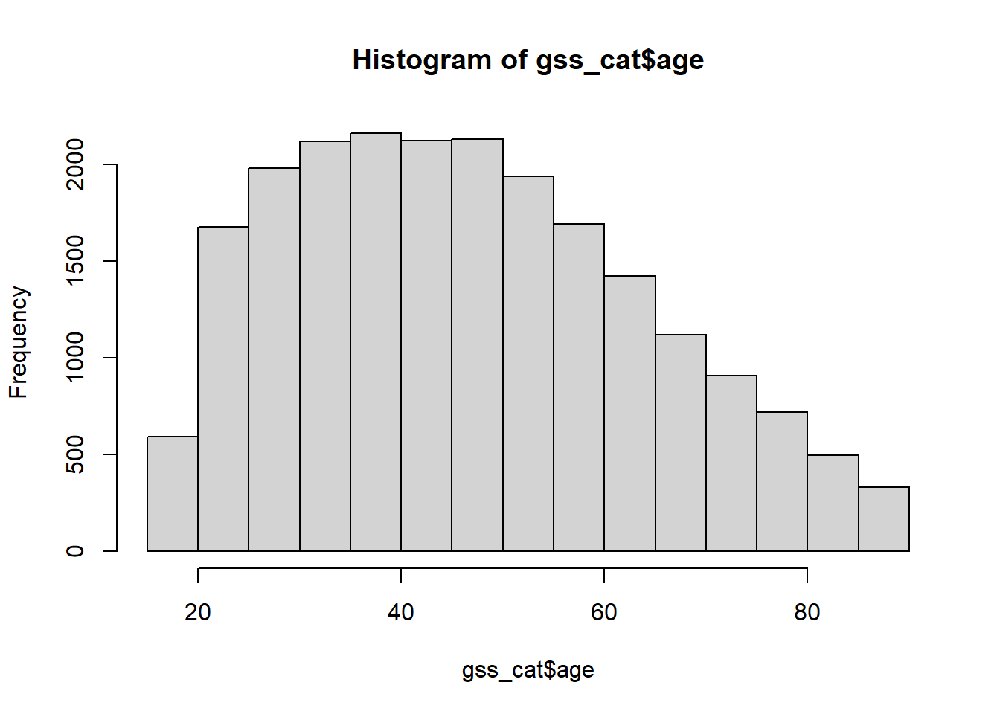
Your turn
Run table() on the religion variable in gss_cat
Produce a histogram of the tvhours variable in gss_cat
The pipe operator (%>%)
- The
%>%operator (Ctrl + Shift + M) inserts the input from the left as the first argument in the next function - To start, you can read it as, “then”
- It is crucial for work in the
{tidyverse}
. . .
gss_cat %>%
count(marital)# A tibble: 6 × 2
marital n
<fct> <int>
1 No answer 17
2 Never married 5416
3 Separated 743
4 Divorced 3383
5 Widowed 1807
6 Married 10117. . .
We will talk about this a lot more later
Quick aside
Base R has a native pipe now!
R 4.1.0 introduced a native pipe operator, |>. As described in the R News:
R now provides a simple native forward pipe syntax
|>. The simple form of the forward pipe inserts the left-hand side as the first argument in the right-hand side call.
The behavior of the native pipe is basically the same as the %>% pipe (from the {magrittr} package)
Luckily there’s no need to commit entirely to one pipe or the other — you can use the base pipe for the majority of cases where it’s sufficient and use the magrittr pipe when you really need its special features.
More here.
Why use %>%
Chaining arguments is efficient and easy to read
. . .
gss_cat %>%
filter(relig == "Buddhism",
age > 55) %>%
select(age, partyid, rincome) %>%
arrange(age) %>%
slice(1:4)# A tibble: 4 × 3
age partyid rincome
<int> <fct> <fct>
1 56 Not str democrat $25000 or more
2 56 Ind,near dem $25000 or more
3 56 Not str democrat $4000 to 4999
4 56 Independent $25000 or more. . .
Equivalent to:
slice(arrange(select(filter(gss_cat, relig == "Buddhism", age > 55), age, partyid, rincome), age), 1:5)Next time
Before next class
Reading
- Week 1 reading (if you haven’t already)
Assignments